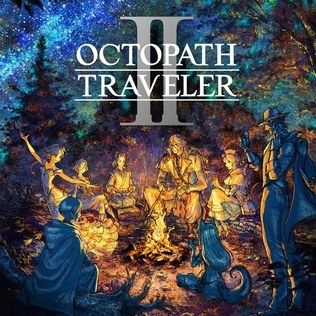

Avant de partir
Introduction : comprendre Octopath Traveler II

Jaquette © SQUARE ENIX. Guide non officiel.
Objectif
Te donner les clés du jeu avant de partir : comment marchent le combat (Exaltation, Failles, pouvoirs latents), les classes, l'économie, et quelles erreurs coûtent le plus cher. Le guide couvre Octopath Traveler II (Square Enix / Acquire, 2023) sur Switch, PS5, PS4, Xbox Series, Xbox One et PC : le contenu est identique partout.
Itinéraire
- Chapitre 01 : choisir son héros, recruter les sept autres, comprendre le terrain.
- Chapitres 02 à 09 : les huit histoires, une par voyageur.
- Chapitres 10 et 11 : histoires croisées et histoire finale.
- Chapitres 12 à 17 : classes, quêtes annexes, équipement ultime, donjons optionnels, boss secret.
Déroulé pas à pas
Le jeu en trois phrases
- Huit voyageurs, huit histoires indépendantes, sur le continent de Solistia — coupé en deux par la mer.
- Tu choisis ton premier héros, tu joues son chapitre 1, puis tu recrutes les autres et tu alternes leurs chapitres dans l'ordre que tu veux.
- Quand les huit histoires sont bouclées, une histoire finale les relie et donne son sens au voyage.
Le combat : Faille et Exaltation
- Chaque ennemi affiche un bouclier avec un nombre et des faiblesses (huit armes : épée, lance, dague, hache, arc, bâton, plus les six éléments : feu, glace, foudre, vent, lumière, ombre).
- Frapper une faiblesse retire un point de bouclier. À zéro, l'ennemi est en Faille : il perd son tour et prend beaucoup plus de dégâts.
- L'Exaltation : tu gagnes 1 point (PE) par tour, jusqu'à 5 en réserve, et tu peux en dépenser 3 d'un coup. Une attaque exaltée frappe plusieurs fois (donc casse plusieurs boucliers) ou beaucoup plus fort.
- La règle d'or : économise jusqu'à 3 PE, brise le bouclier, puis frappe exalté sur un ennemi en Faille. Ne gaspille tes PE que pour briser un bouclier en urgence.
- Les buffs comptent autant que les dégâts : un danseur qui augmente l'attaque physique ou élémentaire double presque la valeur d'un tour de Faille.
- Briser un boss qui charge : quand un boss « perd » un tour à préparer une attaque, brise-le — cela annule la charge. C'est souvent plus rentable que d'attaquer.
- Les pierres élémentaires (feu, glace, foudre, vent…) touchent tous les ennemis sans dépendre de ton équipement : elles dépannent tes personnages de soutien et déblaient les boucliers.
- Les pouvoirs latents se chargent quand tu encaisses ou quand tu brises : chaque voyageur a le sien (chapitre 01), et c'est souvent ce qui renverse un combat de boss.
- La magie ne rate jamais : contre les ennemis très esquivants (félandrins, octolins), c'est le seul moyen fiable.
Le jour, la nuit, et les actions de chemin
- Tu changes l'heure quand tu veux. La nuit, les ennemis sont plus forts — donc plus rentables en expérience, argent et PC.
- Chaque voyageur a deux actions de chemin, une de jour et une de nuit (tableau complet au chapitre 01). Elles servent à voler, acheter, assommer, guider, interroger ou recruter les habitants.
- Deux familles d'actions :
- les actions « nobles » dépendent de ton niveau et réussissent toujours ;
- les actions « risquées » ont un taux de réussite et font baisser ta réputation en cas d'échec (l'auberge la restaure, contre paiement).
- Les PNJ recrutés combattent avec toi : c'est la meilleure façon de couvrir une faiblesse que ton équipe n'a pas.
Les classes
- Chaque voyageur a sa classe d'origine (épéiste, apothicaire, danseur, voleur, érudit, prêtre, marchand, chasseur) et peut recevoir une classe secondaire trouvée dans une guilde (chapitre 12).
- Une classe secondaire apporte ses armes, ses capacités et ses aptitudes de soutien : c'est le plus gros gain de puissance du jeu, très en avance sur le niveau.
- Quatre classes avancées existent : Inventeur, Maître d'arme, Mage et Chaman. Elles sont cachées et se débloquent par des conditions particulières.
- Les PC (points de compétence) achètent les capacités. Les licences permettent d'attribuer une même classe à plusieurs personnages.
L'argent, l'équipement, les noix
- Les quêtes annexes sont la principale source de noix, ces objets qui augmentent définitivement une statistique. ⚠️ Ne les disperse pas : concentre un type de noix sur un seul personnage.
- Les meilleures armes du jeu sont portées par des PNJ (chapitre 15) : on les vole avec Throné ou on les achète avec Partitio.
- Les acolytes (Soldat vétéran, Assassins étrangers) sont une solution payante mais imparable contre les boss qui te bloquent.
- Le navire (chapitre 06) ouvre la haute mer : îles, donjons, boss marins et une partie du meilleur équipement.
Les erreurs de débutant
- ⚠️ Entrer dans une zone trop dangereuse : chaque route affiche un niveau de danger. Rien ne t'arrête, et c'est un piège.
- ⚠️ Négliger les classes secondaires : un groupe de niveau 30 bien classé bat un groupe de niveau 45 sans classes.
- ⚠️ Gaspiller ses PE : trois PE sur un ennemi non brisé, c'est un tour perdu.
- ⚠️ Oublier de repasser la nuit dans les villes : la moitié des coffres, des objets et des quêtes se débloquent à l'autre moment de la journée.
- ⚠️ Disperser les noix entre huit personnages : tu n'auras de vraie puissance nulle part.
- ⚠️ Enchaîner les chapitres d'un seul héros : les niveaux conseillés montent vite, il vaut mieux alterner et faire les quêtes annexes.
- ⚠️ Vendre des matériaux : la concoction de Castti et les inventions en ont besoin.
Comment lire ce guide
- Les chapitres suivent la progression : démarrage, puis une partie par voyageur, puis les contenus transversaux.
- Les alertes : ⚠️ pour un piège, un échec possible ou un choix définitif ; ⏳ pour un objet ou une quête manquable.
- Les noms sont ceux de la version française ; le nom anglais est donné entre parenthèses quand il aide à chercher en ligne.
- Les niveaux conseillés sont indiqués par chapitre ; le jeu affiche aussi le sien dans le journal.
Quêtes et lieux
- Les huit régions : Terres Lumière, Grands-Pics, Landes-de-neige, Terres Sauvages (ouest) ; Moultports, Belleramée, Hinoeuma, Toto Haha (est).
- Les traversées payantes relient les deux moitiés tant que tu n'as pas le navire (1 000 à 2 500 F).
- Les tavernes servent à changer d'équipe ; les auberges à dormir et à restaurer la réputation.
Butin exhaustif
| Nom exact | Type | Où / comment l'obtenir | Utilité |
|---|---|---|---|
| Noix (toniques, critiques, magiques, acérées…) | Consommables | Quêtes annexes, coffres | Statistiques permanentes |
| Pierres élémentaires | Consommables | Coffres, vols sur les ennemis élémentaires | Dégâts de zone garantis |
| Licences de classe | Objets clés | Guildes (chapitre 12) | Une classe sur plusieurs personnages |
| Navire | Véhicule | Flair des affaires du Chantier naval de Tropp Hopp (100 000 F) | Haute mer |
Conseils et pièges
- Alterne les histoires : un chapitre d'un héros, une région explorée, des quêtes annexes, et ainsi de suite.
- Passe la nuit partout : c'est la moitié du contenu des villes.
- Prends une classe secondaire dès la première guilde croisée.
- Garde un soigneur et un « briseur de boucliers » dans chaque équipe.
- Fais les quêtes annexes avant les combats de fin : elles donnent les noix qui font la différence.
Alertes
- ⚠️ Le premier voyageur choisi ne peut pas quitter l'équipe avant la fin de son histoire.
- ⚠️ L'histoire finale exige les huit histoires et les quatre histoires croisées.
- ⚠️ Le boss secret a sa propre chaîne de quêtes (chapitre 17).
Check-list
- Premier héros choisi et chapitre 1 terminé
- Sept compagnons recrutés
- Première classe secondaire équipée
- Villes visitées de jour et de nuit
- Navire débloqué
- Noix concentrées sur deux ou trois personnages
Partie 01
Bien démarrer : choisir son héros et comprendre le terrain
L'essentiel
- Le choix du moment : le premier voyageur, qui ne quitte pas l'équipe avant la fin de son histoire.
- Attention : chaque action risquée ratée fait baisser la réputation de la ville.
- Avant de finir une histoire : fais le tour de la ville, certains PNJ disparaissent ensuite.
Objectif
Choisir ton premier voyageur en connaissance de cause, recruter les sept autres, et comprendre les outils que le jeu te donne hors combat : les actions de chemin (une de jour, une de nuit par personnage), les talents, les pouvoirs latents, les acolytes et les voyages en bateau. Les mécaniques de combat sont détaillées dans l'introduction (chapitre 00).
Itinéraire
📍 La zone en images : Solistia — sur le Octopath Traveler Wiki, en anglais : carte, captures et objets de chaque lieu.
- L'écran de sélection : huit voyageurs, huit régions de départ.
- Le chapitre 1 de ton héros, puis le tour du continent pour recruter les autres : chaque chapitre 1 se joue dans la ville d'origine du personnage.
- Les deux moitiés du monde sont séparées par la mer : les traversées coûtent de l'argent (1 000 à 2 500 F) tant que tu n'as pas ton propre navire.
Déroulé pas à pas
Les huit voyageurs et leur point de départ
| Voyageur | Classe | Où commence son chapitre 1 |
|---|---|---|
| Hikari | Épéiste | Le champ de bataille de Koù, à Hinoeuma |
| Agnéa | Danseuse | Son village natal, Boisseaux-Vallon, en Belleramée |
| Partitio | Marchand | Sa ville minière, Larue-et-Verlors, dans les Terres Sauvages, près de la Mine d'argent |
| Osvald | Érudit | Le Bagne, dans les Landes-de-neige |
| Throné | Voleuse | Néo Delsta, dans les Terres Lumière |
| Temenos | Prêtre | Flamme-de-Clergé, dans les Grands-Pics |
| Ochette | Chasseresse | Le village de Kénomo, à Toto Haha |
| Castti | Apothicaire | Un navire, puis Canal-Salin, aux Moultports |
Le choix du premier héros : ce qui change vraiment
- ⚠️ Le premier voyageur choisi est verrouillé dans ton équipe jusqu'à ce que toute son histoire soit terminée. Les sept autres se changent librement à l'auberge. Choisis donc quelqu'un que tu as envie de jouer longtemps.
- Son histoire sert de fil rouge : c'est son prologue que tu joues, et le jeu commence dans sa région.
- Aucune exclusivité : tous les autres voyageurs restent recrutables ensuite, dans l'ordre que tu veux.
- Les bons premiers choix :
- Ochette ou Osvald : leurs talents facilitent tous les combats (monstres capturés, faiblesses révélées) ;
- Hikari : le plus polyvalent en combat, et ses capacités apprises montent en puissance toute la partie ;
- Castti : sa concoction remplace soins et bombes tant que tu n'as pas d'argent ;
- Partitio : son flair des affaires ouvre des raccourcis d'argent et le navire plus tard ;
- Throné ou Temenos : les plus confortables si tu joues de nuit.
- Le recrutement conseillé : commence par Ochette ou Osvald, ajoute Hikari (dégâts) et Castti (soins), puis complète selon tes envies. Partitio peut attendre : ses contrats d'affaires rapportent surtout quand tu as de quoi payer.
Les actions de chemin (jour et nuit)
- Chaque voyageur a deux actions de chemin : une de jour, une de nuit. Le jour et la nuit se changent à volonté depuis le menu, partout sauf pendant certaines scènes.
| Voyageur | Action de jour | Action de nuit | À quoi ça sert |
|---|---|---|---|
| Throné | Voler | Attaquer par surprise | Prendre un objet à un PNJ ; assommer un PNJ qui bloque un passage |
| Osvald | Scruter | Extorquer | Obtenir une information ; prendre un objet en combattant le PNJ |
| Castti | Questionner | Anesthésier | Obtenir une information ; endormir un PNJ qui bloque |
| Ochette | Provoquer | Apprivoiser | Combattre un PNJ pour dégager la voie ; le recruter comme allié |
| Partitio | Acheter | Embaucher | Acheter l'objet d'un PNJ ; l'embaucher pour combattre avec toi |
| Agnéa | Séduire | Attendrir | Faire suivre un PNJ ; lui faire donner de l'argent ou un objet |
| Temenos | Guider | Démasquer | Faire suivre un PNJ ; lui arracher une information en « duel mental » |
| Hikari | Défier | Soudoyer | Duel pour apprendre une capacité ; payer pour une information |
- ⚠️ Les intitulés exacts de ces actions peuvent différer légèrement à l'écran : à vérifier en jeu.
- Actions « nobles » et actions « risquées » :
- Nobles (Questionner, Guider, Acheter, Défier, Scruter…) : il faut un niveau suffisant, mais elles réussissent toujours.
- Risquées (Voler, Séduire, Provoquer, Extorquer…) : un pourcentage de réussite, et ta réputation en ville baisse en cas d'échec.
- Réputation au plus bas : il faut payer à l'auberge pour repartir de zéro.
- Le réflexe à prendre en ville : passe tous les PNJ en revue, de jour puis de nuit. Un PNJ qui bloque une porte cache presque toujours un coffre derrière lui.
- Les PNJ qui améliorent tes actions : Questionner ou Scruter certains habitants débloque un bonus valable dans cette ville seulement (vol plus sûr, embauche moins chère, initiative garantie…). Fais-le avant de dévaliser une ville.
Les talents
- Chaque voyageur a un talent permanent, indépendant de sa classe.
| Voyageur | Talent | Effet |
|---|---|---|
| Hikari | Capacités apprises (Learned Skills) | Apprend une capacité par PNJ vaincu en duel, jusqu'à cinq utilisables en combat |
| Osvald | Étudier l'ennemi (Study Foe) | Révèle une faiblesse inconnue par ennemi en début de combat (deux si l'ennemi a déjà été rencontré) |
| Agnéa | Séance de danse (Dance Session) | Invoque en combat un PNJ séduit, qui agit après chacune de tes actions |
| Partitio | Associés (Business Partners) | Les PNJ embauchés combattent pour toi et apportent leurs propres bonus |
| Castti | Concoction (Concoct) | Mélange des matériaux en combat : soins, buffs, ou compositions offensives |
| Throné | Bénédiction des ténèbres | La nuit, toute l'équipe gagne vitesse, attaque physique et élémentaire (3 tours) |
| Temenos | Jugement du clair de lune | La nuit, tous les ennemis subissent des malus |
| Ochette | Capturer | Capture les monstres affaiblis et les invoque en combat |
Les pouvoirs latents
- La jauge de pouvoir latent se remplit quand tu subis des dégâts ou que tu brises un ennemi. Pleine, elle donne un coup d'éclat unique par personnage.
| Voyageur | Pouvoir latent | Effet |
|---|---|---|
| Ochette | Instinct animal | Accès à trois capacités spéciales |
| Castti | Rien ne se perd | Concocter sans consommer de matériaux |
| Throné | Sans laisser de trace | Agir deux fois dans le tour |
| Osvald | Concentration des sorts | Concentre un sort de zone sur une seule cible, bien plus fort |
| Partitio | Appel du marchand | Remplit instantanément ses PE |
| Agnéa | Tous en scène | Étend une capacité monocible à tout le monde |
| Temenos | Jugement | N'importe quelle attaque entame les boucliers, même sans faiblesse |
| Hikari | Ombre et lumière | Débloque ses capacités les plus puissantes |
Les acolytes et les PNJ en combat
- Les renforts : Embaucher (Partitio) ou Guider / Séduire / Apprivoiser un PNJ te donne un allié en combat.
- Les plus chers sont des solutions de secours honteuses mais efficaces.
- Soldat vétéran : 30 000 F, il démolit la plupart des boss jusqu'aux chapitres 4.
- Assassins étrangers : 50 000 F, encore plus violents, mais il faut d'abord les battre, au sud de l'entrée de Belcollines, en bas de l'échelle.
- À économiser pour les murs : garde cette astuce pour les boss qui te bloquent vraiment, sinon ta bourse fond.
Voyager : bateau, niveaux de danger, navire
- Le continent est coupé en deux : l'ouest (Terres Lumière, Grands-Pics, Landes-de-neige, Terres Sauvages) et l'est (Moultports, Belleramée, Hinoeuma, Toto Haha). Les liaisons payantes partent des quais :
- Néo Delsta → Terres Sauvages : 2 500 F ;
- Canal-Salin ou Néo Delsta → Toto Haha : 1 000 F.
- Chaque route affiche un niveau de danger : c'est le vrai garde-fou du jeu. Une zone à niveau 40 te tuera au niveau 15, même si rien ne t'empêche d'y entrer.
- Le navire s'obtient en avançant le flair des affaires de Partitio (chapitre 06) : il ouvre la haute mer, des îles, des donjons optionnels et plusieurs quêtes annexes.
- Les points de sauvegarde sont aussi des points de voyage rapide : touche-les systématiquement en entrant dans une zone.
Les premières heures, concrètement
- Fais le chapitre 1 de ton héros, puis recrute deux ou trois compagnons avant de pousser plus loin : les chapitres 1 sont tous prévus pour un groupe de bas niveau.
- Passe la nuit dans chaque ville visitée : les actions nocturnes ouvrent des maisons et des coffres que tu ne reverras pas forcément.
- Achète les classes secondaires dès que possible (chapitre 12) : une deuxième classe double les armes et les sorts disponibles, et c'est le plus gros gain de puissance du jeu.
- Ne néglige pas les noix (Noix de ...) : ces objets augmentent définitivement une statistique. Utilise-les sur les personnages que tu joues vraiment.
Quêtes et lieux
- Les huit villes de départ servent de plaque tournante : marchand, auberge, tavernier (changement d'équipe) et parfois une guilde.
- La Sacoche du voyageur (Terres Lumière) est la première quête annexe donnée automatiquement, dès la fin d'un chapitre 1 (chapitre 13).
- Les guildes de classes secondaires s'ouvrent dès l'acte 1 pour certaines : voir le chapitre 12.
Butin exhaustif
| Nom exact | Type | Où / comment l'obtenir | Utilité |
|---|---|---|---|
| Sacoche d'apothicaire | Objet clé | Chapitre 1 de Castti, en bas des escaliers du navire | Débloque la concoction |
| Bourse pleine d'espoir | Objet clé | Chapitre 1 d'Agnéa, près du point de sauvegarde | Lance son chapitre |
| Carnet d'Osvald | Objet clé | Chapitre 1 d'Osvald, en extorquant le prisonnier voisin | Lance son chapitre |
| Pépite d'argent | Objet | Chapitre 1 de Partitio, achetée au marchand rouge au nord | Lance son chapitre |
| Premier compagnon d'Ochette | Allié | Chapitre 1 d'Ochette : le hibou (faiblesse magique) ou l'autre bête (faiblesse physique) | ⚠️ le choix compte pour son dernier chapitre |
Conseils et pièges
- Choisis un héros que tu aimes : tu le garderas jusqu'à la fin de son histoire.
- Joue la nuit pour farmer : ennemis plus forts, donc plus d'expérience, d'argent et de PC — et les talents de Throné et Temenos s'activent.
- Vise les bonus de fin de combat : Aucun dégât (argent), Anéantissement (expérience), Domination (PC), Faille (expérience).
- Garde 1 000 à 2 500 F avant de partir en recrutement : les traversées se paient.
- Note les PNJ que tu ne peux pas encore voler : reviens quand ton niveau aura monté.
Alertes
- ⚠️ Le premier voyageur ne peut pas quitter l'équipe avant la fin de son histoire.
- ⚠️ Échouer une action risquée fait baisser la réputation de la ville ; trop d'échecs et il faut payer à l'auberge.
- ⏳ Les objets volés ou achetés aux PNJ d'une ville peuvent devenir inaccessibles si un PNJ disparaît après un chapitre : fais le tour des villes avant d'en terminer l'histoire.
- ⚠️ Le choix du premier compagnon d'Ochette influence son chapitre final.
Check-list
- Premier voyageur choisi et son chapitre 1 terminé
- Deux ou trois compagnons recrutés avant d'aller plus loin
- Toutes les villes visitées de jour et de nuit
- PNJ « améliorateurs » questionnés dans les villes que tu comptes dévaliser
- Premiers points de sauvegarde touchés dans chaque région
- Classes secondaires achetées dès qu'une guilde est accessible
Partie 02
Throné, la voleuse des Serpents
L'essentiel
- Le choix du moment : la branche Mère ou Père, et au banquet, la coupe de droite.
- À ne pas rater : les coffres du canoë (Noix critique), de la grotte cachée du Jardin Nourricier et sous les grands escaliers d'Akène.
- Avant le chapitre 4 : vole ce qui t'intéresse à Néo Delsta, la ville change ensuite.
Objectif
Suivre l'histoire de Throné Anguis, esclave de la guilde des voleurs les Serpents à Néo Delsta, qui veut acheter sa liberté — et découvre que ses deux maîtres, Mère et Père, ne lui laisseront pas ce luxe. Son histoire compte quatre chapitres, dont deux branches parallèles (Mère et Père) qu'il faut faire toutes les deux.
Itinéraire
📍 La zone en images : Néo Delsta — sur le Octopath Traveler Wiki, en anglais : carte, captures et objets de chaque lieu.
- Chapitre 1 : les égouts puis la ville de Néo Delsta (Terres Lumière), et la maison de Diamante.
- Chapitre 2 : deux branches — Larue-et-Verlors (Terres Sauvages) pour Mère, Gelanthèse et son Quartier des voleurs pour Père.
- Chapitre 3 : Puitseraie et le Jardin Nourricier pour Mère ; Butte-aux-sages et l'église abandonnée du Chemin désolé pour Père.
- Chapitre 4 : retour à Néo Delsta, les égouts, la Ruelle déserte, puis Akène et son château.
Niveaux conseillés : 1 au chapitre 1 ; chapitre 2 : 7 pour la branche Mère (Larue-et-Verlors), 16 pour la branche Père (Gelanthèse) ; chapitre 3 : 31 pour chaque branche ; 45 au chapitre 4. Le jeu les affiche aussi dans le journal.
Déroulé pas à pas
Chapitre 1 — Néo Delsta
- Le combat d'ouverture sert de tutoriel : deux pourchasseurs faibles à l'épée, la hache et la dague.
- Le jeu y explique la Faille (briser les boucliers) et l'Exaltation (PE).
- À voler au passage : Raisin curatif
- Fuis par la gauche, ⏳ prends le Raisin curatif du coffre après le pont au sud.
- Le garde se contourne avec l'action nocturne de Throné : monte à l'échelle et assomme-le par derrière.
- Deuxième combat : élimine d'abord les deux pourchasseurs (faibles à tout), puis le Chef des pourchasseurs.
- Il est faible à la hache de Scaracci et à la capacité Ombre de Throné : trois coups pour le briser.
- Il vole des PV avec Perforation cardiaque.
- À voler : Prune stimulante
- En ville : sauvegarde, puis va à la salle des jeux au nord. Après la rencontre avec « Père », attends Mère au nord de la salle.
- Le lendemain, avant d'entrer dans la salle de jeux, ⏳ passe à gauche et prends le canoë pour atteindre l'arrière du bâtiment : coffre avec 1 Noix critique.
- Après ta mission, vole ses habits à la fille près du point de sauvegarde, puis file à l'est vers la maison de Diamante.
- ⏳ Dévalise la ville au passage : le Portier du théâtre porte une Armure en cuir, et un coffre tout à l'est contient une Grenade tonifiante. Règle d'or : si la chance de réussite est de 100 %, vole.
- La maison de Diamante : assomme le garde.
- À l'est, en bas des escaliers : 1 200 G
- En haut : Pierre d'ombre
- Plus loin : une épée longue, meilleure que celle de Throné
- Vers l'est : un marchand, un point de sauvegarde et une Prune stimulante
- Boss : Pirlo — faiblesses épée, lumière, ombre.
Chapitre 2, branche Mère — Larue-et-Verlors
- Entre dans le saloon en face de l'entrée. Après la scène, va voler l'Homme menaçant dans le saloon du nord, puis reviens montrer ta trouvaille.
- Direction la Fonderie, au nord. ⏳ Assomme le marchand devant la maison voisine pour entrer et prendre des Marchandises.
- Dans la petite allée à l'ouest, en bas des escaliers, une scène se déclenche : passe au jour et vole le masque de la personne qui te suit. Remonte au nord, passe le garde et entre dans la fonderie.
- Parle au Trafiquant et accepte le banquet de la mort. ⚠️ Au moment de choisir la coupe, prends celle de droite : le jeu te le souffle discrètement, et c'est la seule façon de gagner proprement.
Chapitre 2, branche Père — Gelanthèse
- Monte directement au Quartier des voleurs, au nord de la ville. ⏳ Litchi exaltant (M) à côté de l'entrée.
- Dans la maison du nord, attaque les loubards par surprise (action nocturne), puis retrouve Père à l'est de la ville : attaque le garde par surprise et descends dans le Repaire.
- ⏳ Le tour du repaire : après le pont et la femme attachée, descends l'échelle.
- En canoë, au nord : Prune stimulante (M)
- Au sud de la femme attachée : Raisin curatif (M)
- Dans l'eau, vers le sud : Pierre d'ombre (M)
- Tout à l'est : Dague de quartz
- Reviens à la planche en bois, prends à droite, sauvegarde.
- Boss : Bergomi — faiblesses épée, arc, feu.
Chapitre 3, branche Mère — Puitseraie
- Vole les vêtements de la nonne près de l'auberge, puis va au Jardin Nourricier.
- ⏳ Sur le chemin :
- Le coffre à l'entrée
- Chemin caché à droite, vers l'ouest : Dague effilée
- En canoë, sur l'île centrale : Prune stimulante (M)
- Au nord, une grotte cachée : Bandana de silence
- Dans l'Orphelinat du jardin nourricier, monte voir Mira à l'étage, puis vole la clé du Jardin Nourricier à Morozov, devant la porte.
- ⏳ Dehors : une Grappe de raisin curatif à gauche, et au bout du petit sentier de gauche une Pierre de calme (accessoire).
- ⏳ Dans le jardin : un Casque à cornes et 13 000 F, puis une Confiture vivifiante à droite juste avant les escaliers qui mènent à Mère.
- Boss : Mère — faiblesses : dague, arc, glace, lumière.
Chapitre 3, branche Père — Butte-aux-sages
- Pars à l'est vers le Chemin désolé. ⏳ Fiole de poudre empoisonnée juste avant le pont ; traverse pour retrouver Père.
- ⏳ Après la scène : Grenade tonifiante au nord du pont, Amulette gardienne un peu au sud, et une Pierre de glace (M) dans une petite grotte sous les escaliers de l'église.
- L'église abandonnée : rejoins Père en haut des escaliers et entre. ⏳
- Rez-de-chaussée : Grappe de raisin curatif, Dague noire
- À l'étage, de l'autre côté, près des escaliers : Panier de prunes stimulantes
- Sur le chemin du fond : Olive vitale (M)
- Boss : Père — faiblesses : lance, dague, hache, vent, lumière.
Chapitre 4 — Néo Delsta et Akène
- Rends-toi au cimetière de Néo Delsta et attaque le serpent par surprise.
- Entre dans les égouts et refais le donjon à l'envers jusqu'à la porte, puis descends l'échelle : la Ruelle déserte.
- ⏳ Après la première échelle, à gauche : Cotte de dragon. Traverse le pont, tu croises un Guide. ⏳ Avant de monter dans le téléphérique, ouvre le coffre de droite : Herbe narcotique.
- ⏳ À Akène : Grenade tonifiante (M) au sud du téléphérique, Olive vitale (G) au nord. À l'est, la source des pleurs de bébé, puis le château d'Akène.
- ⏳ Dans le château :
- Sur le chemin : Litchi exaltant (M)
- À l'ouest, une petite salle : Pierre d'ombre (G)
- En haut des escaliers, continue à l'ouest sans monter à l'échelle et passe sous les grands escaliers : Herbe omnipotente
- Au dernier étage, sur le chemin : Grenade tonifiante (G) ; par le chemin descendant au sud, au bout : 27 500 F
- Par les planches en bois vers l'échelle nord : Confiture revitalisante
- À côté du point de sauvegarde : Pierre de lumière (M)
- Boss : Claude — faiblesses : bâton, dague, hache, foudre, ombre.
Quêtes et lieux
- Néo Delsta : la capitale des Terres Lumière, avec théâtre, salle des jeux, cimetière et égouts. Beaucoup de PNJ à voler, et plusieurs quêtes annexes (chapitre 13).
- La guilde des voleurs se trouve à Chronorive, pas à Néo Delsta : elle ouvre la classe secondaire de voleur (chapitre 12).
- L'autel du prince des voleurs (Ruelle sud de Chronorive) donne à Throné sa compétence EX Vol sombre (chapitre 12).
- Les deux branches (Mère et Père) sont indépendantes : fais-les dans l'ordre que tu veux, mais les deux sont nécessaires pour ouvrir le chapitre 4.
Butin exhaustif
| Nom exact | Type | Où / comment l'obtenir | Utilité |
|---|---|---|---|
| Raisin curatif | Consommable | Coffre après le pont sud, chapitre 1 | Soin |
| Noix critique | Consommable | Coffre derrière la salle des jeux (en canoë), chapitre 1 | +critique permanent |
| Armure en cuir | Armure | Volée au Portier du théâtre, Néo Delsta | Armure de début |
| Grenade tonifiante | Consommable | Coffre à l'est de Néo Delsta, chapitre 1 | Buff |
| 1 200 G, Pierre d'ombre, épée longue, Prune stimulante | Argent, objets, arme | Maison de Diamante, chapitre 1 | Progression |
| Marchandises | Objet de quête | Maison gardée devant la Fonderie (assommer le marchand) | Quête La marchandise volée (chapitre 14) |
| Litchi exaltant (M), Prune stimulante (M), Raisin curatif (M), Pierre d'ombre (M), Dague de quartz | Consommables, arme | Quartier des voleurs et Repaire de Gelanthèse, chapitre 2 (Père) | Progression |
| Dague effilée, Bandana de silence, Pierre de calme | Arme, accessoires | Jardin Nourricier, chapitre 3 (Mère) | Équipement |
| Casque à cornes, 13 000 F, Confiture vivifiante | Armure, argent, consommable | Jardin Nourricier (après la clé), chapitre 3 (Mère) | Équipement |
| Fiole de poudre empoisonnée, Amulette gardienne, Pierre de glace (M) | Consommable, accessoire | Chemin désolé, chapitre 3 (Père) | Équipement |
| Dague noire, Panier de prunes stimulantes, Olive vitale (M) | Arme, consommables | Église abandonnée, chapitre 3 (Père) | Équipement |
| Cotte de dragon, Herbe narcotique | Armure, consommable | Ruelle déserte, chapitre 4 | Équipement |
| Pierre d'ombre (G), Herbe omnipotente, Grenade tonifiante (G), 27 500 F, Confiture revitalisante, Pierre de lumière (M) | Consommables, argent | Château d'Akène, chapitre 4 | Le plus gros butin de son histoire |
Conseils et pièges
- Throné est faite pour la nuit : son talent donne vitesse et attaque à toute l'équipe, et son action nocturne ouvre les maisons gardées.
- Vole systématiquement à 100 % : c'est gratuit, et certains PNJ portent de l'équipement très au-dessus de ton niveau.
- Son pouvoir latent (agir deux fois) est le meilleur outil anti-boss du jeu au début : garde-le pour briser un bouclier puis frapper.
- Contre Mère et Père, prépare des dagues et des arcs : leurs faiblesses se recoupent.
Alertes
- ⚠️ Le banquet de la mort (chapitre 2, Mère) : prends la coupe de droite.
- ⏳ Manquables : les coffres du canoë (Noix critique), de la grotte cachée du Jardin Nourricier, et le détour sous les grands escaliers du château d'Akène.
- ⏳ Les objets volés aux PNJ de Néo Delsta : fais-en le tour avant le chapitre 4, la ville change ensuite.
- ⚠️ Si Throné est ton héros de départ, elle reste dans l'équipe jusqu'à la fin de son chapitre 4.
Check-list
- Chapitre 1 : Pirlo vaincu, Noix critique et épée longue récupérées
- Chapitre 2 (Mère) : banquet gagné (coupe de droite), Marchandises prises
- Chapitre 2 (Père) : Bergomi vaincu, Dague de quartz
- Chapitre 3 (Mère) : Mère vaincue, Pierre de calme et 13 000 F
- Chapitre 3 (Père) : Père vaincu, Dague noire
- Chapitre 4 : Claude vaincu, 27 500 F et Herbe omnipotente
- Autel du prince des voleurs visité (compétence EX)
Partie 03
Temenos, l'inquisiteur de la Flamme sacrée
L'essentiel
- À la taverne de Canal-Salin : le coupable est l'encapuchonné le plus proche de la scène (7 points de défense).
- Forêt de la perdition : il faut d'abord avoir guidé Sirlut.
- À ne pas rater : les coffres en canoë (Anneau de stimulation, Prune stimulante), les 5 600 F du mât, l'Amulette du vide.
Objectif
Suivre l'enquête de Temenos Mistral, prêtre inquisiteur de Flamme-de-Clergé, sur un meurtre commis au cœur de l'Ordre sacré. Quatre chapitres, dont un chapitre 3 en deux volets (Crevasstrie puis Ouragrêle) à faire tous les deux. C'est l'histoire la plus « roman policier » du jeu : elle se joue autant par les interrogatoires que par les combats.
Itinéraire
📍 La zone en images : Flamme-de-Clergé — sur le Octopath Traveler Wiki, en anglais : carte, captures et objets de chaque lieu.
- Chapitre 1 : Flamme-de-Clergé (Grands-Pics), le Chemin de pèlerinage, puis la cathédrale par les sous-sols.
- Chapitre 2 : Canal-Salin (Moultports), la taverne, puis le Vaisseau de l'Ordre sacré.
- Chapitre 3 : Crevasstrie et les Ruines du Crépuscule ; Ouragrêle, le Siège de l'Ordre sacré et son sanctuaire interdit.
- Chapitre 4 : le Village sans nom, la Forêt de la perdition et le Rocher brisé.
Niveaux conseillés : 1 au chapitre 1, 14 au chapitre 2 ; chapitre 3 : 24 pour Crevasstrie, 37 pour Ouragrêle ; 45 au chapitre 4. Le jeu les affiche aussi dans le journal.
Déroulé pas à pas
Chapitre 1 — Flamme-de-Clergé
- Le prologue se joue avec Aelfric, très haut niveau : au bout de quelques tours, l'option Aide des dieux se débloque, utilise-la pour conclure.
- Descends en ville, croise l'Insurgé, puis guide le chevalier jusqu'à la cathédrale, au nord.
- ⏳ Le Chemin de pèlerinage :
- Sur le chemin : Prune stimulante, Raisin curatif
- Dans la grotte, en canoë vers la cascade : Anneau de stimulation
- À l'est : Noix coriace
- Pour entrer dans la cathédrale, il faut une information : approche Vados l'architecte, à l'est de la ville, et démasque-le (action nocturne). Le duel mental se gagne en le rendant vulnérable : il est faible à la lumière, donc deux Lumière sacrée suffisent.
- Entre par la cabane à l'est de la cathédrale, qui donne sur les sous-sols. ⏳
- En haut des escaliers : Pierre de lumière
- En canoë : Prune stimulante
- Au nord, derrière la statue : Bâton de pèlerin
- Monte à l'échelle pour entrer dans la cathédrale. ⏳ Olive vitale dans la salle juste avant le point de sauvegarde, Pierre de lumière tout à l'est.
- Boss : Fielvarg — faiblesses épée, glace, lumière.
- L'enquête, après le combat : examine dans l'ordre
- la lampe à côté ;
- les bris de verre au sol ;
- le bougeoir au centre.
- Après la scène avec la vice-capitaine, va à la bibliothèque au nord de la ville pour clore le chapitre.
Chapitre 2 — Canal-Salin
- Va au nord, là où la foule se masse, et parle aux villageois. Après la rencontre avec Crick, prends le canoë pour rejoindre la maison tout à l'est.
- L'indice en trois temps : examine le bureau (carnet de Lucian), puis le livre de prières à côté, puis l'ordre des prières.
- À la taverne, à l'étage : trois personnes à capuche. ⚠️ Le coupable est celui le plus proche de la scène — il a 7 points de défense à briser, et il est faible au bâton.
- Passe par la grande maison au nord et ressors à l'est pour rejoindre le Vaisseau de l'Ordre sacré.
- ⏳ Sur le vaisseau :
- Derrière la porte d'en face : Masse
- En bas de l'échelle : Prune stimulante (M)
- Tout en haut du mât : 5 600 F
- Derrière la porte bleue : Amulette d'ombre
- En ressortant par l'ouest : Litchi exaltant (M)
- Boss : Vados l'architecte — faiblesses dague, glace, lumière.
Chapitre 3, volet Crevasstrie
- Dors à l'auberge au nord-est de la ville, puis guide Liéza hors de la ville par le Chemin à l'abandon, à l'est.
- ⏳ Raisin curatif (M) dès l'entrée du chemin, et 9 200 F dans une ruine en route.
- Les Ruines du Crépuscule : ⏳ coffre en bas des escaliers (Grenade tonifiante (G)), puis, sur un bureau, examine la lumière bleue pour un Étrange carnet.
- ⏳ Après la cinématique : escalier à l'ouest pour une Robe élémentaire, puis retour à la zone précédente et petit chemin au nord pour un Bâton en jade.
- Pars à l'est : la scène finale clôt ce volet, qui est court et sans boss.
Chapitre 3, volet Ouragrêle
- Va au Siège de l'Ordre sacré, puis au cimetière à l'est pour examiner un corps, puis dors à l'auberge et reviens au siège.
- L'enquête : guide l'ombre de Crick et suis-la jusqu'à découvrir un passage secret dans le siège.
- ⏳ Avant d'y entrer : au rez-de-chaussée tout à l'est, assomme le PNJ qui bloque l'entrée pour une Hache d'écorcheur ; à l'étage ouest, une Grenade tonifiante.
- ⏳ Le sanctuaire interdit :
- Amulette luisante, Olive vitale (M), puis Raisin curatif (M) en bas des escaliers
- À l'est, première salle au nord : 15 000 F
- En continuant la descente, derrière les escaliers : Masse de conjurateur
- Boss : Vice-capitaine Kubaryi — faiblesses : lance, hache, bâton ; puis lance, hache, arc en seconde phase.
Chapitre 4 — le Village sans nom
- Depuis le village, pars vers la Forêt de la perdition : tu t'y perdras quoi qu'il arrive.
- La solution : reviens au village et guide Sirlut le gardien, à l'endroit indiqué sur la carte. Il te fait franchir l'épreuve.
- ⏳ Après l'arrivée avec Sirlut :
- Au nord : Masque cérémonial d'antan
- À l'est : Prune stimulante (M)
- En bas des escaliers, dans les ruines : Grappe de raisin curatif, 28 000 F, Pierre de lumière (G)
- ⏳ Le Rocher brisé :
- À l'étage inférieur, sous les escaliers : Confiture revitalisante
- Par le chemin extérieur : Sceptre divin
- Avant de monter les escaliers, descends les deux échelles : Amulette du vide
- Boss : Kaldina — faiblesses : lance, bâton, vent, glace.
Quêtes et lieux
- La guilde des prêtres est au nord de la Cataracte frontalière, après le pont ; l'autel du porte-flamme est à l'intérieur, derrière la porte verte : il donne à Temenos sa compétence EX Prière revigorante (chapitre 12).
- Flamme-de-Clergé ouvre plusieurs quêtes annexes des Grands-Pics, dont La sécurité des pèlerins (chapitre 14).
- Temenos est indispensable pour plusieurs quêtes annexes : son Démasquer est le seul moyen d'obtenir certaines informations, et son Guider sert à amener des PNJ au bon endroit.
- Le Village sans nom et Sirlut reviennent dans la quête Sirlut, la suite (chapitre 13).
Butin exhaustif
| Nom exact | Type | Où / comment l'obtenir | Utilité |
|---|---|---|---|
| Anneau de stimulation | Accessoire | Chemin de pèlerinage, en canoë vers la cascade | Bonus de statistiques |
| Noix coriace | Consommable | Est du Chemin de pèlerinage | Statistique permanente |
| Bâton de pèlerin | Arme | Derrière la statue, sous-sols de la cathédrale | Bâton de début |
| Pierre de lumière (×2), Olive vitale, Prune stimulante | Consommables | Sous-sols et intérieur de la cathédrale | Progression |
| Masse | Arme | Vaisseau de l'Ordre sacré, porte d'en face | Arme contondante |
| 5 600 F | Argent | Haut du mât du vaisseau | — |
| Amulette d'ombre | Accessoire | Derrière la porte bleue du vaisseau | Résistance ombre |
| 9 200 F, Grenade tonifiante (G), Étrange carnet, Robe élémentaire, Bâton en jade | Argent, objets, équipement | Chemin à l'abandon et Ruines du Crépuscule | Progression |
| Hache d'écorcheur | Arme | PNJ assommé au rez-de-chaussée du Siège de l'Ordre sacré | Hache |
| Amulette luisante, 15 000 F, Masse de conjurateur | Accessoire, argent, arme | Sanctuaire interdit d'Ouragrêle | Équipement |
| Masque cérémonial d'antan | Armure tête | Nord de l'arrivée avec Sirlut, chapitre 4 | Équipement |
| 28 000 F, Pierre de lumière (G), Grappe de raisin curatif | Argent, consommables | Ruines de la Forêt de la perdition | — |
| Sceptre divin, Amulette du vide, Confiture revitalisante | Arme, accessoire, consommable | Rocher brisé, chapitre 4 | Meilleur équipement de son histoire |
Conseils et pièges
- Temenos brille la nuit : son talent inflige des malus à tous les ennemis, et Démasquer remplace toutes les autres façons d'obtenir une information.
- Son pouvoir latent (Jugement) permet de briser un ennemi même sans exploiter de faiblesse : garde-le pour les boss aux faiblesses inconnues.
- Prends-le comme prêtre secondaire sur quelqu'un d'autre : ses sorts de lumière comblent les trous de faiblesse de beaucoup de boss.
- Contre Kubaryi, prévois lance et hache : ce sont les seules faiblesses communes à ses deux phases.
Alertes
- ⚠️ La taverne de Canal-Salin : le coupable est l'encapuchonné le plus proche de la scène, et il faut briser 7 points de défense.
- ⚠️ La Forêt de la perdition est infranchissable sans avoir guidé Sirlut : inutile d'insister.
- ⏳ Manquables : les coffres en canoë (Anneau de stimulation, Prune stimulante), les 5 600 F du mât, l'Amulette du vide au bas des deux échelles.
- ⚠️ Le volet Crevasstrie du chapitre 3 ne comporte pas de boss : ne t'étonne pas de sa brièveté, le volet Ouragrêle est la vraie épreuve.
Check-list
- Chapitre 1 : Fielvarg vaincu, enquête menée (lampe, verre, bougeoir), bibliothèque visitée
- Chapitre 2 : bon encapuchonné démasqué, Vados vaincu, 5 600 F du mât
- Chapitre 3 (Crevasstrie) : Étrange carnet, Robe élémentaire, Bâton en jade
- Chapitre 3 (Ouragrêle) : Kubaryi vaincu, 15 000 F, Masse de conjurateur
- Chapitre 4 : Sirlut guidé, Kaldina vaincue, Sceptre divin et Amulette du vide
- Autel du porte-flamme visité (compétence EX)
Partie 04
Osvald, l'érudit du Bagne
L'essentiel
- À ne pas rater : le Manteau d'antan, les 7 200 F du passage invisible, le Sceptre des abysses.
- Profites-en : Emerald et sa dague de glace partent en fin de chapitre 2.
- Niveau conseillé : 40 au moins avant les chapitres 4 et 5.
Objectif
Suivre la vengeance d'Osvald V. Vanstein, savant condamné pour le meurtre de sa femme et de sa fille, qui s'évade du Bagne pour retrouver le vrai coupable : son ancien collègue, le professeur Harvey. Son histoire est la plus longue du jeu : cinq chapitres, sans branche.
Itinéraire
📍 La zone en images : Île du Bagne — sur le Octopath Traveler Wiki, en anglais : carte, captures et objets de chaque lieu.
- Chapitre 1 : la prison de l'île du Bagne (Landes-de-neige) et son passage souterrain.
- Chapitre 2 : le Quai de l'île du Bagne, puis la mer.
- Chapitre 3 : la Crique du Belvédère, les ruines de sa maison, son laboratoire, puis l'Avant-poste principal des gardes.
- Chapitre 4 : Butte-aux-sages, sa bibliothèque et le Laboratoire souterrain.
- Chapitre 5 : Graveil, le Chemin vers le sanctuaire du crépuscule et le Fond du sanctuaire du Crépuscule.
Niveaux conseillés : 1 au chapitre 1, 2 au chapitre 2, 18 au chapitre 3, 36 au chapitre 4, 45 au chapitre 5. Le jeu les affiche aussi dans le journal.
Déroulé pas à pas
Chapitre 1 — l'évasion du Bagne
- Extorque le prisonnier devant toi pour récupérer le carnet d'Osvald : le combat qui suit se règle à mains nues, il est faible au bâton.
- Le lendemain, il te faut trois informations, toutes obtenues en scrutant :
- dans la maison près du point de sauvegarde, l'homme près du fourneau (réponds que tu veux t'enfuir) : tu recrutes Emerald ;
- au centre de la cour, Bale le prisonnier (scrute-le puis parle-lui) ;
- le prisonnier à bulle verte, juste à gauche de l'endroit où tu as rencontré Emerald ;
- de retour dans la prison, l'homme en haut des escaliers, qui connaît le chemin de l'évasion.
- Va à la bibliothèque indiquée sur la carte et examine l'endroit scintillant.
- Le jour suivant, retrouve Emerald dans l'entrepôt, puis descends au sous-sol tout à l'ouest de la cour.
- ⏳ Le passage souterrain :
- Étage du milieu : Raisin curatif
- Après l'échelle, dans la cellule derrière : Prune stimulante ; tout à l'ouest : Sceptre du pécheur
- Un étage plus bas, tout à l'ouest : Ancien collier
- Vers l'est : Olive vitale
- Boss : Gardien-chef Davitz — faiblesses : dague, bâton, éclair, feu.
- Élimine les deux gardes d'abord : ils sont faibles à la glace et à la dague d'Emerald. Le sort Vent de glace affaiblit les gardes et touche Davitz.
Chapitre 2 — la fuite par la mer
- Le chapitre ouvre sur un souvenir : va à l'est pour rentrer à la maison.
- ⏳ De retour au présent : Raisin curatif sur le chemin. Sauvegarde, traverse le pont de bois vers le Quai de l'île du Bagne.
- ⏳ Dans la nouvelle zone : Noix magique près de la falaise à l'ouest ; Prune stimulante à côté des escaliers.
- Deux gardes barrent la route à l'ouest : faibles à la dague d'Emerald (sa capacité Coupe-brouillard brise vite) et à la glace (Vent de glace).
- ⏳ En mer : Pierre de glace sur la première île, puis cap au sud, et enfin à l'ouest après la séparation avec Emerald pour clore le chapitre.
Chapitre 3 — la Crique du Belvédère
- Va à l'est vers la Bordure de la crique du Belvédère. ⏳ Prune stimulante (M) près du cimetière, puis les ruines de la maison d'Osvald plus à l'est ; ⏳ Pierre de feu (M) derrière la maison.
- À droite, tu découvres le laboratoire d'Osvald : combat contre Clarissa, faible à la lance, la dague et la foudre.
- Repasse en ville de jour et scrute les habitants indiqués, puis va à l'Avant-poste principal des gardes.
- ⏳ Dans l'avant-poste : Pierre de feu à l'entrée ; à l'étage, Armure de garde dans la salle des armes, Litchi exaltant (M) tout à l'est, Chapeau d'apparat de garde tout au nord de la salle.
- ⏳ Le coffre caché : depuis le point de sauvegarde de l'étage, continue vers l'est pour trouver un passage invisible — quand ton personnage disparaît de l'écran, va vers le sud. Le coffre contient 7 200 F.
- Boss : Capitaine Stenvar — faiblesses : arc, lance, épée, foudre, ombre.
Chapitre 4 — Butte-aux-sages
- Va directement à la bibliothèque, au nord de la ville. ⏳ Sceptre en lapis-lazuli sur une étagère à l'est.
- Scrute les personnes indiquées, puis descends tout en bas de la bibliothèque : un passage secret mène au Laboratoire souterrain.
- ⏳ Dans le laboratoire : 14 000 F à l'est ; dans la salle voisine, 2 Cauchemars embouteillés et une Pierre de feu (G).
- Trois créatures issues des expériences d'Harvey t'attendent. Si tu as déjà Terra, la bête d'Ochette, elle les tue en un coup.
- Sauvegarde avant d'aller au fond du laboratoire.
- Boss : Golem gémissant — faiblesses lance, vent, lumière.
Chapitre 5 — Graveil et le sanctuaire du Crépuscule
- Le Chemin vers le sanctuaire du crépuscule : extorque le villageois pour lui prendre son cristal.
- Il est faible à la glace, et Accroissement magique accélère la brisure.
- Répète l'opération sur les autres villageois du chemin.
- ⏳ Sur le chemin : Grappe de raisin curatif, Grenade tonifiante (M), et surtout un Manteau d'antan en te faufilant dans la fissure de la falaise au nord.
- ⏳ Le sanctuaire :
- Près du point de sauvegarde : Olive vitale (G)
- Par l'échelle, au bout : Collier de critique
- Coffre central en bas des escaliers : Pierre de glace (G)
- À l'escalier suivant, prends celui de droite : 25 000 F
- ⏳ Au Fond du sanctuaire : Litchi exaltant (G) à droite du pont ; de l'autre côté, petit chemin à droite pour un Sceptre des abysses ; Grappe de raisin curatif près du point de sauvegarde et Pierre d'Ombre (G) juste avant le boss.
- Deux petits golems ouvrent le bal : faibles à la hache et à la glace, ne gaspille pas tes ressources.
- Boss : Professeur Harvey — faiblesses : lance, hache, éclair, glace, feu.
Quêtes et lieux
- La guilde des érudits est au nord des Friches ouest de Gelanthèse, en haut de la colline ; l'autel du roi érudit est sous le pont juste à côté : il donne à Osvald sa compétence EX Enseigner (chapitre 12).
- La Crique du Belvédère abrite aussi la guilde des apothicaires et l'autel du seigneur des remèdes, sur sa côte nord.
- Emerald n'est pas un personnage jouable permanent : il accompagne Osvald le temps de l'évasion.
- Butte-aux-sages et Graveil ont leurs propres quêtes annexes (chapitres 13 et 14).
Butin exhaustif
| Nom exact | Type | Où / comment l'obtenir | Utilité |
|---|---|---|---|
| Carnet d'Osvald | Objet clé | Extorqué au prisonnier, chapitre 1 | Lance l'histoire |
| Sceptre du pécheur | Arme | Passage souterrain, tout à l'ouest | Bâton de début |
| Ancien collier | Accessoire | Étage inférieur du passage souterrain | Bonus |
| Noix magique | Consommable | Falaise ouest du Quai de l'île du Bagne | Attaque élémentaire permanente |
| Pierre de glace | Consommable | Île en mer, chapitre 2 | Dégâts de zone |
| Armure de garde, Chapeau d'apparat de garde | Armures | Avant-poste principal des gardes | Équipement |
| 7 200 F | Argent | Coffre du passage invisible de l'avant-poste | — |
| Sceptre en lapis-lazuli | Arme | Étagère est de la bibliothèque de Butte-aux-sages | Bâton |
| 14 000 F, 2 Cauchemars embouteillés, Pierre de feu (G) | Argent, consommables | Laboratoire souterrain | — |
| Manteau d'antan | Armure | Fissure de la falaise, Chemin vers le sanctuaire | Armure rare |
| Collier de critique | Accessoire | Bout de l'échelle, sanctuaire du Crépuscule | Critiques |
| 25 000 F, Pierre de glace (G), Litchi exaltant (G) | Argent, consommables | Sanctuaire du Crépuscule | — |
| Sceptre des abysses | Arme | Petit chemin à droite, Fond du sanctuaire | Meilleur bâton de son histoire |
Conseils et pièges
- Osvald est le meilleur mage du jeu : son talent révèle les faiblesses (deux si l'ennemi a déjà été rencontré), ce qui fait gagner un tour sur chaque boss.
- Son pouvoir latent (Concentration des sorts) transforme un sort de zone en pluie de coups sur une seule cible : c'est le meilleur « brise-bouclier » magique du jeu.
- Garde Accroissement magique pour les duels d'extorsion du chapitre 5.
- Le passage invisible de l'avant-poste (chapitre 3) est le coffre le plus facile à rater de son histoire.
Alertes
- ⏳ Manquables : le Manteau d'antan (fissure de la falaise), les 7 200 F du passage invisible, le Sceptre des abysses.
- ⚠️ Emerald quitte l'histoire en fin de chapitre 2 : profite de sa dague de glace pendant qu'il est là.
- ⚠️ Les chapitres 4 et 5 s'enchaînent à niveau élevé : ne les lance pas sous le niveau 40.
Check-list
- Chapitre 1 : Emerald recruté, Davitz vaincu, Sceptre du pécheur
- Chapitre 2 : Noix magique, fuite en mer
- Chapitre 3 : Clarissa battue, Stenvar vaincu, 7 200 F du passage invisible
- Chapitre 4 : Golem gémissant vaincu, 14 000 F
- Chapitre 5 : Manteau d'antan, 25 000 F, Professeur Harvey vaincu
- Autel du roi érudit visité (compétence EX)
Partie 05
Agnéa, la danseuse qui veut la grande scène
L'essentiel
- Le choix du moment : un seul villageois recrutable au Lieu du festival ; la soigneuse est le choix le plus sûr.
- Chapitre 4 : niveau 25 requis pour séduire l'homme aux jolies chaussures.
- À ne pas rater : Olive vitale, Anneau de vivacité, Noix glissante, Amulette de tempête.
Objectif
Suivre Agnéa Bristarni, danseuse de Boisseaux-Vallon, un village de Belleramée, qui quitte les siens pour décrocher la plus grande scène du continent. Cinq chapitres, sans branche, et une histoire qui repose beaucoup sur son action de chemin : Séduire le jour, Attendrir la nuit.
Itinéraire
📍 La zone en images : Boisseaux-Vallon — sur le Octopath Traveler Wiki, en anglais : carte, captures et objets de chaque lieu.
- Chapitre 1 : son village, Boisseaux-Vallon, le Sentier forestier, le Lieu du festival et Sombrefutaie.
- Chapitre 2 : Néo Delsta, le théâtre, la Taverne de Gil et les coulisses.
- Chapitre 3 : Tropp Hopp (Toto Haha) et son théâtre flottant.
- Chapitre 4 : Saï (Hinoeuma) et le Tertre du Dragon lunaire.
- Chapitre 5 : Belcollines et le Temple d'Ul Stera.
Niveaux conseillés : 1 au chapitre 1, 14 au chapitre 2, 20 au chapitre 3, 34 au chapitre 4, 45 au chapitre 5. ⚠️ Le chapitre 4 demande au moins le niveau 25 pour une action de chemin précise (voir plus bas).
Déroulé pas à pas
Chapitre 1 — le village et Sombrefutaie
- Ramasse la Bourse pleine d'espoir près du point de sauvegarde : c'est ce qui lance le chapitre.
- Pour venir depuis l'ouest (si tu as commencé avec Throné, Temenos ou Osvald) : le quai de Néo Delsta, tout à l'ouest de la cathédrale de Flamme-de-Clergé, et 2 500 G de traversée.
- Attendris les PNJ à bulle verte (action nocturne) pour récolter de l'argent, puis rentre dormir chez toi. ⏳ Séduis tous les villageois au passage, et prends le bateau au sud du village pour remonter la rivière : Olive vitale tout au nord.
- ⏳ Le lendemain, Sentier forestier : Raisin curatif à côté du point de sauvegarde, puis 500 G près de la scène du Lieu du festival.
- Séduis les deux villageois demandés : le premier près du point de sauvegarde du sentier, le second à l'entrée du village une fois le premier amené au festival.
- ⚠️ Recrute un villageois sur le lieu du festival avant de partir : un seul est possible, et chacun a sa capacité, sa force et son effet de session. La villageoise sur la scène soigne : c'est le choix le plus sûr.
- ⏳ Vers l'ouest : Pierre de vent juste après le pont ; au nord, prends le bateau jusqu'à la cabane pour une armure en cuir.
- ⏳ Vers Sombrefutaie :
- En passant par l'eau : Anneau de vivacité
- Sur le chemin : Raisin curatif, Prune stimulante
- En descendant par la branche cassée : Noix glissante
- Boss : Duorduor — faiblesses dague, hache, vent.
Chapitre 2 — Néo Delsta
- Monte au théâtre, au nord. Pour le ticket : passe à la nuit et va séduire la femme indiquée sur la carte, puis reviens.
- Après la représentation, va à la Taverne de Gil, à l'ouest de la ville. Puis repasse au jour et séduis tous les habitants à bulle verte (dont un près du théâtre).
- Après les scènes, retourne à la taverne, puis au théâtre pour rattraper le directeur.
- ⏳ Les coulisses :
- Derrière les escaliers : Confiture vivifiante
- En haut, dans la dernière salle : Amulette de foudre
- Partie est : Tenue de scène simple à l'ouest, Couteau-faucon en bas des escaliers
- En haut de l'échelle près du point de sauvegarde : Raisin curatif (M)
- Boss : Directeur de théâtre Lamanie — faiblesses : dague, lance, glace, feu, ombre.
Chapitre 3 — Tropp Hopp
- Trouve un bâton pour la troupe : séduis l'homme à bulle verte en ville pour son épée en bois, et rapporte-la.
- Monte au théâtre flottant, au nord de l'île. Après la scène, Gisèle est sur la petite île au nord-est : rejoins-la en canoë. ⏳ Grenade tonifiante au même endroit.
- Séduis Gisèle pour la réconforter, puis retourne au théâtre : chapitre court et sans boss.
Chapitre 4 — Saï et le Tertre du Dragon lunaire
- Rends visite aux personnes âgées chez elles, puis retrouve Laïla à la statue.
- ⚠️ Repasse de nuit et séduis l'homme indiqué pour la Paire de jolies chaussures : cette action demande le niveau 25. Donne les chaussures à Laïla.
- Retourne en ville voir ce qui se trame, puis pars vers le Tertre du Dragon lunaire.
- ⏳ Sur le chemin :
- Premier virage, sentier montant de droite : Litchi exaltant, puis Panier de prunes stimulantes
- Au niveau du point de sauvegarde, petit chemin à droite : Amulette de tempête
- Boss : Véronica la garde du corps — faiblesses : dague, hache, glace, feu, ombre.
Chapitre 5 — Belcollines et le Temple d'Ul Stera
- Dès le début, deux hommes de main t'attaquent : faibles à la dague et à l'arc.
- Va au nord pour la scène, puis séduis Gil et conduis-le jusqu'au piano.
- ⏳ Avant de monter sur scène : 2 700 F à l'ouest de la place, Collier de renforcement à l'est.
- ⏳ Dans le Temple d'Ul Stera : le chemin tout à gauche mène à une Confiture vivifiante ; au nord, après le point de sauvegarde, une Tenue de scène resplendissante.
- Boss : Dolcinea, partie 1 — faiblesses : ombre, dague, éclair, lance, arc. La partie 2 enchaîne aussitôt : garde des soins et des PE.
Quêtes et lieux
- La guilde des danseurs est à Puitseraie, dans la maison à droite du chemin qui monte au château ; l'autel de la grâce incarnée est sur le sentier nord de Puitseraie, sous un arbre au sud du point de sauvegarde : il donne à Agnéa sa compétence EX Ballade du vent (chapitre 12).
- Agnéa est requise dans plusieurs quêtes annexes : elle est l'une des rares à pouvoir guider deux PNJ en même temps avec Temenos, et son Attendrir débloque des dons d'argent.
- Tropp Hopp et Saï ont leurs propres quêtes annexes (chapitres 13 et 14).
Butin exhaustif
| Nom exact | Type | Où / comment l'obtenir | Utilité |
|---|---|---|---|
| Bourse pleine d'espoir | Objet clé | Près du point de sauvegarde, chapitre 1 | Lance l'histoire |
| Olive vitale | Consommable | En bateau, tout au nord de la rivière du village | Soin |
| 500 G | Argent | Près de la scène du Lieu du festival | — |
| Villageois recruté | Allié | Lieu du festival, un seul choix | Session de danse en combat |
| Pierre de vent, armure en cuir, Anneau de vivacité, Noix glissante | Consommable, armure, accessoire | Sentier forestier et route de Sombrefutaie | Équipement de début |
| Amulette de foudre | Accessoire | Coffre de la dernière salle des coulisses, Néo Delsta | Résistance foudre |
| Tenue de scène simple | Armure | Partie est des coulisses | Équipement d'Agnéa |
| Couteau-faucon | Arme | Bas des escaliers, coulisses est | Dague |
| Épée en bois | Objet de quête | Séduire l'homme à bulle verte, Tropp Hopp | Chapitre 3 |
| Grenade tonifiante | Consommable | Petite île nord-est de Tropp Hopp (canoë) | Buff |
| Paire de jolies chaussures ⏳ | Objet de quête | Séduire l'homme indiqué la nuit à Saï (niveau 25) | Chapitre 4 |
| Litchi exaltant, Panier de prunes stimulantes, Amulette de tempête | Consommables, accessoire | Tertre du Dragon lunaire | Équipement |
| 2 700 F, Collier de renforcement | Argent, accessoire | Place de Belcollines | — |
| Tenue de scène resplendissante | Armure | Temple d'Ul Stera, après le point de sauvegarde | Meilleure tenue d'Agnéa |
Conseils et pièges
- Agnéa est la meilleure « buffeuse » du jeu : ses danses augmentent l'attaque physique et élémentaire de toute l'équipe, ce qui décuple les tours de Faille.
- Son pouvoir latent (Tous en scène) transforme un soin ou un buff monocible en effet de groupe : c'est parfois plus utile qu'une attaque.
- Séduis tout ce qui bouge : elle récolte à la fois des objets, de l'argent et des alliés de combat.
- Monte-la au niveau 25 avant son chapitre 4, sinon les chaussures de Laïla sont hors de portée.
- Contre Dolcinea, prépare deux phases d'affilée : ne dépense pas tous tes objets dans la première.
Alertes
- ⚠️ Un seul villageois peut être recruté au Lieu du festival (chapitre 1) : la soigneuse de la scène est le choix le plus sûr.
- ⚠️ Niveau 25 requis pour séduire l'homme aux jolies chaussures (chapitre 4).
- ⏳ Manquables : l'Olive vitale de la rivière, l'Anneau de vivacité (passage par l'eau), la Noix glissante de la branche cassée, l'Amulette de tempête du petit chemin.
- ⚠️ Le chapitre 3 est très court et sans boss : ne t'en inquiète pas.
Check-list
- Chapitre 1 : villageois recruté, Duorduor vaincu, Anneau de vivacité
- Chapitre 2 : ticket obtenu, Lamanie vaincu, Amulette de foudre
- Chapitre 3 : Gisèle réconfortée
- Chapitre 4 : jolies chaussures (niveau 25), Véronica vaincue, Amulette de tempête
- Chapitre 5 : Gil au piano, Dolcinea vaincue (deux phases), Tenue de scène resplendissante
- Autel de la grâce incarnée visité (compétence EX)
Partie 06
Partitio, le marchand qui veut acheter la pauvreté
L'essentiel
- Conditions : une quête de flair des affaires pour le chapitre 3, le navire pour le chapitre 4.
- À ne pas rater : Boucle en bronze, les 7 000 F de la citerne, Javelot venimeux, Arc mécanique.
Objectif
Suivre Partitio Yellowil, fils de mineur de Larue-et-Verlors, dans les Terres Sauvages, décidé à racheter la pauvreté au monde entier. Quatre chapitres, sans branche, et une particularité : son histoire est adossée aux quêtes de flair des affaires (Scent of Commerce), qui débloquent notamment le navire — la clé de tout le contenu maritime du jeu.
Itinéraire
📍 La zone en images : Larue-et-Verlors — sur le Octopath Traveler Wiki, en anglais : carte, captures et objets de chaque lieu.
- Chapitre 1 : sa ville minière, Larue-et-Verlors, le saloon, puis la Mine d'argent et la résidence de Guiff.
- Chapitre 2 : Chronorive, son quartier industriel, l'usine et la résidence de Roque.
- Chapitre 3 : Puitseraie et la Résidence d'Alrond, avec une tournée d'achats dans plusieurs villes.
- Chapitre 4 : l'île de Roque (accessible uniquement en navire), les tours ouest et est de la compagnie.
Niveaux conseillés : 1 au chapitre 1, 18 au chapitre 2, 35 au chapitre 3, 45 au chapitre 4. ⚠️ Le chapitre 3 exige d'avoir terminé au moins une quête de flair des affaires, et le chapitre 4 exige le navire.
Déroulé pas à pas
Chapitre 1 — la Mine d'argent
- Descends de la falaise et achète la Pépite d'argent au marchand rouge tout au nord (action de chemin Acheter), puis retourne voir le père de Partitio.
- Après le flashback, reviens voir son père sur la falaise, attends la nuit, embauche une des personnes indiquées, et pars vers la mine d'argent.
- ⏳ Raisin curatif en haut de la première montée. Plus haut, combat contre deux voyous faibles à la lance et à l'arc : neutralise-les l'un après l'autre pour limiter les dégâts.
- De retour au présent : va au saloon près du point de sauvegarde et achète les médicaments de Papp, puis retourne voir le père.
- ⏳ Dans les ruines de la Mine d'argent : coffre de 500 G à côté du point de sauvegarde ; Pierre de lumière en haut de l'échelle ; Prune stimulante au sud après la voie ferrée.
- ⏳ La résidence de Guiff :
- À l'est : Raisin curatif
- Salle à la fontaine, en faisant le tour par derrière : Boucle en bronze ; ouvre la porte : Petit minerai d'argent
- Étage supérieur, salle centrale : Casque de cuir
- Boss : Guiff le chef de gang — faiblesses : dague, bâton, hache, glace.
Chapitre 2 — Chronorive
- Monte au quartier industriel, au nord, puis va tout à l'ouest. Après la cinématique, approche l'usine, passe par la résidence de Roque, et reviens à l'usine.
- Les matériaux : à l'armurerie, récupère 5 Horlogiums et donne-les à l'ingénieur de l'usine.
- L'horloger : de retour à Chronorive, va à la taverne de nuit et embauche l'artisan en costume noir.
- Retourne à l'usine pour rencontrer Roque : deux vigiles t'attaquent (faibles à la lance).
- ⏳ Ensuite : Litchi exaltant (M) en haut des escaliers ; sur les toits, 7 000 F derrière la citerne ; continue à l'ouest pour rentrer, puis sauvegarde.
- Boss : Grenat — faiblesses : lance, hache, feu, foudre.
Chapitre 3 — Puitseraie
- ⚠️ Condition : il faut avoir terminé au moins une quête de flair des affaires pour pouvoir raconter tes affaires au jeune homme.
- Approche les marchands à l'est de la ville, raconte tes affaires, puis monte à la Résidence d'Alrond, au nord. ⏳ Cape de vivacité à récupérer avant d'entrer.
- Après la discussion avec Alrond, retourne en ville et embauche les trois marchands indiqués.
- Tu fais ensuite automatiquement le tour de plusieurs villes pour acheter de la marchandise, puis reviens chez Alrond.
- Boss : Ennemi dans la brume — deux cibles :
- Thurston : épée, hache, glace, vent, arc
- la machine à vapeur : éclair, feu, dague, lance
Chapitre 4 — l'île de Roque
- ⚠️ Il faut le navire : termine le flair des affaires du Chantier naval de Tropp Hopp, qui le débloque.
- En ville, va au siège de la compagnie Roque pour trouver Ori la journaliste, puis retrouve-la à la taverne.
- ⏳ Tour ouest de la compagnie Roque :
- Première échelle, sur les échafaudages : Litchi exaltant (G)
- En redescendant, en bas : Pierre de feu (G)
- Derrière un escalier, en canoë : Javelot venimeux
- ⏳ Tour est :
- En bas des escaliers de la salle centrale : 24 500 F
- Tout à l'est : Grand minerai d'argent
- Avant de descendre, tout à l'est : Olive vitale (G)
- Étage inférieur, salle ouest : Vin âgé ; le chemin caché tout à l'ouest : Arc mécanique
- Tout en bas, salle est : Confiture vivifiante
- Boss : L'Obsidien — quatre parties à gérer :
| Partie | Faiblesses |
|---|---|
| Obsidien | Lance, arc, ombre |
| Canon | Épée, glace, dague, éclair, arc |
| Âtre | Éclair, hache, feu, lance, dague |
| Armure frontale | Glace, hache, feu, bâton |
Quêtes et lieux
- La guilde des marchands est au centre de l'Allée ouest de Crevasstrie, en haut de l'échelle ; l'autel du marchand émérite est sur l'Allée sud de Crevasstrie, derrière un coffre dans une mine après le grand pont : il donne à Partitio sa compétence EX Aménagement du temps (chapitre 12).
- Le flair des affaires est un réseau de quêtes réparties dans tout le monde : elles rapportent de l'argent, des objets et surtout le navire (chapitre 15). Plusieurs quêtes annexes en dépendent, dont Restauration du phare (chapitre 13) et L'étrange machine de Gelanthèse (chapitre 13).
- Chronorive abrite aussi la guilde des voleurs (dans le tunnel derrière les caisses du quartier industriel, la nuit) et l'autel du prince des voleurs.
Butin exhaustif
| Nom exact | Type | Où / comment l'obtenir | Utilité |
|---|---|---|---|
| Pépite d'argent | Objet de quête | Achetée au marchand rouge, chapitre 1 | Lance l'histoire |
| Médicaments de Papp | Objet de quête | Achetés au saloon, chapitre 1 | Progression |
| 500 G, Pierre de lumière, Prune stimulante | Argent, consommables | Ruines de la Mine d'argent | — |
| Boucle en bronze, Petit minerai d'argent, Casque de cuir | Accessoire, matériau, armure | Résidence de Guiff | Équipement de début |
| 5 Horlogiums | Matériaux | Armurerie de Chronorive | À donner à l'ingénieur |
| Litchi exaltant (M), 7 000 F | Consommable, argent | Usine et toits de Chronorive | — |
| Cape de vivacité | Armure | Devant la Résidence d'Alrond | Équipement |
| Litchi exaltant (G), Pierre de feu (G), Javelot venimeux | Consommables, arme | Tour ouest de la compagnie Roque | Lance |
| 24 500 F, Grand minerai d'argent, Olive vitale (G) | Argent, matériau, consommable | Tour est | — |
| Vin âgé | Objet | Salle ouest de l'étage inférieur | Vendable / quête |
| Arc mécanique | Arme | Chemin caché tout à l'ouest, tour est | Meilleur arc de son histoire |
| Navire | Véhicule | Flair des affaires du Chantier naval de Tropp Hopp | Ouvre la haute mer |
Conseils et pièges
- Fais une quête de flair des affaires tôt : sans elle, son chapitre 3 reste bloqué.
- Le navire change la partie : îles, donjons optionnels, boss marins et plusieurs quêtes annexes en dépendent. Débloque-le dès que tu peux payer.
- Son pouvoir latent (PE rechargés instantanément) est l'outil parfait pour enchaîner deux tours d'attaques maximales sur un boss brisé.
- Son action Embaucher est la meilleure roue de secours du jeu : Soldat vétéran à 30 000 F, Assassins étrangers à 50 000 F.
- Contre l'Obsidien, note les quatre tableaux de faiblesses : chaque partie se brise séparément.
Alertes
- ⚠️ Chapitre 3 : au moins une quête de flair des affaires terminée.
- ⚠️ Chapitre 4 : navire obligatoire (Chantier naval de Tropp Hopp).
- ⏳ Manquables : la Boucle en bronze (tour par derrière de la fontaine), les 7 000 F de la citerne, le Javelot venimeux (canoë), l'Arc mécanique (chemin caché).
Check-list
- Chapitre 1 : Guiff vaincu, Petit minerai d'argent
- Chapitre 2 : Horlogiums livrés, artisan embauché, Grenat vaincu, 7 000 F
- Une quête de flair des affaires terminée
- Chapitre 3 : trois marchands embauchés, Ennemi dans la brume vaincu
- Navire débloqué au Chantier naval de Tropp Hopp
- Chapitre 4 : L'Obsidien vaincu, 24 500 F et Arc mécanique
- Autel du marchand émérite visité (compétence EX)
Partie 07
Hikari, le prince en exil de Koù
L'essentiel
- Chapitre 5 : équipe verrouillée et trois boss enchaînés ; sauvegarde à part avant de parler à Kazan.
- Duel du chapitre 3 : il faut une attaque Sombre obscur pour conclure.
- À ne pas rater : Anneau de critique, le coffre caché du Corbillat, Lance cauchemardesque, Amulette de foudre.
Objectif
Suivre Hikari Ku, prince de Koù chassé par son frère Mugen, qui cherche des alliés pour reprendre son royaume sans devenir le monstre qu'on attend de lui. Cinq chapitres, sans branche, et un talent qui récompense la curiosité : chaque duel contre un habitant lui apprend une capacité.
Itinéraire
📍 La zone en images : Koù — sur le Octopath Traveler Wiki, en anglais : carte, captures et objets de chaque lieu.
- Chapitre 1 : le champ de bataille, le royaume de Koù, le château, puis le désert sud de Koù et la colline des héros.
- Chapitre 2 : Butte-aux-sages et son arène souterraine.
- Chapitre 3 : Puitseraie et la Forêt obscure.
- Chapitre 4 : Ouragrêle, le Grand pont et la Tour est du château des Mei.
- Chapitre 5 : retour au Royaume de Koù pour la bataille finale.
Niveaux conseillés : 1 au chapitre 1, 15 au chapitre 2, 26 au chapitre 3, 39 au chapitre 4, 45 au chapitre 5. ⚠️ Le chapitre 5 est une suite de boss sans retour : prépare-toi.
Déroulé pas à pas
Chapitre 1 — le champ de bataille et Koù
- Si tu as commencé avec un autre héros, le chapitre ouvre sur un combat contre trois soldats voyous avec ton équipe actuelle.
- Traverse le champ de bataille jusqu'au point indiqué au nord : les soldats sont faibles à l'épée et à la lance.
- Combat contre le Maréchal : brise et élimine les deux soldats d'abord.
- Taillade agressive (capacité d'épéiste d'Hikari) baisse la défense de tout le monde : trois points d'un coup sur le Maréchal.
- Taillade acérée de Ritsu et Coup large de Rai Mei jouent le même rôle plus tard.
- Le royaume de Koù : entre dans la maison indiquée et défie le client de la taverne.
- Tu débloques les duels. ⏳ Défie un maximum d'habitants pour apprendre des capacités (jusqu'à cinq conservées).
- Va voir le Roi Zhigo en haut des escaliers à l'est.
- ⏳ La nuit :
- À l'entrée du château, dans la cabane : 1 600 G, et soudoie le marchand du château
- En ville, échelle près du point de sauvegarde : Prune stimulante
- Maison à l'est : Raisin curatif
- En canoë : Grenade tonifiante
- ⏳ Désert sud de Koù : Pierre de feu à l'ouest, Herbe de lumière près de la tour plus au sud, Prune stimulante à droite du point de sauvegarde en haut de la colline des héros.
- Boss : Ritsu Mishuyo l'épéiste — faiblesses épée, arc, feu.
- ⏳ Retour au château :
- Le garde de l'entrée : Litchi exaltant
- À gauche des escaliers : Pierre de foudre
- Depuis ce coffre, plein sud jusqu'à l'arrière-salle de la cabane du marchand : Anneau de critique
- Étage, salle de gauche : Raisin curatif
- À droite, en descendant l'échelle : Noix fortifiante, Journal d'Oboro
Chapitre 2 — l'arène de Butte-aux-sages
- Kazan est dans l'arène souterraine : prends les escaliers descendants tout à l'est du village.
- La série de combats :
- un gladiateur (faible à la lance) ;
- trois gladiateurs ensemble : deux faibles à la hache — la capacité Rosée, apprise au combat précédent, frappe en zone — le troisième faible à la lance ;
- Zett l'Embrocheur (faible à l'épée) : Taillade agressive lui enlève trois points de défense, puis vide tes PE, si possible avec Lunes jumelles ;
- Bandelam : faible à la lance ; Immobilisation (apprise juste avant) ou Katana revanchard font tomber sa garde, puis tous les PE et une capacité sombre.
- Boss : Bandelam aux cent cadavres — faiblesses hache, dague, feu. Il enchaîne juste après le dernier duel.
Chapitre 3 — la Forêt obscure
- À Puitseraie, entre dans la taverne et soudoie Azuma, puis sors par l'ouest vers la Forêt obscure.
- ⏳ Amulette de lumière à l'entrée ; en longeant le chemin nord, un coffre caché avec Corbillat (épée) ; à l'ouest juste avant le point de sauvegarde, une Confiture vivifiante.
- Trois soldats de Koù après le point de sauvegarde : faibles à la hache, la lance et la lumière.
- Duel final en solo avec Hikari contre le général, faible à la lance.
- Katana revanchard casse sa défense à chaque contre-attaque ; garde ensuite tes PE pour Hirondelle glorieuse.
- ⚠️ Pour finir, le jeu impose une attaque Sombre obscur : n'importe laquelle fait l'affaire.
Chapitre 4 — Ouragrêle
- Va au Grand pont d'Ouragrêle : Kunzo le vassal (faible à la dague et à la hache) et deux lanciers des Mei (faibles à l'épée).
- Duel contre Jin Mei dans un flashback : faible à toutes tes attaques, Taillade acérée brise trois fois sa défense.
- ⏳ Après les scènes : Pierre de foudre (M) et 16 000 F dans la pièce en haut des escaliers.
- ⏳ Tour est du château des Mei :
- Avant les escaliers, à l'est : Herbe de sérénité
- Sous les escaliers : Pierre de foudre (G)
- Plus haut, dans la salle : Raisin curatif (M)
- À l'est, l'échelle au sud : Lance cauchemardesque
- Avant de changer de zone, le chemin ouest : Amulette de foudre
- Boss : Rai Mei — faiblesses : épée, feu, lumière, bâton.
Chapitre 5 — la bataille de Koù
- Rejoins Kazan devant la ville. ⚠️ Choisis bien ton équipe : elle est verrouillée jusqu'à la fin du chapitre. Fais une sauvegarde séparée avant de parler à Kazan.
- Entre dans la cité, puis marche vers l'entrée du château : la chaîne de boss commence.
- Boss : Ritsu, puis Boss : Mugen, puis Boss : Roi englouti. ⚠️ Ne dépense pas toutes tes ressources sur le premier : les trois se suivent, avec très peu de répit.
Quêtes et lieux
- La guilde des épéistes est tout au nord de Saï ; l'autel de la lame foudroyante est au sud du Désert est de Saï : il donne à Hikari sa compétence EX Posture de combattant ultime (chapitre 12).
- Les duels d'Hikari sont une mécanique de collection à part entière : chaque ville a ses capacités à apprendre, et certaines (attaques de zone, multi-coups) valent de l'or contre les boss.
- Ouragrêle, Puitseraie et Butte-aux-sages ont leurs propres quêtes annexes (chapitres 13 et 14).
Butin exhaustif
| Nom exact | Type | Où / comment l'obtenir | Utilité |
|---|---|---|---|
| 1 600 G | Argent | Cabane à l'entrée du château de Koù (nuit) | — |
| Prune stimulante, Raisin curatif, Grenade tonifiante | Consommables | Ville de Koù (échelle, maison est, canoë) | — |
| Pierre de feu, Herbe de lumière, Prune stimulante | Consommables | Désert sud de Koù et colline des héros | — |
| Litchi exaltant | Consommable | Garde de l'entrée du château | — |
| Anneau de critique | Accessoire | Coffre de l'arrière-salle du marchand (depuis le coffre, plein sud) | Critiques |
| Noix fortifiante, Journal d'Oboro | Consommable, objet | Étage du château, en bas de l'échelle | Statistique, histoire |
| Capacités apprises (jusqu'à 5) | Capacités | Duels contre les habitants | Cœur du personnage |
| Amulette de lumière, Corbillat, Confiture vivifiante | Accessoire, épée, consommable | Forêt obscure | Équipement |
| Pierre de foudre (M), 16 000 F | Consommable, argent | Haut des escaliers, Ouragrêle | — |
| Herbe de sérénité, Pierre de foudre (G), Raisin curatif (M) | Consommables | Tour est du château des Mei | — |
| Lance cauchemardesque, Amulette de foudre | Arme, accessoire | Échelle sud et chemin ouest de la tour est | Meilleur butin de son histoire |
Conseils et pièges
- Défie tout le monde : c'est la meilleure façon de couvrir les faiblesses que ton équipe n'a pas. Les capacités de zone et multi-coups sont les plus précieuses.
- Hikari est le meilleur dégât brut du jeu : entre ses capacités apprises et son pouvoir latent (Ombre et lumière), il dépasse rapidement tout le monde.
- Ses attaques sombres coûtent des PV : garde un soigneur, ou les Herbes adaptées.
- Avant le chapitre 5, fais le plein d'objets et vérifie ton équipe : elle est figée pour trois boss d'affilée.
Alertes
- ⚠️ Chapitre 5 : équipe verrouillée jusqu'à la fin, et trois boss enchaînés. Sauvegarde à part avant de parler à Kazan.
- ⚠️ Duel du chapitre 3 : le jeu exige une attaque Sombre obscur pour conclure.
- ⏳ Manquables : l'Anneau de critique (passage plein sud depuis le coffre), le coffre caché du Corbillat, la Lance cauchemardesque et l'Amulette de foudre.
Check-list
- Chapitre 1 : duels débloqués, Ritsu Mishuyo vaincu, Anneau de critique et Journal d'Oboro
- Chapitre 2 : les quatre duels de l'arène, Bandelam vaincu
- Chapitre 3 : Corbillat, général vaincu en solo
- Chapitre 4 : Rai Mei vaincue, Lance cauchemardesque et 16 000 F
- Chapitre 5 : sauvegarde séparée, Ritsu, Mugen et le Roi englouti vaincus
- Autel de la lame foudroyante visité (compétence EX)
- Cinq capacités apprises que tu gardes vraiment
Partie 08
Castti, l'apothicaire sans mémoire
L'essentiel
- Pour commencer : 1 Raisin curatif, si Castti n'est pas ton héros de départ.
- À ne pas rater : Anneau de renforcement, Vieille armure, les 12 500 F et 23 000 F cachés, Casque draconique.
Objectif
Suivre Castti Florenz, apothicaire rejetée sur une plage sans aucun souvenir, qui remonte le fil d'une épidémie et d'une nuit qu'elle a oubliée. Quatre chapitres, dont un chapitre 2 en deux volets (Saï et Gelanthèse) à faire tous les deux. Son talent, la concoction, remplace à lui seul la moitié de ton inventaire.
Itinéraire
📍 La zone en images : Canal-Salin — sur le Octopath Traveler Wiki, en anglais : carte, captures et objets de chaque lieu.
- Chapitre 1 : le navire, Canal-Salin (Moultports), le Sentier vers la source d'eau et les Sources d'eau de Canal-Salin.
- Chapitre 2 : Saï (Hinoeuma), le Chemin ensablé et la Tanière du sabrillon ; Gelanthèse (Landes-de-neige), la demeure de Rosa et le repaire des voleurs.
- Chapitre 3 : le Village abandonné et le Mont Lyfia.
- Chapitre 4 : Bois-Bruine (Belleramée) et son château.
Niveaux conseillés : 1 au chapitre 1 ; chapitre 2 : 17 pour Saï, 24 pour Gelanthèse ; 31 au chapitre 3, 45 au chapitre 4. ⚠️ Si Castti n'est pas ton héros de départ, il faut donner 1 Raisin curatif au marin pour lancer son chapitre 1.
Déroulé pas à pas
Chapitre 1 — Canal-Salin
- Questionne les marins sur le navire, puis descends les escaliers : ⏳ la Sacoche d'apothicaire est à l'intérieur (elle débloque la concoction).
- En ville : va au nord pour la scène, endors Senah pour la soigner, puis soigne les malades répartis dans la ville.
- ⏳ Sentier vers la source d'eau :
- À droite dès le début : Belladombre
- Un peu plus loin, le petit sentier de droite : Anneau de renforcement (+200 PV : ne le rate surtout pas)
- À l'est : Feuille de prunier, puis Feuille de vigne
- Après l'échelle : Casque de garde
- Vers le sud à la rivière, à l'ouest avant la sortie est : Herbe de guérison
- ⏳ Sources d'eau de Canal-Salin :
- Tout droit puis petit sentier à droite : Omnidium
- Plus loin : Immunithym
- En canoë : Vieille armure
- Avant de sauvegarder : Herbe de guérison
- Boss : Doron & Véron — Doron faible à la glace et à l'ombre ; Véron à la hache, au vent et à l'ombre.
Chapitre 2, volet Saï
- Entre dans la tente blanche tout au nord, parle à l'apothicaire puis questionne-la. Direction le Chemin ensablé, à l'ouest.
- ⏳ Après la cinématique : vole le garde devant la maison, puis assomme-le pour entrer.
- À l'intérieur : Lame de quartz, Javelot en acier, Cotte en os
- Sur la route : Litchi exaltant (M)
- ⏳ Petit sentier vers l'ouest : Amplicium. Passe par les Restes de bivouac, puis entre dans la Tanière du sabrillon.
- ⏳ La tanière :
- Première intersection, à gauche jusqu'au bout : Olive vitale (G)
- Première descente, au nord : Grappe de raisin curatif
- Tout à l'est, un chemin : Hachette empoisonnée
- Après avoir retrouvé Edmond, après les soldats au sol : Omnidium
- Boss : Sabrillon — faiblesses : lumière, hache, lance, glace, ombre.
Chapitre 2, volet Gelanthèse
- Questionne les habitants indiqués, puis monte à la demeure de Rosa, au nord. ⏳ Amplicium dans le coffre, puis entre dans la chambre.
- Ressors et entre dans la bâtisse voisine : le jardin. Questionne Mélia pour savoir comment récolter les plantes, récolte-les, et rapporte-les à Rosa.
- Après la lettre de Greg, monte au nord de la ville et entre dans le repaire des voleurs. Sauvegarde avant : un boss t'attend à l'entrée.
- Boss : Pluck la voleuse — trois cibles :
- Pluck : épée, dague, hache, feu
- Mick : lance, arc, glace
- Mack : arc, glace, éclair, vent
Chapitre 3 — le Village abandonné et le Mont Lyfia
- Questionne Malaya au centre du village, puis les membres de l'ordre pendant le flashback.
- ⏳ Le Mont Lyfia :
- Premier coffre : Omnidium
- Tout droit : Protection élémentaire
- En haut des escaliers vers l'ouest : Grenade tonifiante
- Plus à l'ouest, échelle puis canoë : Olive vitale (G)
- De retour au pont, vers l'est, une sortie cachée : 12 500 F
- Au nord : Panier de prunes stimulantes
- Continue jusqu'à la falaise : le chapitre se termine sans boss.
Chapitre 4 — Bois-Bruine
- Va à l'ouest retrouver Edmond et suis-le à la taverne. Quand la pluie tombe, pars au nord vers le Château de Bois-Bruine.
- ⏳ Dans le château :
- Escaliers est : Omnidium
- Par l'ouest : Herbe omnipotente
- Plus à l'est, sur un balcon extérieur : Hypnensée
- ⏳ Vers le toit :
- En chemin : Robe de sorcier
- Au nord, un chemin caché vers l'est : 23 000 F
- Sous l'autel, au centre du chemin normal : Casque draconique
- Vers le sud, l'escalier descendant : Grenade tonifiante (G)
- En repartant au nord : Amplicium, puis l'échelle
- Boss : Trousseau — faiblesses : hache, glace, lance, ombre.
Quêtes et lieux
- La guilde des apothicaires est à la Crique du Belvédère, dans la maison au sud de l'auberge ; l'autel du seigneur des remèdes est sur la côte nord de la crique, toujours vers l'est : il donne à Castti sa compétence EX (chapitre 12).
- Les licences d'apothicaire demandent des objets précis : trois Bourgeons de baume des saints sur l'île « ??? » au large de Toto Haha, et trois cornes rares volées aux cerfs maléfiques de la Résidence de la famille Vérose (Belleramée).
- Castti est requise dans plusieurs quêtes annexes : son Anesthésier endort les PNJ de nuit, et certaines quêtes exigent au contraire un endormissement de jour (Ochette).
- Bois-Bruine et Gelanthèse ont leurs propres quêtes annexes (chapitres 13 et 14).
Butin exhaustif
| Nom exact | Type | Où / comment l'obtenir | Utilité |
|---|---|---|---|
| Sacoche d'apothicaire | Objet clé | Sous le pont du navire, chapitre 1 | Débloque la concoction |
| Anneau de renforcement ⏳ | Accessoire | Coffre caché du petit sentier de droite, Sentier vers la source d'eau | +200 PV : le meilleur accessoire de début de jeu |
| Belladombre, Feuille de prunier, Feuille de vigne, Herbe de guérison (×2) | Matériaux | Sentier vers la source d'eau | Concoction |
| Casque de garde, Vieille armure | Armures | Sentier et Sources d'eau (canoë) | Équipement |
| Omnidium (×4), Immunithym, Amplicium (×3) | Matériaux | Sources d'eau, tanière, Mont Lyfia, château | Concoction avancée |
| Lame de quartz, Javelot en acier, Cotte en os | Armes, armure | Maison du garde assommé, Chemin ensablé | Équipement |
| Hachette empoisonnée | Arme | Tout à l'est de la Tanière du sabrillon | Hache |
| Protection élémentaire | Accessoire | Mont Lyfia, tout droit | Résistances |
| 12 500 F | Argent | Sortie cachée à l'est du pont, Mont Lyfia | — |
| Herbe omnipotente, Hypnensée | Matériaux | Château de Bois-Bruine (ouest, balcon) | Concoctions fortes |
| Robe de sorcier, Casque draconique | Armures | Montée du toit ; sous l'autel central | Meilleures armures de son histoire |
| 23 000 F | Argent | Chemin caché vers l'est, avant le toit | — |
Conseils et pièges
- La concoction est sa force : garde toujours des Omnidium, Amplicium et herbes. Bien dosée, elle soigne le groupe, ressuscite, buffe ou inflige des dégâts de zone.
- Son pouvoir latent (Rien ne se perd) concocte sans consommer de matériaux : c'est le moment de faire ta composition la plus chère.
- L'Anneau de renforcement du chapitre 1 vaut le détour pour n'importe quel personnage : +200 PV très tôt, ça change les premiers boss.
- Contre Pluck, occupe-toi des deux sbires d'abord : leurs faiblesses sont plus larges.
Alertes
- ⚠️ Il faut 1 Raisin curatif pour lancer son chapitre 1 si elle n'est pas ton héros de départ.
- ⏳ Manquables : l'Anneau de renforcement (coffre caché), la Vieille armure (canoë), les 12 500 F (sortie cachée), les 23 000 F (chemin caché), le Casque draconique (sous l'autel).
- ⚠️ Le chapitre 3 se termine sans boss : c'est normal.
Check-list
- Chapitre 1 : Sacoche d'apothicaire, Anneau de renforcement, Doron & Véron vaincus
- Chapitre 2 (Saï) : garde volé puis assommé, Sabrillon vaincu
- Chapitre 2 (Gelanthèse) : plantes rapportées à Rosa, Pluck vaincue
- Chapitre 3 : 12 500 F, Protection élémentaire
- Chapitre 4 : Casque draconique, 23 000 F, Trousseau vaincu
- Autel du seigneur des remèdes visité (compétence EX)
Partie 09
Ochette, la chasseresse de Toto Haha
L'essentiel
- Le choix du moment : le premier compagnon d'Ochette, qui compte au chapitre 3.
- Avant de la recruter : prévois 1 000 G pour la traversée vers Toto Haha.
- Pour Pom : de la Viande séchée délicieuse.
- À ne pas rater : Anneau d'infaillibilité, Noix acérée, Arc du zéro absolu, les coffres du Cap tumultueux.
Objectif
Suivre Ochette, jeune bestiole chasseresse du village de Kénomo, envoyée retrouver les trois bêtes sacrées de Toto Haha avant que l'obscurité ne recouvre l'île. Son histoire est la plus courte du jeu — trois chapitres — mais son chapitre 2 se joue en trois volets (Cateracta, Terra, Glacies), un par bête.
Itinéraire
📍 La zone en images : Toto Haha — sur le Octopath Traveler Wiki, en anglais : carte, captures et objets de chaque lieu.
- Pour venir à Toto Haha : quai de Canal-Salin ou de Néo Delsta, 1 000 G, puis le village de Kénomo.
- Chapitre 1 : le village, le Chemin vers la Sépulture des maîtres et la Sépulture des maîtres.
- Chapitre 2 : Crique du Belvédère et la Caverne du roi des mers (Cateracta) ; Crevasstrie et le Repos de la nature (Terra) ; Ouragrêle et la montagne (Glacies).
- Chapitre 3 : retour à Kénomo, le Tertre de la victoire, la Forêt d'émeraude, le Cap tumultueux et la Falaise-de-lune.
Niveaux conseillés : 1 au chapitre 1 ; chapitre 2 : 15 pour Cateracta, 29 pour Terra, 37 pour Glacies ; 45 au chapitre 3. ⚠️ Les trois volets du chapitre 2 se déroulent dans des régions de niveaux très différents : fais Cateracta en premier.
Déroulé pas à pas
Chapitre 1 — Kénomo et la Sépulture des maîtres
- ⚠️ Choisis ton premier compagnon :
- le hibou cible une faiblesse magique ;
- l'autre bête, une faiblesse physique.
- Presque indifférent au début, ce choix compte pour le dernier chapitre : celui que tu ne prends pas y joue un rôle.
- Combat contre l'Iguane royal (faible à l'arc, l'électricité et la hache) :
- Invoque ton monstre pour exploiter ses faiblesses.
- Capture-le quand il est affaibli.
- De retour au village, tu débloques la provocation : lâche un monstre sur le PNJ à bulle verte. ⚠️ Pendant une provocation, seuls tes monstres peuvent agir.
- Cuisine l'Iguane royal (touche d'action) puis parle à la Bestia. Rejoins Juvah en haut de la colline au nord.
- ⏳ Chemin vers la Sépulture des maîtres : Anneau d'infaillibilité par le chemin nord, près des ruines ; Prune stimulante en canoë ; Viande séchée sur le chemin.
- ⏳ La Sépulture :
- Après le pont, petit sentier au sud : Arc composite, puis remonte prendre un Os
- Avant de traverser le pont, descends les escaliers : Noix acérée
- De l'autre côté du pont, donne un morceau de viande à la petite fille pour l'apprivoiser, puis rentre au village. Un Oisillon étrange (faible à l'arc) t'attend en route.
- Boss : Créature de la nuit — faiblesses : dague, hache, éclair, vent.
Chapitre 2, volet Cateracta — Crique du Belvédère
- Va au port, au nord. ⏳ Tout au bout de la plage, un coffre avec une Bouteille en verre chatoyante.
- À l'est, une scène : pour accéder à l'île, provoque Alpioné. Si tu as capturé des monstres de la région, deux invocations de Mahina / Râjacal la rendent vulnérable, puis vide tous tes PE.
- Rejoins l'île en canoë, trouve Cateracta et entre dans la Caverne du roi des mers.
- ⏳ La caverne :
- À droite de l'entrée : Litchi exaltant (M)
- À l'intersection, par la droite, au fond : Bouclier de lapin sauvage
- De l'autre côté du pont, par la gauche : Grappe de raisin curatif
- Coffre au sud, sur la gauche : 6 000 G
- Ce volet se termine sans boss, en rejoignant Alpioné.
Chapitre 2, volet Terra — Crevasstrie
- Approche l'auberge, puis les escaliers au centre de la ville : tu rencontres Pom.
- ⚠️ Pour apprivoiser Pom, il faut de la Viande séchée délicieuse : capture puis cuisine des gorinets charnus, dans l'Allée ouest de Crevasstrie.
- Utilise l'échelle que Pom te montre pour rejoindre le Chemin vers le Repos de la nature.
- ⏳ Sur le chemin :
- À l'est avant la descente : Grenade tonifiante (M)
- À l'intersection, vers l'ouest : Arc long de chevalier
- La longue échelle juste avant : Bracelet protecteur
- Enfin : Amulette de feu
- Boss : Terra — faiblesses : dague, glace, bâton, ombre, hache.
Chapitre 2, volet Glacies — Ouragrêle
- Va au Grand Pont d'Ouragrêle et monte au nord jusqu'au chevalier devant une porte : il faut le provoquer. Il est faible à la glace et au bâton.
- ⏳ Capture d'abord un grand taupion des glaces I ou II (bâton) ou une Panthère des neiges (glace) sur le chemin qui mène à Ouragrêle.
- ⏳ Suis Haygg :
- En chemin : Confiture revigorante, Amulette de glace
- Après la scène, l'échelle à l'ouest : Pierre de glace (G)
- Plus haut, derrière la montagne avant le pont : Arc du zéro absolu
- Boss : Glacies — faiblesses : feu, dague, lance, arc.
Chapitre 3 — la Falaise-de-lune
- Rends visite à Juvah près de la falaise, puis rejoins-le au Tertre de la victoire par le Chemin vers la sépulture des maîtres.
- Trois combats d'affilée :
- deux Ombres de mouche agressives : lance, lumière, arc ;
- trois Ombres de fongiforme furieux : lance, bâton, vent, lumière ;
- une Ombre de coucou : lumière, hache, dague, foudre.
- ⏳ Forêt d'émeraude : Grenade tonifiante (G) près du point de sauvegarde.
- ⏳ Cap tumultueux : ignore la route ouverte par Glacies et fouille les coffres — Confiture revitalisante, Arc des tornades, Litchi exaltant (G).
- Boss : Râjacal de la lune affligée — faiblesses : épée, hache, vent, glace.
Quêtes et lieux
- La guilde des chasseurs est sur la Vieille laie est de Tropp Hopp : entre dans les ruines et longe l'ouest de la zone pour trouver la zone cachée. L'autel de la chasseresse est sur la plage de la même zone, sous la falaise où se trouve un coffre : il donne à Ochette sa compétence EX Bête infatigable (chapitre 12).
- Les licences de chasseur exigent de battre deux boss annexes : le Seigneur des sables (Prison ensablée, Hinoeuma) et le Fléau des mers (en mer au nord de Toto Haha, navire requis) — chapitre 16.
- La capture de monstres est une collection à part entière : garde toujours de quoi couvrir les huit armes et les six éléments. Les monstres cuisinés donnent des objets de soin et des viandes utiles aux apprivoisements.
- Toto Haha a ses propres quêtes annexes (chapitre 13), dont plusieurs exigent Ochette.
Butin exhaustif
| Nom exact | Type | Où / comment l'obtenir | Utilité |
|---|---|---|---|
| Premier compagnon (hibou ou bête) | Allié | Début du chapitre 1 | ⚠️ influence le dernier chapitre |
| Iguane royal | Monstre | Capturé au chapitre 1 | Invocation et cuisine |
| Anneau d'infaillibilité | Accessoire | Chemin nord près des ruines, Chemin vers la Sépulture | Précision |
| Arc composite, Os, Noix acérée | Arme, matériau, consommable | Sépulture des maîtres | Équipement |
| Bouteille en verre chatoyante | Objet | Bout de la plage, Crique du Belvédère | Quête / vente |
| Bouclier de lapin sauvage, 6 000 G, Grappe de raisin curatif | Armure, argent, consommable | Caverne du roi des mers | Équipement |
| Viande séchée délicieuse | Matériau | Gorinets charnus capturés puis cuisinés (Allée ouest de Crevasstrie) | Apprivoiser Pom |
| Arc long de chevalier, Bracelet protecteur, Amulette de feu | Arme, accessoires | Chemin vers le Repos de la nature | Équipement |
| Confiture revigorante, Amulette de glace, Pierre de glace (G) | Consommables, accessoire | Montagne d'Ouragrêle | Équipement |
| Arc du zéro absolu | Arme | Derrière la montagne, avant le pont (Glacies) | Excellent arc |
| Confiture revitalisante, Arc des tornades, Litchi exaltant (G) | Consommables, arme | Coffres du Cap tumultueux | Meilleur arc de son histoire |
Conseils et pièges
- Capture tout ce que tu croises : Ochette est le couteau suisse du jeu, à condition d'avoir un monstre par faiblesse. Les monstres à plusieurs coups sont les plus utiles contre les boucliers.
- Son pouvoir latent (Instinct animal) débloque trois capacités spéciales : garde-le pour les phases où tu n'as pas la bonne faiblesse.
- Ses provocations ne se jouent qu'avec des monstres : prévois-en avant d'aborder un PNJ costaud.
- Fais le volet Cateracta d'abord : c'est le plus accessible des trois. Glacies demande d'aller à Ouragrêle, zone nettement plus dangereuse.
- Cuisine régulièrement : les viandes servent aux apprivoisements de quête, pas seulement aux soins.
Alertes
- ⚠️ Le choix du premier compagnon revient te chercher au chapitre 3.
- ⚠️ Pom ne s'apprivoise qu'avec de la Viande séchée délicieuse (gorinets charnus cuisinés).
- ⏳ Manquables : l'Anneau d'infaillibilité, la Noix acérée (escaliers avant le pont), l'Arc du zéro absolu (derrière la montagne), les coffres du Cap tumultueux.
- ⚠️ La traversée vers Toto Haha coûte 1 000 G : prévois la somme avant d'aller la recruter.
Check-list
- Chapitre 1 : compagnon choisi, Iguane royal capturé, Créature de la nuit vaincue
- Chapitre 2 (Cateracta) : Alpioné provoquée, 6 000 G de la caverne
- Chapitre 2 (Terra) : Pom apprivoisé, Terra vaincue, Arc long de chevalier
- Chapitre 2 (Glacies) : chevalier provoqué, Glacies vaincue, Arc du zéro absolu
- Chapitre 3 : trois vagues d'ombres, coffres du Cap tumultueux, Râjacal vaincu
- Autel de la chasseresse visité (compétence EX)
- Un monstre capturé pour chaque type de faiblesse
Partie 10
Les histoires croisées
L'essentiel
- Déblocage : l'acte 2 attend la fin des deux histoires concernées.
- Duel contre Yomi : Hikari seul, monte-le et équipe-le avant.
- À ne pas rater : Anneau angélique, Dague mystérieuse, les 25 000 F de la Grotte paisible, Pierre de lumière (G).
Objectif
Jouer les quatre histoires croisées (Crossed Paths), qui associent deux voyageurs le temps de deux actes chacune. Elles se débloquent selon l'avancement des deux personnages concernés : l'acte 1 après leurs chapitres 1 ou 2, l'acte 2 une fois leurs histoires terminées. Elles rapportent de l'équipement, de l'argent, et surtout les meilleures scènes de dialogue du jeu.
Itinéraire
| Histoire croisée | Acte 1 : condition et lieu | Acte 2 : condition et lieu |
|---|---|---|
| Ochette & Castti | Chapitre 1 des deux — Boisseaux-Vallon | Histoires terminées — Boisseaux-Vallon |
| Agnéa & Hikari | Chapitre 2 des deux — village-relais de Ryü | Histoires terminées — royaume de Koù |
| Temenos & Throné | Chapitre 2 des deux — Flamme-de-Clergé | Histoires terminées — Crique du Belvédère |
| Osvald & Partitio | Chapitre 2 des deux — Néo Delsta | Histoires terminées — Butte-aux-sages |
Déroulé pas à pas
Ochette & Castti — Boisseaux-Vallon
- Acte 1 : après la scène d'ouverture, monte au nord vers le Sentier forestier, puis à l'est vers le Sentier animal.
- Combat : Duorduor géant — faible à l'épée, l'arc et le feu. Continue vers l'est pour retrouver le Duorduor et clore l'acte.
- Acte 2 : repasse par le Sentier forestier puis le Sentier animal pour retrouver « Ouri-Ouri ».
- Plus loin, une Ombre étrange : provoque-la avec Ochette. Une invocation de Mahina / Râjacal exploite une de ses faiblesses, Terra finit le travail.
- Après avoir retrouvé Ouri-Ouri, continue vers l'est : la suite se joue avec Castti seule, jusqu'à une scène.
- Boss : Ombre rampante — combat classique, en équipe complète.
Agnéa & Hikari — village-relais de Ryü, puis Koù
- Acte 1 : soudoie Yomi pour 800 G (action nocturne d'Hikari).
- Passe au jour puis à la nuit : Yomi n'est toujours pas prête. Il faut du crin de cheval : attendris l'homme juste à côté (action nocturne d'Agnéa).
- Repasse à la nuit et prends le canoë pour rejoindre la colline au sud du relais : fin de l'acte 1.
- Acte 2 : séduis les personnes indiquées pour récupérer les objets demandés, puis donne-les à Benkei.
- ⏳ La Grotte paisible :
- En bas des premiers escaliers : Olive vitale (G)
- Depuis ce coffre, vers la droite : Dague mystérieuse
- Remonte, traverse le pont, monte les escaliers, à l'est : Confiture revigorante
- Avant le pont qui part au nord, au bout du chemin de droite : 25 000 F
- Duel final avec Hikari seul contre Yomi — faible à la lance, l'arc et le feu.
Temenos & Throné — Flamme-de-Clergé, puis la Crique du Belvédère
- Acte 1 : démasque le vieil homme devant la cathédrale (il est faible au bâton), puis passe au jour pour pouvoir le guider jusqu'à la cathédrale.
- Dans la salle indiquée, entre dans le passage secret : monte les escaliers et traverse par les poutres du plafond. ⏳ En descendant les escaliers au passage, prends l'Anneau angélique, puis monte l'échelle.
- Acte 2 : va au Port de la crique du Belvédère et passe à la nuit.
- Assomme le garde devant la maison.
- À l'intérieur, sur le corps d'Alpatès : vole le Morceau de papier plié.
- Pour trouver la Caverne de la Lune et du Soleil : va à la Côte ouest de la crique du Belvédère ; sur la plage au nord des vignes, un chemin passe sous la montagne, à l'est — il mène à l'entrée.
- ⏳ Dans la caverne : escaliers de droite pour 2 400 F ; plus loin, en haut des escaliers, à gauche, une Pierre de lumière (G).
- L'énigme finale : dans la zone ronde aux cercles, une enquête se déclenche. ⚠️ Change plusieurs fois le jour et la nuit : les cercles illuminés changent, et c'est ce qui fait apparaître l'indice.
Osvald & Partitio — Néo Delsta, puis Butte-aux-sages
- Acte 1 : retrouve Regulus à la taverne. Après avoir reçu 600 G, va acheter les matériaux aux endroits indiqués (action Acheter de Partitio), puis retrouve Regulus devant le théâtre.
- Acte 2 : va au laboratoire de Regulus, puis rends visite au prêteur d'argent.
- Trois loubards dehors, puis trois autres dans la maison : aucun ne pose de problème.
- Finis en extorquant le prêteur (action nocturne d'Osvald) : il est faible à l'électricité.
Quêtes et lieux
- Les histoires croisées ne dépendent pas de l'équipe active : il suffit d'avoir les deux personnages recrutés et suffisamment avancés.
- La Grotte paisible (Agnéa & Hikari, acte 2) est l'un des meilleurs coffres d'argent du jeu hors donjon optionnel : 25 000 F.
- La Caverne de la Lune et du Soleil (Temenos & Throné) est cachée : sans le chemin sous la montagne, on ne la trouve pas.
- Boisseaux-Vallon et ses sentiers sont aussi le décor de plusieurs quêtes annexes de Belleramée (chapitre 14).
Butin exhaustif
| Nom exact | Type | Où / comment l'obtenir | Utilité |
|---|---|---|---|
| Anneau angélique | Accessoire | Escaliers du passage secret de la cathédrale (Temenos & Throné, acte 1) | Bonus de soutien |
| 2 400 F, Pierre de lumière (G) | Argent, consommable | Caverne de la Lune et du Soleil | — |
| Morceau de papier plié | Objet clé | Volé sur le corps d'Alpatès | Progression de l'enquête |
| Crin de cheval | Objet de quête | Attendrir l'homme près de Yomi (Agnéa & Hikari, acte 1) | Progression |
| Olive vitale (G), Confiture revigorante | Consommables | Grotte paisible | — |
| Dague mystérieuse | Arme | À droite du premier coffre, Grotte paisible | Bonne dague |
| 25 000 F | Argent | Coffre au bout du chemin de droite, avant le pont nord | Le gros lot de ce chapitre |
| 600 G puis matériaux | Argent, objets | Regulus, Néo Delsta (Osvald & Partitio, acte 1) | Progression |
Conseils et pièges
- Fais les actes 1 dès que possible : ils sont courts, faciles, et te donnent des objets utiles bien avant la fin du jeu.
- Garde les actes 2 pour la fin : ils exigent les histoires complètes des deux personnages, donc un groupe déjà solide.
- Les deux personnages concernés doivent être disponibles : pense à les avoir recrutés, même si tu ne les joues pas.
- Pour l'énigme de la caverne, ne cherche pas un interrupteur : c'est le cycle jour/nuit qui est la clé.
Alertes
- ⏳ Manquables : l'Anneau angélique (passage secret), la Dague mystérieuse et les 25 000 F (Grotte paisible), les 2 400 F et la Pierre de lumière (G) (Caverne de la Lune et du Soleil).
- ⚠️ Les actes 2 sont verrouillés tant que les deux histoires ne sont pas terminées : inutile de chercher le marqueur avant.
- ⚠️ Le duel contre Yomi se joue avec Hikari seul : monte-le et équipe-le avant de lancer la scène.
Check-list
- Ochette & Castti, actes 1 et 2 (Duorduor géant, Ombre rampante)
- Agnéa & Hikari, acte 1 (Yomi, crin de cheval, colline)
- Agnéa & Hikari, acte 2 (Dague mystérieuse, 25 000 F, duel contre Yomi)
- Temenos & Throné, acte 1 (Anneau angélique)
- Temenos & Throné, acte 2 (Caverne de la Lune et du Soleil, énigme jour/nuit)
- Osvald & Partitio, actes 1 et 2 (prêteur extorqué)
Partie 11
Voyage vers demain : l'histoire finale
L'essentiel
- Conditions : les huit histoires et les quatre histoires croisées, plus le navire.
- Chaque flamme : deux personnages précis dans l'équipe active.
- Boss final : Wiede, en trois phases ; prépare deux équipes et Puissance supérieure.
- À ne pas rater : le Carnet de Tanzy et ses morceaux.
Objectif
Jouer l'histoire finale du jeu, Voyage vers demain, qui réunit les huit voyageurs : rallumer les quatre flammes sacrées dispersées sur la carte, puis affronter le boss final, Wiede, dans un combat en trois phases où les huit personnages sont mis à contribution.
⚠️ Chapitre riche en spoilers : il révèle le lien entre les huit histoires.
Itinéraire
- Le déclencheur : le Sentier sud de Boisseaux-Vallon, examine le camp.
- Flamme 1 : Flamme-de-Clergé (Grands-Pics), avec Throné et Temenos dans l'équipe.
- Flamme 2 : la Sépulture des maîtres, près du village de Kénomo (Toto Haha), avec Ochette et Castti.
- Flamme 3 : la Grotte paisible, tout au sud d'Hinoeuma, avec Hikari et Agnéa.
- Flamme 4 : les Ruines du Crépuscule, à l'est de Crevasstrie, avec Partitio et Osvald.
- Le final : Vidania, en pleine mer au centre de la carte, en navire.
Déroulé pas à pas
Les conditions et le déclenchement
- ⚠️ Il faut avoir terminé les huit histoires et les quatre histoires croisées.
- Va au Sentier sud de Boisseaux-Vallon et examine le camp : les cinématiques s'enchaînent, puis un combat contre deux ombres.
- Le principe de la suite : quatre flammes à rallumer, aux quatre coins du monde. Repère les zones couvertes d'ombre sur ta carte, et fie-toi à la musique qui change quand tu approches d'une flamme.
- Tu peux changer d'équipe à tout moment : chaque flamme exige deux personnages précis dans le groupe actif.
Flamme 1 — Flamme-de-Clergé (Throné et Temenos)
- Boss dès l'arrivée : Alcanette — faiblesses : lance, hache, glace, foudre.
- Va ensuite à la cathédrale, au centre de la place où brûle la Flamme sacrée, et utilise le miroir lustré avec Throné et Temenos dans l'équipe.
- ⏳ Récupère le Carnet de Tanzy sur place.
Flamme 2 — la Sépulture des maîtres (Ochette et Castti)
- Traverse toute la sépulture : le boss est au bout.
- Boss : Monstre grotesque — faiblesses : hache, arc, glace, lumière.
- Approche-toi de la coupe et utilise le Miroir lustré avec Ochette et Castti dans l'équipe.
Flamme 3 — la Grotte paisible (Hikari et Agnéa)
- Pas de boss ici : traverse le donjon et utilise le Miroir lustré près de la Flamme sacrée, avec Hikari et Agnéa dans l'équipe.
Flamme 4 — les Ruines du Crépuscule (Partitio et Osvald)
- ⏳ Les Morceaux de carnet : le Morceau de Carnet 1 est à l'entrée, et tous les autres se trouvent sur le chemin juste après le point de sauvegarde. Ramasse-les au passage, ils complètent le journal.
- Au bout du donjon, utilise le Miroir lustré avec Partitio et Osvald dans l'équipe.
Vidania et le boss final
- Les quatre flammes rallumées, ouvre ta carte : elles désignent un point en pleine mer, au centre. Prends le navire et va à Vidania.
- Monte tout en haut pour rejoindre Kazan, puis affronte Wiede.
Boss final : Wiede
- Le combat compte trois phases et mobilise tes huit personnages : compose deux équipes de quatre, sans laisser personne de côté. Les quatre premiers ouvrent, les quatre suivants prennent le relais, puis les huit jouent ensemble dans la dernière phase.
- Niveaux : pas de niveau obligatoire, l'équipement compte plus — mais personne sous le niveau 55, et idéalement tout le monde entre 60 et 70.
- Une composition qui fonctionne (à titre d'exemple) :
| Équipe | Composition (classe secondaire entre parenthèses) |
|---|---|
| Équipe 1 | Throné (Épéiste), Temenos (Marchand), Osvald (Mage), Hikari (Maître d'arme) |
| Équipe 2 | Agnéa (Chaman), Partitio (Inventeur), Ochette (Épéiste), Castti (Danseur) |
- Les règles à respecter dans chaque quatuor :
- un soigneur ;
- un gros dégât, physique (Épéiste / Maître d'arme) ou magique (Érudit / Mage) ;
- un marchand si tu as recruté les Assassins étrangers : ils infligent 9999 × 4 à Wiede et à ses membres, tout en te rendant des PV. (Ils s'obtiennent en les battant au sud de Belcollines, en bas de l'échelle.)
- quelqu'un avec des attaques de zone pour entamer les autres parties du corps.
- Les aptitudes à équiper :
- Amélioration d'accessoire (statistiques d'accessoires ×1,5) : pour tout le monde, dès que la classe Inventeur est débloquée ;
- Puissance supérieure (dépasser 9999 dégâts) : au moins un personnage par équipe ;
- Pleine puissance (dégâts accrus à PV maximum) : sur tes personnages offensifs, disponible avec assez d'armes divines.
- Les noix : c'est le moment de tout dépenser, mais sans disperser.
- Donne un type de noix à un seul personnage : un Hikari gavé de noix d'attaque physique passe d'environ 300 à 600+ d'attaque.
- Les quêtes annexes en donnent beaucoup : fais-en le plus possible avant.
- Les rôles qui font la différence :
- Hikari Maître d'arme : Chasse au lion chargée au maximum fait des dégâts énormes, même sans toutes les faiblesses révélées. Ajoute Pleine puissance, Amélioration d'accessoire et l'accessoire Grand choc d'évolution.
- Throné (ou un voleur) : l'aptitude divine Jugement d'Aeber balaie les membres de Wiede tout en le blessant ; Pro du déguisement lui permet de copier Hikari quand il ne reste que Wiede.
- Osvald Mage : Accroissement magique double chaque attaque élémentaire ; combine avec Ardeur pour marteler les faiblesses lumière sur tous les membres. Le Sceptre divin augmente encore les dégâts de lumière.
- Ochette : privilégie les monstres qui frappent deux fois tout le monde (brisure rapide) ou qui donnent des bonus/malus. ⚠️ Évite les monstres qui exigent une charge maximale : ils ne servent qu'une fois par combat. Garde sa jauge d'énergie pour dépasser 9999.
- Castti et les marchands : soins. Castti ne doit dépenser PE et énergie que pour soigner — ses potions offensives sont trop faibles à ce stade.
- La dernière phase : l'équipe en réserve continue de gagner des PE et profite des effets de zone (soins, bonus).
- Envoie une équipe et frappe jusqu'à ce qu'elle encaisse trop.
- Change d'équipe pour soigner tout en continuant les dégâts, puis recommence.
- La jauge d'énergie d'Agnéa (un soin ou un bonus monocible devient un effet de groupe) est décisive ici.
Quêtes et lieux
- Vidania n'apparaît sur la carte qu'après les quatre flammes, et exige le navire (chapitre 06 pour le débloquer).
- Les Assassins étrangers (50 000 F) et le Soldat vétéran (30 000 F) sont les acolytes les plus utiles du combat final (chapitre 01).
- Après Wiede, le contenu qui reste est le boss secret (chapitre 17) et les collections (chapitres 15 et 16).
Butin exhaustif
| Nom exact | Type | Où / comment l'obtenir | Utilité |
|---|---|---|---|
| Miroir lustré | Objet clé | Donné au début de Voyage vers demain | Rallume les quatre flammes |
| Carnet de Tanzy ⏳ | Objet | Flamme-de-Clergé, près de la Flamme sacrée | Journal |
| Morceaux de Carnet ⏳ | Objets | Entrée et chemin après le point de sauvegarde, Ruines du Crépuscule | Journal |
| Grand choc d'évolution | Accessoire | Voir chapitre 15 | Dégâts accrus avec un bonus d'attaque |
| Sceptre divin | Arme | Rocher brisé (chapitre 03) | Dégâts de lumière |
| Assassins étrangers | Acolytes | Battus au sud de Belcollines, puis embauchés (50 000 F) | 9999 × 4 sur Wiede |
Conseils et pièges
- Prépare deux équipes complètes, pas une équipe et quatre remplaçants : les huit personnages combattent.
- Dépense tes noix avant le combat, concentrées sur deux ou trois personnages.
- Fais le tour des quêtes annexes d'abord (chapitres 13 et 14) : elles donnent la majorité des noix.
- Capture de nouveaux monstres dans les zones de haut niveau pour Ochette.
- Repère les flammes à l'ombre sur la carte et laisse-toi guider par la musique.
Alertes
- ⚠️ Conditions d'accès : les huit histoires et les quatre histoires croisées terminées.
- ⚠️ Chaque flamme exige deux personnages précis dans l'équipe active : Throné/Temenos, Ochette/Castti, Hikari/Agnéa, Partitio/Osvald.
- ⚠️ Le navire est obligatoire pour atteindre Vidania.
- ⚠️ Wiede est un combat long, en trois phases : sans deux équipes équilibrées et sans Puissance supérieure, il est presque impossible.
- ⏳ Manquables : le Carnet de Tanzy et les Morceaux de Carnet.
Check-list
- Huit histoires et quatre histoires croisées terminées
- Camp du Sentier sud de Boisseaux-Vallon examiné
- Flamme 1 : Alcanette vaincue, Carnet de Tanzy
- Flamme 2 : Monstre grotesque vaincu
- Flamme 3 : Grotte paisible traversée
- Flamme 4 : Morceaux de Carnet ramassés
- Deux équipes de quatre préparées, noix dépensées, Assassins étrangers recrutés
- Wiede vaincu (trois phases)
Partie 12
Classes secondaires, licences, autels et compétences EX
L'essentiel
- Guilde des voleurs : ouverte la nuit seulement.
- Inventeur : un seul porteur par partie.
- Autels : le personnage concerné doit être présent pour sa compétence EX.
Objectif
Doubler la puissance de ton groupe : trouver les huit guildes qui donnent les classes secondaires, débloquer leurs licences supplémentaires (pour équiper la même classe sur plusieurs personnages), mettre la main sur les quatre classes avancées (Inventeur, Maître d'arme, Mage, Chaman), et visiter les huit autels qui donnent à chaque voyageur sa compétence EX.
C'est, avec l'équipement, le plus gros gain de puissance du jeu : une classe secondaire ajoute ses armes, ses capacités et ses aptitudes de soutien.
Itinéraire
Les guildes sont réparties dans les huit régions. Rien n'oblige à les prendre dans l'ordre : va chercher en priorité celles dont tu as besoin (Épéiste et Danseur pour taper, Prêtre et Apothicaire pour tenir).
Déroulé pas à pas
Les huit guildes de classes secondaires
| Guilde | Où la trouver |
|---|---|
| Épéistes | Saï, tout au nord de la ville |
| Apothicaires | Crique du Belvédère, la maison au sud de l'auberge |
| Danseurs | Puitseraie, la maison à droite du chemin qui monte au château |
| Voleurs | Chronorive, quartier industriel : en bas des escaliers à l'ouest, un petit tunnel derrière des caisses, puis une échelle. ⚠️ Les membres ne sont là que la nuit |
| Érudits | Au nord des Friches ouest de Gelanthèse, tout en haut de la colline |
| Prêtres | Tout au nord de la Cataracte frontalière, après le pont |
| Marchands | Au centre de l'Allée ouest de Crevasstrie, en haut de l'échelle |
| Chasseurs | Vieille laie est de Tropp Hopp : entre dans les ruines et longe l'ouest de la zone pour trouver une zone cachée |
Les licences : équiper une classe sur plusieurs personnages
- Chaque guilde donne une première licence (une classe pour un personnage). Les deux licences suivantes demandent un effort.
| Guilde | Condition des licences supplémentaires |
|---|---|
| Épéistes | Que deux personnages connaissent l'aptitude divine Lame de Brandt (apprendre toutes les capacités d'épéiste avant) |
| Danseurs | Que deux personnages connaissent l'aptitude divine Charme de Sealticge (idem pour la classe danseur) |
| Marchands | Payer les sommes demandées |
| Apothicaires | 3 Bourgeons de baume des saints (île « ??? », au milieu de l'océan près de Toto Haha) et 3 cornes rares (volées aux cerfs maléfiques de la Résidence de la famille Vérose, Belleramée) |
| Voleurs | Pierre bleue du roi des voleurs (fin du donjon Épave de l'impératrice, en pleine mer) et Gemme des voleurs (sur le vieil habitant à l'entrée de Chronorive, de jour) |
| Érudits | Pierres omni-élémentaires (volées aux ennemis élémentaires, par exemple les Éléments de vent du Chemin désolé, à l'est de Butte-aux-sages) et cœurs d'ancienne sentinelle (volés aux ennemis en forme de lampe à 1 seul bouclier, par exemple dans l'usine de Roque à Chronorive) |
| Prêtres | Amulette du haut clergé (fin du donjon Source stellaire, Belleramée) et Livre saint du haut clergé (Caverne cloisonnée, Landes-de-neige, juste avant l'entrée d'Ouragrêle) |
| Chasseurs | Battre deux boss annexes : le Seigneur des sables (Prison ensablée, Hinoeuma) et le Fléau des mers (en mer au nord de Toto Haha, navire requis) |
- ⚠️ Le Livre saint du haut clergé demande une manipulation : guider trois PNJ avec Temenos, Agnéa et Partitio pour faire s'écrouler le pont de la Caverne cloisonnée.
Les quatre classes avancées
- Inventeur — Ruelle est de Néo Delsta, au nord du canal. ⚠️ Pas de licence supplémentaire : la classe ne peut être portée que par un seul personnage. Ses « licences » sont en fait des inventions à fabriquer avec des objets précis.
| Invention | Objets à rapporter |
|---|---|
| Viseur critique | Boucle d'oreille d'infaillibilité (armurerie de Néo Delsta), Boucle d'oreille de critique (armurerie de Canal-Salin) |
| Flacon explosif | Pierre de feu, Pierre de glace, Pierre de foudre (Plaine de Néo Delsta, la nuit) et Bouteille en verre arc-en-ciel (Port de la Crique du Belvédère, coffre tout au nord de la plage) |
| Cor en étain | Litchi exaltant (coffres un peu partout — garde-en un), Jouet en métal (marchand à l'étage du grand magasin de Puitseraie, la nuit), Corne chimérique massive (coffre derrière la Bestia qui bloque le passage au Village sans nom) |
| Marteau accélérateur | Arc long de guerrier (armurerie du quartier industriel de Chronorive), Lame terrible (sur le soldat près de l'auberge à Saï, la nuit), Hache de gardien (armurerie d'Ouragrêle) |
| Bobine d'Arkar | Morceau de métal (sur l'employé d'usine devant l'armurerie du quartier industriel de Chronorive), Vieux rouage (sur l'employé d'usine dans sa maison à l'ouest, la nuit, île de Roque), Magnétite naturelle (coffre du Tunnel inachevé : entre, suis la voie ferrée vers le sud, descends les planches de bois à droite puis une autre au sud, continue vers la gauche jusqu'à une échelle) |
- Maître d'arme — Graveil, dans une maison à l'entrée du village. Ses licences consistent à rapporter des armes rouillées à Porta, qui les transforme en armes divines.
| Arme rouillée | Où la trouver |
|---|---|
| Sceptre rouillé | Tout au fond du Trône de l'esprit ondin (Grands-Pics) |
| Hache rouillée | Tout au fond de la Prison ensablée (Hinoeuma), après le boss |
| Dague rouillée | Tout au fond de l'Épave de l'impératrice (en pleine mer) |
| Épée rouillée | Quête annexe L'épée coincée dans la roche à Gelanthèse (il faut la pioche robuste, sur l'ancien mineur de l'armurerie de Larue-et-Verlors) |
| Lance rouillée | Place du château de Bois-Bruine : tout à l'ouest, assomme le garde qui bloque une porte |
| Arc rouillé | Tout au fond des Ruines submergées, au sud du Village sans nom (Toto Haha), après le boss Béhémoth |
- Mage — Île perdue (navire requis) : devant le panneau du début (« Cherche la vérité »), va tout de suite à gauche pour un chemin caché. ⚠️ Aucune licence nécessaire, et les sorts s'achètent directement en PC.
- Chaman — Royaume de Koù : termine la Pagode et bats le boss du fond. ⚠️ Aucune licence nécessaire, sorts achetables en PC.
Les huit autels et les compétences EX
- ⚠️ Le personnage concerné doit être dans l'équipe pour recevoir sa compétence.
| Autel | Où | Compétence EX |
|---|---|---|
| Lame foudroyante | Sud du Désert est de Saï | Posture de combattant ultime (Hikari) : les attaques normales touchent tous les ennemis pendant 3 tours |
| Grâce incarnée | Sentier nord de Puitseraie, au sud du point de sauvegarde, à droite du panneau : passe sous un arbre | Ballade du vent (Agnéa) : dégâts de vent sur tous, et les alliés agissent en premier au tour suivant |
| Prince des voleurs | Ruelle sud de Chronorive : va sur l'eau et continue vers le sud (chemin caché) | Vol sombre (Throné) : dégâts d'ombre sur tous et 100 % d'esquive d'une attaque physique |
| Roi érudit | Friches ouest de Gelanthèse, sous le pont près de la guilde des érudits | Enseigner (Osvald) : transfère un bonus de statistique à un allié pendant 2 tours |
| Porte-flamme | À l'intérieur de la guilde des prêtres (Cataracte frontalière) : approche la porte verte au fond | Prière revigorante (Temenos) : régénère les PV d'un allié au-delà de son maximum |
| Marchand émérite | Allée sud de Crevasstrie : passe le grand pont, va à l'est, entre dans une mine, et continue derrière le coffre | Aménagement du temps (Partitio) : échange son tour avec un ennemi contre de l'argent |
| Chasseresse | Vieille laie est de Tropp Hopp : sur la plage, sous la falaise où se trouve un coffre | Bête infatigable (Ochette) : attaque physique, esquive et vitesse pendant 3 tours |
| Seigneur des remèdes | Côte nord de la crique du Belvédère, toujours vers l'est | Traitement brutal (Castti) : gros dégâts à la hache et annulation des altérations et malus de la cible — plus il y en a, plus ça frappe |
Quêtes et lieux
- Les donjons cités (Trône de l'esprit ondin, Prison ensablée, Épave de l'impératrice, Ruines submergées, Source stellaire, Caverne cloisonnée, Tunnel inachevé) sont détaillés au chapitre 16.
- L'île « ??? » et l'Île perdue exigent le navire (chapitre 06).
- L'épée coincée dans la roche est une quête annexe des Landes-de-neige (chapitre 13).
Butin exhaustif
| Nom exact | Type | Où / comment l'obtenir | Utilité |
|---|---|---|---|
| Licences de classe (×2 par guilde) | Objets clés | Conditions du tableau ci-dessus | Équiper une classe sur plusieurs personnages |
| 3 Bourgeons de baume des saints | Matériaux | Île « ??? » près de Toto Haha | Licences d'apothicaire |
| 3 cornes rares | Matériaux | Volées aux cerfs maléfiques, Résidence de la famille Vérose | Licences d'apothicaire |
| Pierre bleue du roi des voleurs | Objet clé | Fond de l'Épave de l'impératrice | Licence de voleur |
| Gemme des voleurs | Objet clé | Vieil habitant à l'entrée de Chronorive (jour) | Licence de voleur |
| Pierres omni-élémentaires, cœurs d'ancienne sentinelle | Matériaux | Volés aux ennemis élémentaires et aux « lampes » | Licences d'érudit |
| Amulette du haut clergé | Objet clé | Fond de la Source stellaire | Licence de prêtre |
| Livre saint du haut clergé | Objet clé | Caverne cloisonnée (pont écroulé avec Temenos, Agnéa et Partitio) | Licence de prêtre |
| Six armes divines (Sceptre, Hache, Dague, Épée, Lance, Arc) | Armes | Armes rouillées transformées par Porta | Meilleures armes du jeu, et l'aptitude Pleine puissance |
| Cinq inventions | Capacités | Objets du tableau de l'Inventeur | Attaques et bonus uniques, dont Amélioration d'accessoire |
| Huit compétences EX | Capacités | Les huit autels | Capacités uniques, gratuites en PE |
Conseils et pièges
- Prends l'Épéiste et le Danseur tôt : dégâts et bonus d'attaque, c'est ce qui fait tomber les boucliers.
- Un Marchand dans l'équipe te donne accès aux acolytes (Soldat vétéran, Assassins étrangers) : la roue de secours universelle.
- L'Inventeur ne s'équipe que sur une personne, mais son aptitude Amélioration d'accessoire profite à tout le monde une fois la classe débloquée : c'est une priorité.
- Les armes divines débloquent Pleine puissance, indispensable pour le boss final et le boss secret.
- Vole les matériaux de licence dès que tu croises les bons ennemis : les Pierres omni-élémentaires et les cœurs de sentinelle sont pénibles à farmer à la fin.
- Passe par les autels dès que tu es dans la région : chaque compétence EX est gratuite et très forte.
Alertes
- ⚠️ La guilde des voleurs n'est ouverte que la nuit.
- ⚠️ L'Inventeur n'a pas de licences supplémentaires : un seul porteur par partie.
- ⚠️ Le Mage et le Chaman exigent respectivement le navire et la Pagode de Koù.
- ⚠️ Le personnage concerné doit être présent à l'autel pour obtenir sa compétence EX.
- ⏳ Manquables : rien n'est définitivement perdu ici, mais la Gemme des voleurs se vole à un PNJ précis de jour, et certains objets d'invention se prennent sur des PNJ de nuit : note-les avant de terminer une histoire qui vide une ville.
Check-list
- Les huit guildes trouvées (dont les voleurs, la nuit)
- Les licences supplémentaires obtenues pour les classes que tu joues
- Inventeur débloqué et les cinq inventions fabriquées
- Maître d'arme débloqué et les six armes divines forgées par Porta
- Mage (Île perdue) et Chaman (Pagode de Koù) débloqués
- Les huit autels visités avec le bon personnage dans l'équipe
Partie 15
Équipement ultime et collectibles
L'essentiel
- Conditions : le navire pour l'Océan séparé, des histoires terminées pour quatre armes de combattant.
- Niveaux : Agnéa 72 pour la Lance interdite, 80 pour la Dague de combattant par le vol.
- Bâton d'innocence et de malice : il n'apparaît qu'à l'aube, après la nuit sur la falaise.
Objectif
Rassembler le meilleur matériel du jeu : les armes de combattant (les plus puissantes, portées par des PNJ), les armes légendaires, les armes interdites, les armes d'une tribu oubliée, la collection de titres de gramophone, et les accessoires qui attirent les félandrins et les octolins (les monstres à expérience et à argent).
⚠️ La plupart de ces objets exigent le navire (chapitre 06) et des histoires terminées.
Itinéraire
Ces objets se prennent surtout sur des PNJ (vol, achat, assommage) et dans les donjons optionnels (chapitre 16). Prévois Throné (voler), Partitio (acheter), Osvald (extorquer) et Agnéa (séduire) dans l'équipe.
Déroulé pas à pas
Les six armes de combattant
- Ce sont les meilleures armes du jeu, toutes portées par un PNJ. Voler demande un niveau très élevé ; acheter avec Partitio coûte cher mais marche toujours.
| Arme | Où | Comment | Effet |
|---|---|---|---|
| Lame de combattant | Quai de Crevasstrie | Sur Bandelam aux cent cadavres (Throné : 80 % au niveau 70) | ATT phys. +400, critique +120, renforce les capacités physiques |
| Lance de combattant | Royaume de Koù | Sur Benkei le conseiller, apparu après l'histoire d'Hikari et le début de Mikka, la suite (80 % au niveau 70) | ATT phys. +390, critique +120, peut aveugler |
| Dague de combattant | Quartier des voleurs de Gelanthèse | Sur Pluck la jardinière, après l'histoire de Castti et Mélia, la suite : elle n'est au repaire que la nuit — extorque-la avec Osvald, ou vole-la avec Agnéa niveau 80 | ATT phys. +380, esquive +120, peut baisser la précision |
| Hache de combattant | Village sans nom | Sur Sirlut le gardien, tout au nord, après l'histoire de Temenos | ATT phys. +400, ATT élém. +250, renforce foudre et glace |
| Arc de combattant | Village de Kénomo | Sur Kohaze la cheffe, à l'est près du potager, après l'histoire d'Ochette. ⚠️ Throné n'a que 8 % même au niveau 70 et Kohaze n'apparaît que le jour : achète-le avec Partitio (95 000 F) | ATT phys. +390, critique +120, peut baisser la défense physique |
| Bâton de combattant | Larue-et-Verlors | Sur Roque le marchand, après l'histoire de Partitio : là encore, l'achat à 95 000 F est le plus simple | ATT phys. +200, ATT élém. +400, peut ralentir |
Les armes et objets légendaires
| Objet | Où | Effet |
|---|---|---|
| Lame interdite | Fond du Tombeau anonyme (échelle à Butte-aux-sages), après le boss Dévoreur de rêves | ATT phys. +322, vitesse +77 |
| Double tomahawk | Océan séparé, coffre tout au sud-ouest, près d'Hinoeuma | ATT phys. +230, ATT élém. +264, coup supplémentaire |
| Bâton d'innocence et de malice | Falaise de l'Allée ouest de Graveil : passe à la nuit et attends l'aube qu'un petit garçon te rejoigne, puis démasque-le avec Temenos (faible à lumière, bâton, éclair) | ATT phys. +171, ATT élém. +335, renforce lumière et ombre |
| Arc d'exorciste | Place du château de Bois-Bruine : vole-le au garde qui bloque une porte à l'ouest | ATT phys. +339, vitesse +110, peut baisser l'attaque élémentaire |
| Épieu du dragon de feu | Temple en ruine (Hinoeuma) : près du point de sauvegarde, va à l'ouest, monte les escaliers et approche le rideau pour une porte secrète | ATT phys. +318, esquive +95, renforce le feu |
| Mange-Lune | Akène : à voler à l'hôte brisé à l'entrée de la ville | ATT phys. +285, ATT élém. +349, renforce feu et vent |
| Gilet de réjouissance | Quête Les souhaits d'une jeune fille (chapitre 13) | DÉF phys. +170, DÉF élém. +170, résiste à sept altérations |
| Pierre de vérité | Caverne cloisonnée (Landes-de-neige, juste avant Ouragrêle) : ⚠️ guide trois PNJ avec Temenos, Agnéa et Partitio pour faire tomber le pont | Amplification magique dès le début du combat |
Les six armes interdites
- ⚠️ Elles ont toutes un malus. L'accessoire Collier anti-sortilèges transforme ces malus en bonus : équipe-le et elles deviennent redoutables.
| Arme | Où | Effet |
|---|---|---|
| Lame interdite | Fond du Tombeau anonyme, après le Dévoreur de rêves | ATT phys. +322, vitesse +77 |
| Arc interdit | Village sans nom, à l'est, derrière le bestia qui garde une porte | ATT phys. +315, critique +70, esquive −120 |
| Lance interdite | Sur une habitante du Quartier est de Saï, la nuit (⚠️ Agnéa niveau 72 requis) | ATT phys. +320, vitesse −120, esquive +50 |
| Dague interdite | Salle de jeux de Néo Delsta, derrière le garde de droite (assomme-le) | ATT phys. +305, ATT élém. +295, DÉF élém. −120 |
| Hache interdite | Résidence de la famille Vérose, au sud-ouest de Bois-Bruine : entre, et prends l'échelle de la grande salle pour passer de l'autre côté | ATT phys. +324, précision +80, critique −120 |
| Bâton interdit | Sur un Jeune homme, la nuit, au centre de Crevasstrie | ATT phys. −210, ATT élém. +342, DÉF élém. −120 |
Les six armes d'une tribu oubliée
- Même logique : gros dégâts, petit malus, et un effet d'altération à chaque attaque.
| Arme | Où | Effet |
|---|---|---|
| Épée d'une tribu oubliée | Boss Requin vétéran, Océan séparé, près de Moultports | ATT phys. +386, DÉF phys. −101, peut tuer sur le coup |
| Lance d'une tribu oubliée | Coffre de l'Épave de l'impératrice (Océan séparé) | ATT phys. +386, vitesse −101, peut endormir |
| Dague d'une tribu oubliée | Coffre de l'Île solitaire (Océan séparé) | ATT phys. +362, vitesse −103, peut aveugler |
| Hache d'une tribu oubliée | Coffre du donjon Blanc-val (Terres Sauvages) | ATT phys. +381, critique −102, peut rendre confus |
| Arc d'une tribu oubliée | Coffre du donjon Nid étrange (Océan séparé) | ATT phys. +381, précision −103, peut empoisonner |
| Bâton d'une tribu oubliée | Caverne cloisonnée → Château infernal (pont écroulé avec Temenos, Agnéa et Partitio) | ATT phys. +190, ATT élém. +381, DÉF phys. −102 |
Les titres de gramophone
- Le gramophone se débloque avec la quête L'étrange machine de Gelanthèse (chapitre 13). Les titres s'achètent surtout dans les magasins des villes.
| Titres | Où |
|---|---|
| 1 à 3 — Thème du félandrin (piano, guitare, violon) | Offerts avec le gramophone |
| 4 — Thème d'Ochette | Magasin du village de Kénomo |
| 5 — Thème de Castti | Magasin de Canal-Salin |
| 6 et 28 — Thème de Throné / Tout à vous | Magasin de Néo Delsta |
| 7 — Thème d'Osvald | Magasin de Cap-froid |
| 8, 25 et 26 — Thème de Partitio / Larue-et-Verlors, ville morte (jour et nuit) | Magasin de Larue-et-Verlors |
| 9 et 27 — Thème d'Agnéa / L'hymne au départ | Magasin de Boisseaux-Vallon |
| 10 — Thème de Temenos | Magasin de Flamme-de-Clergé |
| 11 — Thème d'Hikari | Magasin du Village-relais de Ryü |
| 12 à 15 — Batailles ordinaires 1 à 3, Bataille marine | Marchand de musique, taverne de l'île de Roque, la nuit |
| 16 et 17 — Affrontement final 1 et 2 | Musicien à l'entrée du Temple de Belcollines, la nuit |
| 18 à 24 — Mélodie maléfique, Soliloque, Jours insouciants, Détermination inébranlable, Jadis, Encouragements, Espoir | Marchand à l'étage du grand magasin de Puitseraie |
| 30 — La lueur du cœur | Sur Yomi la luthiste, Royaume de Koù |
Félandrins et octolins
- Ces créatures fuient très vite mais rapportent énormément d'expérience, de PC et d'argent. Des accessoires augmentent leur taux d'apparition.
| Accessoire | Où |
|---|---|
| Vigne argentée pour félandrin n°1 | Tropp Hopp : assomme la Femme à chats qui bloque une maison, le coffre est à l'intérieur |
| Vigne argentée pour félandrin n°2 | Chronorive : quête Catherine (chapitre 13) |
| Piège à octolin n°1 | Butte-aux-sages : quête Chercheur en rade (chapitre 14) |
| Piège à octolin n°2 | Crique du Belvédère : à voler ou prendre au pêcheur près du chemin qui monte au nord |
| Piège à octolin n°3 | Île du phare (juste à l'ouest de l'île du Bagne) : coffre sur la droite |
- L'aptitude de chasseur « Abondance de monstres rares » se cumule avec les accessoires. ⚠️ Inutile de l'équiper sur les quatre personnages : l'effet ne se cumule pas avec lui-même.
- Comment les tuer : ils esquivent presque toutes les attaques physiques. Les attaques élémentaires ne peuvent pas être esquivées — les pierres élémentaires sont l'outil idéal. ⚠️ Les félandrins utilisent Toilette (donc perdent un tour) si tu touches leurs accompagnateurs avec une attaque de zone : c'est un tour de plus pour les achever.
Quêtes et lieux
- L'Océan séparé regroupe plusieurs donjons et boss (Épave de l'impératrice, Île solitaire, Nid étrange, Requin vétéran) : voir le chapitre 16.
- Les armes divines (chapitre 12) complètent cette collection : elles donnent l'aptitude Pleine puissance, indispensable au boss final et au boss secret.
- Le Collier anti-sortilèges transforme les armes interdites en armes de premier choix : garde-le en tête avant de les écarter.
Butin exhaustif
| Nom exact | Type | Où / comment l'obtenir | Utilité |
|---|---|---|---|
| Six armes de combattant | Armes | PNJ listés ci-dessus (vol, extorsion ou achat à 95 000 F) | Les plus fortes du jeu |
| Huit objets légendaires | Armes, armure, objet | Tableau ci-dessus | Effets uniques |
| Six armes interdites | Armes | Tableau ci-dessus | Très fortes avec le Collier anti-sortilèges |
| Six armes d'une tribu oubliée | Armes | Donjons et boss de l'Océan séparé | Altérations à chaque coup |
| Collier anti-sortilèges | Accessoire | Coffre du Trône de l'esprit ondin (Grands-Pics) ; un second dans un coffre de l'Île perdue (Océan séparé) | Convertit les malus en bonus |
| Trente titres de gramophone | Musiques | Magasins et PNJ listés | Collection |
| Vigne argentée pour félandrin (×2), Piège à octolin (×3) | Accessoires | Tableau ci-dessus | Font apparaître les monstres rares |
Conseils et pièges
- Emmène Partitio partout : quand un vol est à 8 %, l'achat règle le problème.
- Throné doit être montée haut pour voler les armes de combattant : au niveau 70, elle réussit à 80 % sur la plupart.
- Les armes interdites et de tribu oubliée sont disponibles bien plus tôt que les armes de combattant : elles couvrent tout le milieu de partie.
- Chasse les félandrins avec des pierres élémentaires : c'est le moyen le plus rapide de monter en niveau avant le boss final.
- Note les PNJ à visiter de nuit : la moitié de ces objets ne sont accessibles qu'à une heure précise.
Alertes
- ⚠️ Navire requis pour tout l'Océan séparé (armes de tribu oubliée, Double tomahawk, Piège à octolin n°3).
- ⚠️ Histoires terminées requises pour quatre armes de combattant (Hikari, Castti, Temenos, Ochette, Partitio).
- ⚠️ Niveaux requis : Agnéa 72 pour la Lance interdite, 80 pour la Dague de combattant si tu passes par le vol.
- ⚠️ Le Bâton d'innocence et de malice n'apparaît qu'à l'aube, après avoir attendu la nuit sur la falaise.
- ⏳ Manquables : les objets portés par des PNJ qui disparaissent après un chapitre — fais le tour des villes avant de terminer une histoire.
Check-list
- Les six armes de combattant
- Les huit objets légendaires (dont la Pierre de vérité)
- Les six armes interdites et le Collier anti-sortilèges
- Les six armes d'une tribu oubliée
- Les trente titres de gramophone
- Deux vignes argentées et trois pièges à octolin
Partie 17
Porte vers un autre monde : le boss secret
L'essentiel
- Avant la porte : quatre quêtes obligatoires et le navire.
- Niveau conseillé : 80, deux équipes de quatre.
- Phase 1 : tue l'âme de la bonne couleur avant la fin du compte à rebours.
- Phase 2 : la magie est contrée et renvoyée.
Objectif
Débloquer et vaincre le boss secret du jeu, derrière la grande porte de l'île « ??? ». C'est de très loin le combat le plus dur d'Octopath Traveler II : deux phases, deux équipes de quatre, et des personnages idéalement niveau 80.
⚠️ Ce chapitre révèle l'identité du boss secret. Si tu veux la garder pour toi, arrête-toi après la section « Débloquer la porte ».
Itinéraire
- Quatre quêtes annexes à enchaîner, dans l'ordre.
- L'île « ??? », dans l'Océan séparé, à l'est de Toto Haha (navire requis).
Déroulé pas à pas
Débloquer la porte
- Termine La sacoche du voyageur : la toute première quête annexe du jeu, donnée automatiquement après ton premier chapitre 1 (chapitre 13).
- Termine Les trois grands mystères du monde (Spécialiste des livres étranges, bibliothèque de Butte-aux-sages). Les trois livres :
- Au fin fond de l'enfer : à Crevasstrie, dans la maison tout en bas, bloquée par un Érudit ;
- Notes sur l'île aux bestias : sur le Voyageur étranger au village de Kénomo, près du point de sauvegarde ;
- Les Contes de la grande muraille : sur l'Archéologue, falaise des Friches sud d'Ouragrêle.
- Termine Au fin fond de l'enfer (Al le voyageur, même bibliothèque) :
- Va sur l'Île solitaire, au nord-ouest de Toto Haha, et bats Gigantes.
- Obtiens de George le Manuel de décodage de langues inconnues.
- Rapporte-le à Al.
- Rejoins Al sur l'île « ??? », dans l'Océan séparé, à l'est de Toto Haha. La grande porte, jusque-là close, est désormais ouverte : franchis-la.
Se préparer : niveaux, argent, équipe
- Le niveau conseillé est 80. Le combat est faisable au niveau 70, mais il devient très long et très risqué.
- Monte tes niveaux avec la méthode d'Alrond (chapitre 16) : Détecteur de trésor ×100 EXP + Tyrannodrake du Nid étrange, de nuit, avec l'Augmenteur d'EXP et la Broche de joie, plus les aptitudes Vivre dans l'ombre et Bonus d'expérience.
- Prévois beaucoup d'argent : les acolytes (notamment les Assassins étrangers, au sud de l'entrée de Belcollines, en bas de l'échelle) sont ta principale source de dégâts et de soins.
- ⚠️ Deux équipes complètes sont nécessaires, une par phase : aucun personnage faible ne doit rester sur le banc.
Phase 1 — les âmes
- Faiblesses du boss : dague, hache, bâton, éclair, lumière. 600 000 PV.
- Les règles de la phase :
- le boss est invulnérable tant qu'il reste une âme autour de lui ;
- il réinvoque les âmes au bout de deux tours : ta fenêtre d'attaque est très courte ;
- les âmes contre-attaquent à chaque fois que tu les frappes sans exploiter une de leurs faiblesses ;
- les trois âmes ont des faiblesses différentes, mais toutes sont faibles à la hache et au vent : les attaques de zone de ces types sont la clé ;
- ⚠️ à la réinvocation, un compte à rebours apparaît au-dessus de tes personnages : s'il atteint 0, le personnage est K.O. définitivement. Le seul moyen de l'annuler est de tuer l'âme de la même couleur que le compte à rebours.
- Une équipe qui fonctionne :
| Personnage | Classe secondaire | Rôle |
|---|---|---|
| Agnéa | Prêtre | Ballade du vent (faiblesse vent + initiative) et Bénédiction d'Aelfric pour faire rejouer les alliés. Donne-lui toutes les noix d'attaque élémentaire |
| Castti | Marchand | Support ultime : préparation Feuilles de grenadier + Omnidium + Amplicium (+ un buff d'attaque ou un soin) pour que tout le monde ait des PE en permanence. Utilise sa réserve d'énergie souvent |
| Partitio | Apothicaire | Hache-éclair sur les âmes, puis acolytes dès que les PE sont pleins — c'est ta principale source de soins. ⚠️ Utilise d'abord les Voyous (malus) avant les Assassins étrangers |
| Hikari | Maître d'arme | Source de dégâts principale avec Chasse au lion. Apprends-lui Analyse poussée (sur l'érudit de la cathédrale de Flamme-de-Clergé) pour révéler toutes les faiblesses et renforcer l'attaque |
Phase 2 — le boss lui-même
- Faiblesses : lance, dague, arc, glace. 250 000 PV.
- Le principe : plus de mécanique retorse, mais il frappe extrêmement fort. Il faut le tuer vite : à l'usure, tu perds.
- Une équipe qui fonctionne :
| Personnage | Classe secondaire | Rôle |
|---|---|---|
| Throné | Épéiste | Source de dégâts principale hors acolytes : donne-lui toutes les noix d'attaque physique. Jugement d'Aeber balaie les membres, puis continue de servir pour la faiblesse dague |
| Temenos | Marchand | Assassins étrangers dès que possible, plus Bénédiction d'Aelfric |
| Ochette | Marchand | Acolytes également, et surtout : avec un Croân exotique V (capturé dans la Caverne de la Lune et du Soleil, attaque dague ×2), sa Provocation générale chargée à fond brise 12 défenses d'un coup |
| Osvald | Apothicaire | ⚠️ Le boss contre et renvoie les attaques magiques : oublie ses sorts. En apothicaire, Charité de Dohter permet d'enchaîner les Confitures revitalisantes et de garder l'équipe au maximum |
Quêtes et lieux
- Les deux quêtes de Butte-aux-sages (Les trois grands mystères du monde et Au fin fond de l'enfer) sont détaillées au chapitre 14.
- Le farm du Nid étrange et l'Augmenteur d'EXP sont au chapitre 16.
- Les Assassins étrangers se débloquent en les battant au sud de Belcollines (chapitre 01).
Butin exhaustif
| Nom exact | Type | Où / comment l'obtenir | Utilité |
|---|---|---|---|
| Manuel de décodage de langues inconnues | Objet clé | George, Île solitaire | Ouvre la chaîne finale |
| Croân exotique V | Monstre | Caverne de la Lune et du Soleil | Attaque dague ×2 : brise 12 défenses |
| Analyse poussée | Capacité apprise | Érudit de la cathédrale de Flamme-de-Clergé (duel d'Hikari) | Révèle les faiblesses |
| Augmenteur d'EXP, Broche de joie | Accessoires | Océan séparé (coffre à droite de l'île du Bagne) ; voir chapitre 15 | Farm |
| Ruban de répulsion | Accessoire | Récompense du récit annexe, après la victoire | Empêche les combats aléatoires |
Conseils et pièges
- Ne lance pas ce combat avant d'avoir : les armes divines, les classes avancées, les noix concentrées sur deux ou trois personnages, et beaucoup d'argent.
- Phase 1 : vise les âmes avec des attaques de hache et de vent en zone, et surveille la couleur du compte à rebours.
- Phase 2 : oublie la magie offensive, mise sur le physique et les acolytes.
- Sauvegarde avant de franchir la porte : il n'y a pas de demi-mesure.
- Les Voyous avant les Assassins : les malus qu'ils posent augmentent tes dégâts et réduisent ceux que tu prends.
Alertes
- ⚠️ Quatre quêtes obligatoires avant la porte : La sacoche du voyageur, Les trois grands mystères du monde, Au fin fond de l'enfer, puis le rendez-vous avec Al sur l'île « ??? ».
- ⚠️ Navire requis.
- ⚠️ K.O. définitif en phase 1 si le compte à rebours atteint 0 : tue l'âme de la bonne couleur.
- ⚠️ La magie est contrée et renvoyée en phase 2.
- ⚠️ Niveau 80 conseillé ; à 70, prévois un combat très long.
Check-list
- La sacoche du voyageur terminée
- Les trois grands mystères du monde (trois livres) terminée
- Au fin fond de l'enfer : Gigantes vaincu, Manuel de décodage rapporté à Al
- Rendez-vous avec Al sur l'île « ??? », porte ouverte
- Groupe au niveau 80, noix attribuées, armes divines équipées
- Assassins étrangers débloqués et argent en réserve
- Phase 1 (les âmes) puis phase 2 vaincues
Partie 13
Quêtes annexes : Toto Haha, Moultports, Terres Lumière, Landes-de-neige
L'essentiel
- Enjeu : les noix, principale source de puissance avant la fin de jeu.
- Boss : Paradaile et celui de La malédiction des marins.
- Conditions : le navire pour certaines, des histoires terminées pour les « … la suite ».
Objectif
Vider quatre des huit régions de leurs quêtes annexes. Elles rapportent de l'argent, de l'équipement et surtout des noix (bonus de statistiques permanents) : c'est la principale source de puissance avant les combats de fin de jeu. Presque toutes se résolvent avec une action de chemin bien choisie.
Itinéraire
📍 La zone en images : Toto Haha · Moultports · Terres Lumière · Landes-de-neige — sur le Octopath Traveler Wiki, en anglais : carte, captures et objets de chaque lieu.
- Toto Haha : Tropp Hopp, village de Kénomo, Village sans nom, Chantier naval.
- Moultports : Canal-Salin, Crique du Belvédère et sa côte ouest, île de Roque, Île du phare.
- Terres Lumière : Néo Delsta, Chronorive et son quartier industriel.
- Landes-de-neige : Gelanthèse, Cap-froid, Ouragrêle, Île du phare.
Déroulé pas à pas
Toto Haha
| Quête | Où et comment | Récompense |
|---|---|---|
| Comédien de théâtre | Le Metteur en scène à Tropp Hopp : démasque-le avec Temenos (faible à la lumière) | 4 500 F, Ceinture de physique |
| Le pêcheur qui préférait dormir | Le Maître pêcheur à Tropp Hopp : ⚠️ endors le voisin avec Ochette, car il faut l'endormir de jour (Castti et Throné ne marchent pas) | 4 800 F, Noix glissante (M) |
| Une passerelle entre les peuples | Le garçon humain au village de Kénomo : obtiens ou vole l'Amulette d'amitié à la fille bestia de l'ouest du village | Noix critique, Noix résistante |
| Le navire (flair des affaires) | Chantier naval de Tropp Hopp : approche le bateau et achète-le 100 000 F à Terry la charpentière, puis personnalise-le | Navire (haute mer, chapitre 4 de Partitio) |
| Connaissances en cuisine | Le Bestia cuisinier à Kénomo : prends l'information chez la cuisinière à l'entrée du théâtre flottant de Tropp Hopp | 3 000 F, Lance de gourmand |
| À la recherche de la perle | L'Homme à la recherche de perles à Tropp Hopp : donne-lui 2 Magnifiques perles — une sur le bestia de nuit à l'entrée du village, une sur la pêcheuse de la maison à gauche de celle gardée par une dame | 15 000 F, Arc de cupidon, Litchi exaltant (M) |
| Apprentissage de la langue humaine | Un Bestia au Village sans nom : guide le bestia qui parle une langue bizarre, au nord-ouest de Kénomo près de la falaise, jusqu'au donneur de quête | 10 000 F, Hache des tumultes en pierre |
| Sirlut, la suite | Sirlut le gardien au Village sans nom : donne-lui la Luth (marchand près de la taverne de Saï), le Spectacle de papier (prêtresse devant la chapelle de Flamme-de-Clergé) et le Livre d'histoire (volé à un marchand de Butte-aux-sages) | 10 000 F, Arc long du chaos |
Moultports
| Quête | Où et comment | Récompense |
|---|---|---|
| Restauration du phare | Le Gardien du phare à Canal-Salin : apporte la Plaque réfléchissante en elmorithe, dans le phare de l'Île du phare (⚠️ navire requis) | 12 000 F, Bandana de gardien de phare, Noix coriace (G) |
| Les retrouvailles | Le jeune homme patient à Canal-Salin : guide la personne concernée, change l'heure et parle à sa place | 3 000 F, Noix magique, Litchi exaltant |
| L'objet perdu | Le jeune marchand à Canal-Salin : donne la Bouteille remplie de poudre blanche, volée au personnel du bateau au port de Toto Haha | 4 000 F, Noix critique (M) |
| Floyd et Thurston, la suite | Thurston sur l'île de Roque, après l'histoire de Partitio : assomme Floyd pour le mettre au repos forcé | 12 000 F, Arc de Floyd amélioré |
| Maigres vendanges | Le Viticulteur sur la Côte ouest de la crique du Belvédère : va chercher l'information « Comment faire pousser le raisin » chez le viticulteur expert, dans la taverne de Boisseaux-Vallon, la nuit | 10 000 F, Noix nourrissante (M) |
| Voleur de poisson | Le Maître pêcheur du port de la Crique du Belvédère : accepte, passe à la nuit, attends l'apparition du voleur et assomme-le | 6 000 F, Noix fortifiante (M) |
| Les souhaits d'une jeune fille | La fille apathique près du cimetière, bordure de la Crique du Belvédère, en trois étapes : la suite du roman « Les tribulations d'un apprenti prêtre » (information auprès d'un PNJ de la guilde des prêtres), une crêpe exquise (vendeur devant le Théâtre de Néo Delsta, de jour), et guider Roland le fleuriste depuis le nord de Bois-Bruine | 15 000 F, Gilet de réjouissance, Confiture revitalisante |
| Dame Clarissa, la suite | Clarissa, près du cimetière de la Crique du Belvédère, après l'histoire d'Osvald (et peut-être aussi d'Ochette) : guide-la jusqu'au village de Kénomo | 9 000 F, Bâton long usé |
Terres Lumière
| Quête | Où et comment | Récompense |
|---|---|---|
| La sacoche du voyageur | Donnée automatiquement après le premier chapitre 1 : passe à la nuit, monte au nord jusqu'au campeur et bats-le | 1 500 G, Noix glissante, 3 Raisins curatifs |
| Trop c'est trop ! | L'homme exténué à Néo Delsta : donne une Pierre miraculeuse, obtenue auprès de la femme derrière l'arbre à l'entrée du théâtre | 6 000 F, Foulard de dragon |
| L'habitué de la salle de jeux | L'épouse inquiète à Néo Delsta : obtiens La vérité sur la salle de jeux auprès du croupier, au nord | Bague de victoire, Grenade tonifiante |
| Jeune nanti égoïste | Le jeune nanti à Néo Delsta : donne un Raisin curatif, reparle-lui, donne une Prune stimulante, puis guide le père depuis l'église de Canal-Salin | 9 000 F, Noix acérée (M) |
| Véronica, la suite | Véronica à Néo Delsta, après l'histoire d'Agnéa : prends l'information chez Mme Platt, dans sa maison du Quartier est de Saï | 12 000 F, Avantage du garde du corps |
| La cloche de la tour | L'Horloger de la tour à Chronorive : guide-le tout en haut de l'ancienne tour de l'horloge (accessible en canoë, à l'ouest de la ville). ⚠️ Boss : Paradaile — faiblesses épée, lance, hache, arc, foudre | 10 000 F, Noix tonique (G) |
| Un menu étonnant | Le chef de la taverne de Néo Delsta : va dans le donjon La malédiction des marins (Ruelle ouest de Chronorive, va sur l'eau, passe sous le pont et continue au sud). Prends l'Appât spécial au vieil amateur de pêche, ressors, descends l'échelle, va à droite et bats le boss pour la Truite de Delsta | 5 000 F, Canne à colosses, Louche de cuisinier |
| Catherine | L'Homme émacié à Chronorive : guide-le jusqu'au chat solitaire, tout à l'ouest du quartier industriel | 12 000 F, Vigne argentée pour félandrin |
| Descendant d'une famille royale | Le descendant dans le quartier industriel de Chronorive : donne l'Arbre généalogique de la famille royale de Nyx, pris sur le dernier villageois du Village abandonné (maison tout à l'est) | 6 000 F, Noix résistante (M) |
| L'inventeur de génie | Ruelle est de Néo Delsta, au nord du canal : c'est la quête qui débloque la classe Inventeur (chapitre 12) | 10 000 F, Haut-de-forme mécanique |
Landes-de-neige
| Quête | Où et comment | Récompense |
|---|---|---|
| L'épée coincée dans la roche | La Femme ennuyée à Gelanthèse : il faut la pioche robuste, sur l'ancien mineur de l'armurerie de Larue-et-Verlors | 7 000 F, Épée rouillée (classe Maître d'arme), Confiture revitalisante |
| Le repaire des voleurs | Le marchand ambulant à la friche est de Cap-froid : de nuit, va battre le chef des truands dans le repaire au sud-est (⚠️ assomme le garde pour entrer) | 6 000 F, Chapeau à plumes de colporteur |
| Le bébé arrive ! | Le Villageois paniqué à Cap-froid : guide la sage-femme depuis l'auberge de Flamme-de-Clergé | 3 000 F, Noix nourrissante |
| L'étrange machine de Gelanthèse (flair des affaires) | Maison d'où vient l'appel à l'aide, à Gelanthèse : embauche trois musiciens et ramène-les à Audley — une prêtresse pianiste devant l'église de Flamme-de-Clergé, un guitariste à l'entrée de Crevasstrie, une violoniste à l'entrée de Canal-Salin | Débloque la musique dans les tavernes |
| Malaise au magasin | La Fille du propriétaire au magasin d'Ouragrêle : assomme l'amoureuse transie à côté | 12 000 F, Noix acérée (G), Noix glissante (G) |
| Mélia, la suite | Mélia à Gelanthèse, après l'histoire de Castti : vole la Lettre des Lièvres des Neiges à Pluck, dans la maison tout au nord du quartier des voleurs | 9 000 F, Amulette de Mélia |
| Une bouteille à la mer | L'épouse du gardien du phare sur l'Île du phare (⚠️ navire requis) : Rubis est à Bouis-bruine, sur le banc près du tribunal | 6 600 F, Couteau en jade |
| Un cadeau pour mon fils | Le père aimant à Gelanthèse : donne une Plume en argent, prise sur l'Érudit retraité présent de nuit à Cap-froid, près de la mer | 300 F, Noix magique (M), Confiture vivifiante |
Quêtes et lieux
- Les quêtes « la suite » (Sirlut, Clarissa, Véronica, Mélia, Floyd et Thurston) exigent d'avoir terminé l'histoire d'un personnage précis : garde-les pour la fin de partie.
- Le navire conditionne trois quêtes de ce chapitre (Restauration du phare, Une bouteille à la mer, et l'accès à l'Île du phare).
- La malédiction des marins et l'ancienne tour de l'horloge sont des donjons optionnels : voir aussi le chapitre 16.
- Les récompenses en noix sont la vraie raison de tout faire avant le boss final (chapitre 11).
Butin exhaustif
| Nom exact | Type | Où / comment l'obtenir | Utilité |
|---|---|---|---|
| Navire | Véhicule | Le navire, Chantier naval de Tropp Hopp (100 000 F) | Haute mer, îles, donjons |
| Ceinture de physique, Gilet de réjouissance, Bandana de gardien de phare, Chapeau à plumes de colporteur, Haut-de-forme mécanique, Foulard de dragon | Armures et accessoires | Quêtes ci-dessus | Équipement |
| Arc de cupidon, Arc long du chaos, Arc de Floyd amélioré, Hache des tumultes en pierre, Lance de gourmand, Canne à colosses, Bâton long usé, Couteau en jade | Armes | Quêtes ci-dessus | Équipement |
| Épée rouillée | Arme | L'épée coincée dans la roche | À transformer en arme divine (chapitre 12) |
| Bague de victoire, Avantage du garde du corps, Amulette de Mélia | Accessoires | Quêtes ci-dessus | Bonus |
| Noix (glissante, critique, résistante, magique, coriace, nourrissante, fortifiante, acérée, tonique) | Consommables | Presque toutes les quêtes | Statistiques permanentes |
| Vigne argentée pour félandrin | Objet | Catherine | Attire les félandrins (chapitre 15) |
| Louche de cuisinier, Truite de Delsta | Objets | Un menu étonnant | Quête et cuisine |
| Musique dans les tavernes | Fonction | L'étrange machine de Gelanthèse | Gramophone (chapitre 15) |
Conseils et pièges
- Emmène un groupe « couteau suisse » pour les quêtes : Temenos (guider, démasquer), Agnéa (séduire, attendrir), Throné ou Ochette (assommer/endormir), Partitio (acheter, embaucher).
- ⚠️ Certains endormissements doivent être faits de jour (Ochette) et d'autres de nuit (Castti, Throné) : si ça ne marche pas, change de personnage et d'heure.
- Note les PNJ porteurs d'objets : plusieurs quêtes demandent un objet volé à un habitant précis, parfois dans une autre région.
- Garde un Litchi exaltant et un Raisin curatif en réserve : plusieurs quêtes en réclament.
Alertes
- ⚠️ Navire requis : Restauration du phare, Une bouteille à la mer, et l'accès à l'Île du phare.
- ⚠️ Histoires terminées requises : Sirlut, la suite, Dame Clarissa, la suite, Véronica, la suite, Mélia, la suite, Floyd et Thurston, la suite.
- ⚠️ Boss : Paradaile (La cloche de la tour) et le boss de La malédiction des marins (Un menu étonnant).
- ⏳ Manquables : les objets portés par des PNJ qui disparaissent après un chapitre — fais le tour des villes avant de finir les histoires qui s'y déroulent.
Check-list
- Toto Haha : les huit quêtes (dont le navire)
- Moultports : les huit quêtes (dont Les souhaits d'une jeune fille)
- Terres Lumière : les dix quêtes (dont Paradaile et Un menu étonnant)
- Landes-de-neige : les huit quêtes (dont l'Épée rouillée)
- Toutes les noix récupérées et attribuées
Partie 14
Quêtes annexes : Terres Sauvages, Belleramée, Grands-Pics, Hinoeuma
L'essentiel
- Pour le boss secret : Les trois grands mystères du monde et Au fin fond de l'enfer.
- Combats en solo : Le roi de l'arène, L'épéiste du temple.
- Avant de finir une histoire : récupère les objets portés par les PNJ.
Objectif
Les quêtes annexes des quatre régions restantes. On y trouve les plus grosses récompenses du jeu (jusqu'à 30 000 F et des noix de rang G), plusieurs armes rouillées pour la classe Maître d'arme, et deux quêtes indispensables pour accéder au boss secret (chapitre 17).
Itinéraire
📍 La zone en images : Terres Sauvages · Belleramée · Grands-Pics · Hinoeuma — sur le Octopath Traveler Wiki, en anglais : carte, captures et objets de chaque lieu.
- Terres Sauvages : Larue-et-Verlors, Graveil, Quai de Crevasstrie.
- Belleramée : Puitseraie, Boisseaux-Vallon, Bois-Bruine.
- Grands-Pics : Flamme-de-Clergé, Belcollines, Butte-aux-sages, Crevasstrie.
- Hinoeuma : Saï, Royaume de Koù.
Déroulé pas à pas
Terres Sauvages
| Quête | Où et comment | Récompense |
|---|---|---|
| La marchandise volée | Le Marchand ambulant à Larue-et-Verlors : les Marchandises sont dans la maison gardée par un marchand rustre (⚠️ assomme-le pour entrer) | 3 000 F, Noix légère, Raisin curatif (M) |
| Pour un beau sourire | Joe à Larue-et-Verlors : obtiens des informations sur Ned (à l'auberge), Nicky (en haut de l'auberge) et Harry (juste à côté) | 3 500 F, Noix tonique (M) |
| Monstre de la mine | Se débloque en entrant dans le Tunnel inachevé, au nord du Quai de Crevasstrie (⚠️ assomme le garde). Bats le boss du fond : Carnivora — faible à l'épée, la hache, le bâton et le feu | 5 000 F, Noix résistante (G) |
| La fille disparue | La Mère inquiète à Graveil : descends l'échelle centrale de l'Allée ouest de Graveil pour trouver Blanc-val, traverse le donjon, bats le boss (faible à l'épée, la hache, le feu et la lumière), puis guide la fille jusqu'à sa mère | 15 000 F, Amulette des sœurs |
| Une vedette est née | Le Jeune homme ambitieux à Graveil : ⚠️ assomme tout le village de nuit avec Throné (au moins ceux qui sont dehors et vers la sortie) | 15 000 F, Chapeau flamboyant |
| Armes divines | Porta, dans une maison à l'entrée de Graveil : rapporte-lui les armes rouillées (chapitre 12) | 20 000 F, Bouclier du monarque sage |
| Alpioné, la suite | Alpioné à Graveil, après l'histoire d'Ochette : prends l'information Mission de chasse auprès du marchand de l'Allée ouest de Graveil | 10 000 F, Amulette d'Alpioné |
Belleramée
| Quête | Où et comment | Récompense |
|---|---|---|
| À travers les yeux d'un enfant | La petite fille en rose à l'ouest de Puitseraie : ⚠️ guide la mère et le beau-père en même temps (Temenos et Agnéa) — la mère est près de l'auberge, le beau-père en haut des escaliers nord, près de la guilde des danseurs | 5 000 F, Amulette de prévenance |
| Le noble qui avait l'alcool mauvais | La Serveuse de l'auberge de Boisseaux-Vallon, la nuit : assomme l'aristocrate qui parle dans l'auberge | 4 000 F, Amulette de prospérité |
| Le retour du tissu Boisseaux | Une Tisserande à Boisseaux-Vallon : informations sur la vieille dame (maison à la roue), puis sur son fils (Sentier forestier), puis récupère l'objet caché dans la maison accessible en canoë sur le Sentier forestier | 3 000 F, Noix tonique, Prune stimulante (M) |
| Preuve de culpabilité | Meylan le garde à Bois-Bruine : informations auprès du vieil homme contrit près de la taverne, puis rapporte l'Épée de Jaspe | 12 000 F, Noix critique (G) |
| Mariage forcé | Tiphanie à la Place du château de Bois-Bruine : informations auprès de l'homme en face de Margello, bibliothèque de Butte-aux-sages | 15 000 F, Ceinture de mental |
| Un fruit inutile | Le citoyen responsable à Puitseraie : donne l'information « Utilisation du fruit de puitsiris », obtenue de la Villageoise cultivée près du pont de Boisseaux-Vallon | 6 000 F, Vêtements teints, Foulard bestial |
| Misha, la suite | Misha le majordome, Résidence d'Alrond à Puitseraie, après l'histoire de Partitio : obtiens « Le jeune homme au manteau marron » (promeneur nocturne, la nuit) et « Ramassage d'ordure nocturne » (homme impatient, de jour, en face du grand magasin) | 15 000 F, Queue-de-pie de majordome |
| La preuve de l'innocence | Meylan à Bois-Bruine : guide la Femme maladive depuis le pont de la ville | 11 000 F, Noix nourrissante (G), Olive vitale (M) |
| Mira et le vieux gardien, la suite | Le Vieux gardien à Puitseraie, après l'histoire de Throné : guide-le jusqu'à la nacelle près d'Akène, puis retourne à Akène | 9 000 F, Dague vengeresse |
| Preuve de justice | Un spectateur au tribunal de Bois-Bruine : sur le Sentier sud de Bois-Bruine, prends le bateau vers l'île d'en face et ramasse l'épée volée (objet brillant au sol), puis questionne avec Castti la Vieille dame austère des quartiers pauvres de Néo Delsta pour le Motif de meurtre | 30 000 F, Noix fortifiante (G), Noix magique (G) |
Grands-Pics
| Quête | Où et comment | Récompense |
|---|---|---|
| La sécurité des pèlerins | Le Doyen à Flamme-de-Clergé : récolte trois cierges de la flamme sacrée — dans l'église (jour), devant l'entrée de l'église (jour), à côté du point de sauvegarde (nuit) | 5 000 F, Noix fortifiante, Noix coriace |
| Boîte mystérieuse | Prends ou vole la boîte mystérieuse à la personne près de l'arbre, à Belcollines, puis rapporte-la à la fille de la Résidence de la famille Vérose | 6 666 F, Faux meurtrière |
| Laïla, la suite | Laïla à Belcollines, après l'histoire d'Agnéa : retrouve-la sur le pont après la représentation, retourne sur scène, puis assomme le juge à l'est de la zone | 10 000 F, Amulette de Laïla |
| Chercheur en rade | Le Spécialiste en poulpes à Butte-aux-sages : guide l'amateur de poulpe depuis la taverne de la Crique du Belvédère | Piège à octolin |
| Réparation du vitrail brisé | Le prêtre dans la cathédrale de Flamme-de-Clergé : donne une Pierre de feu, de glace, de foudre et de vent, toutes de rang (G) | 8 000 F, Bâton psychique |
| Le roi de l'arène | La femme inquiète à Butte-aux-sages : à l'arène, assomme le garçon chétif. ⚠️ Un mini-boss s'ensuit, à affronter avec le seul personnage qui a assommé | 2 000 F, Confiture revigorante |
| Les trois grands mystères du monde | Le Spécialiste des livres étranges, bibliothèque de Butte-aux-sages : rapporte Au fin fond de l'enfer (Crevasstrie, maison du bas bloquée par un Érudit), Notes sur l'île aux bestias (Voyageur étranger au village de Kénomo, près du point de sauvegarde) et Les Contes de la grande muraille (Archéologue sur la falaise des Friches sud d'Ouragrêle). ⚠️ Requise pour le boss secret | 6 500 F, Amulette de bibliothécaire, Confiture vivifiante |
| Au fin fond de l'enfer | Al le voyageur, bibliothèque de Butte-aux-sages (après Les trois grands mystères du monde et la première quête annexe du jeu) : va sur l'Île solitaire, au nord-ouest de Toto Haha, bats le boss Gigantes et obtiens de George le Manuel de décodage de langues inconnues. ⚠️ Requise pour le boss secret | 4 500 F, Armoiries nationales |
| Ort le chevalier, la suite | Ort à l'entrée de la cathédrale de Flamme-de-Clergé, après l'histoire de Temenos : suis-le au nord-est, assomme le garde, puis traverse le sous-sol et bats les hommes suspects | 10 000 F, Épée du serment |
Hinoeuma
| Quête | Où et comment | Récompense |
|---|---|---|
| L'épéiste du temple | Le Jeune épéiste à Saï : bats Karma dans le Temple en ruine, où l'on entre avec un seul personnage. ⚠️ Pour passer sa phase à 9999 dégâts, embauche les Assassins étrangers (ou le Soldat vétéran) avec un marchand chargé à fond | 12 000 F, Confiture revigorante |
| Le trésor de Saï (flair des affaires) | Entre dans la maison en haut de la colline pour rencontrer Massoud : son plus grand trésor est sa fille (robe rouge, même ville). Questionne avec Castti pour l'identifier, embauche-la et mène-la à Massoud, puis essaie de l'embaucher lui | Affaire conclue |
| Les épreuves de la Pagode | Royaume de Koù : termine la Pagode et bats le boss du fond | Débloque la classe Chaman |
| Plans d'un pays disparu | Le Maître menuisier, Quartier est de Saï : prends les Plans de la forteresse d'Orochi à l'ancien menuisier de Hoù, taverne de Canal-Salin | 6 500 F, Noix coriace (M) |
| Le trésor perdu de Koù | Le Trésorier à l'entrée du château de Koù : récupère le Vase à tête de dragon (marchand suspect près du bateau à Canal-Salin) et l'Éventail du phénix (Homme suspect au quai de Crevasstrie) | 15 000 F, Crosse destructrice |
| Mikka, la suite | Mikka au royaume de Koù, après l'histoire d'Hikari : va dans la maison d'Agnéa à Boisseaux-Vallon pour la scène, guide Paahla jusqu'à Mikka, puis le lendemain reprends les boucles d'oreille au bandit voisin | 10 000 F, Amulette de Mikka |
| Le meilleur des deux | L'ami d'enfance au Royaume de Koù : provoque ou défie les deux hommes qui se disputent à côté | 10 000 F, Épieu supérieur, Bouclier supérieur |
| Chevaux échappés | La Prêteuse de chevaux au Royaume de Koù : guide le fermier posté en face du magasin de Larue-et-Verlors | 20 000 F, Noix légère (M) |
Quêtes et lieux
- Deux quêtes de ce chapitre sont obligatoires pour le boss secret : Les trois grands mystères du monde et Au fin fond de l'enfer (chapitre 17).
- Les armes rouillées viennent en partie de ces régions : la Lance rouillée (château de Bois-Bruine, garde assommé) et l'Arc rouillé (Ruines submergées) — voir chapitre 12.
- Le Piège à octolin (Chercheur en rade) sert à la collection d'octolins (chapitre 15).
- Les donjons cités (Tunnel inachevé, Blanc-val, Temple en ruine, Pagode, Île solitaire) sont au chapitre 16.
Butin exhaustif
| Nom exact | Type | Où / comment l'obtenir | Utilité |
|---|---|---|---|
| 30 000 F | Argent | Preuve de justice (Bois-Bruine) | La plus grosse récompense de quête du jeu |
| 20 000 F | Argent | Chevaux échappés (Koù) | — |
| Bouclier du monarque sage | Armure | Armes divines (Porta, Graveil) | Défense de haut niveau |
| Amulette des sœurs, Amulette de prévenance, Amulette de prospérité, Amulette de bibliothécaire, Amulette de Laïla, Amulette d'Alpioné, Amulette de Mikka | Accessoires | Quêtes ci-dessus | Bonus variés |
| Chapeau flamboyant, Ceinture de mental, Queue-de-pie de majordome, Vêtements teints, Foulard bestial, Armoiries nationales | Armures et accessoires | Quêtes ci-dessus | Équipement |
| Faux meurtrière, Bâton psychique, Dague vengeresse, Crosse destructrice, Épieu supérieur, Épée du serment | Armes | Quêtes ci-dessus | Équipement de haut niveau |
| Bouclier supérieur | Armure | Le meilleur des deux | Défense |
| Noix (G) : résistante, critique, nourrissante, fortifiante, magique | Consommables | Monstre de la mine, Preuve de culpabilité, La preuve de l'innocence, Preuve de justice | Statistiques permanentes |
| Piège à octolin | Objet | Chercheur en rade | Collection d'octolins |
| Manuel de décodage de langues inconnues | Objet clé | Au fin fond de l'enfer (île Solitaire, après Gigantes) | Boss secret |
| Classe Chaman | Classe | Les épreuves de la Pagode | Sorts avancés |
Conseils et pièges
- Deux guides en même temps : À travers les yeux d'un enfant exige Temenos et Agnéa ensemble dans l'équipe.
- Throné est obligatoire pour Une vedette est née : c'est la seule à pouvoir assommer tout un village la nuit.
- Garde des Pierres (G) des quatre éléments pour Réparation du vitrail brisé : elles se volent aux ennemis élémentaires.
- Le mini-boss du Roi de l'arène se fait en solo : prends un personnage solide pour assommer le garçon.
- Karma (L'épéiste du temple) est une épreuve solo : sans les Assassins étrangers, elle est très punitive.
- Fais ces quêtes avant le boss final : à elles seules, elles donnent de quoi gonfler deux personnages avec des noix de rang G.
Alertes
- ⚠️ Requis pour le boss secret : Les trois grands mystères du monde et Au fin fond de l'enfer.
- ⚠️ Combats imposés en solo : Le roi de l'arène, L'épéiste du temple.
- ⚠️ Histoires terminées requises : Alpioné, la suite (Ochette), Misha, la suite (Partitio), Mira et le vieux gardien, la suite (Throné), Laïla, la suite (Agnéa), Ort le chevalier, la suite (Temenos), Mikka, la suite (Hikari).
- ⏳ Manquables : les objets portés par des PNJ (boîte mystérieuse, livres, épée volée) si la ville change après un chapitre.
Check-list
- Terres Sauvages : les sept quêtes (dont Carnivora et Blanc-val)
- Belleramée : les dix quêtes (dont Preuve de justice et ses 30 000 F)
- Grands-Pics : les neuf quêtes (dont les deux quêtes du boss secret)
- Hinoeuma : les huit quêtes (dont la Pagode et Karma)
- Manuel de décodage de langues inconnues obtenu
- Toutes les noix de rang G attribuées à tes deux ou trois personnages principaux
Partie 16
Donjons optionnels et boss annexes
L'essentiel
- Navire requis : Océan séparé, Île perdue, île « ??? ».
- Combat en solo : Karma, au Temple en ruine.
- Alrond : 200 000 F à l'embauche ; Temenos niveau 80 le guide gratuitement.
Objectif
Faire le tour des donjons facultatifs et des boss annexes du continent et de l'Océan séparé. Ils cachent les armes rouillées (classe Maître d'arme), les armes d'une tribu oubliée, les objets de licence, et plusieurs des meilleurs accessoires du jeu. La plupart demandent le navire ou un niveau nettement plus élevé que la trame.
Itinéraire
- Sur le continent : Blanc-val (Terres Sauvages), Tunnel inachevé (Terres Sauvages), Trône de l'esprit ondin (Grands-Pics), Tombeau anonyme (Grands-Pics), Prison ensablée et Temple en ruine (Hinoeuma), Pagode (Koù), Source stellaire et Résidence de la famille Vérose (Belleramée), Caverne cloisonnée puis Château infernal (Landes-de-neige), La malédiction des marins et l'ancienne tour de l'horloge (Terres Lumière), Caverne de la Lune et du Soleil (Moultports).
- En mer (navire requis) : Épave de l'impératrice, Île solitaire, Nid étrange, Île du phare, Île perdue, île « ??? », Ruines submergées, plus les boss marins.
Déroulé pas à pas
Les donjons du continent
| Donjon | Où | Ce qu'on y trouve |
|---|---|---|
| Blanc-val | Allée ouest de Graveil : descends l'échelle au centre | Quête La fille disparue (boss faible à épée, hache, feu, lumière) et la Hache d'une tribu oubliée |
| Tunnel inachevé | Nord du Quai de Crevasstrie (⚠️ assomme le garde) | Quête Monstre de la mine, boss Carnivora (épée, hache, bâton, feu) et la Magnétite naturelle (Inventeur) |
| Trône de l'esprit ondin | Grands-Pics | Sceptre rouillé tout au fond |
| Tombeau anonyme | Échelle à Butte-aux-sages | Boss Dévoreur de rêves, puis la Lame interdite |
| Prison ensablée | Hinoeuma | Boss Seigneur des sables (licence de chasseur) et la Hache rouillée |
| Temple en ruine | Hinoeuma | ⚠️ On n'y entre qu'avec un seul personnage : boss Karma (quête L'épéiste du temple) et l'Épieu du dragon de feu (porte secrète derrière le rideau, à l'ouest du point de sauvegarde) |
| Pagode | Royaume de Koù | Boss du fond : débloque la classe Chaman |
| Source stellaire | Belleramée | Amulette du haut clergé (licence de prêtre) |
| Résidence de la famille Vérose | Sud-ouest de Bois-Bruine | Cerfs maléfiques (3 cornes rares, licence d'apothicaire) et la Hache interdite (échelle de la grande salle) |
| Caverne cloisonnée | Landes-de-neige, juste avant Ouragrêle | ⚠️ Guide trois PNJ avec Temenos, Agnéa et Partitio pour faire tomber le pont : Livre saint du haut clergé, Pierre de vérité, et l'accès au Château infernal (Bâton d'une tribu oubliée) |
| La malédiction des marins | Ruelle ouest de Chronorive : va sur l'eau, passe sous le pont, continue au sud | Quête Un menu étonnant : Appât spécial, boss, Truite de Delsta |
| Ancienne tour de l'horloge | Ouest de Chronorive, en canoë | Quête La cloche de la tour, boss Paradaile (épée, lance, hache, arc, foudre) |
| Caverne de la Lune et du Soleil | Côte ouest de la crique du Belvédère : plage au nord des vignes, chemin sous la montagne à l'est | Histoire croisée Temenos & Throné ; on y capture le Croân exotique V (attaque dague ×2), très utile contre le boss secret |
Les donjons et boss de l'Océan séparé
- ⚠️ Tout ce qui suit exige le navire (chapitre 06).
| Lieu | Où | Ce qu'on y trouve |
|---|---|---|
| Épave de l'impératrice | En pleine mer | Pierre bleue du roi des voleurs (licence de voleur), Dague rouillée, Lance d'une tribu oubliée |
| Île solitaire | Nord-ouest de Toto Haha | Boss Gigantes, puis George et le Manuel de décodage de langues inconnues (quête Au fin fond de l'enfer) ; Dague d'une tribu oubliée |
| Nid étrange | Au sud de Moultports | Boss Tyrannodrake (il devient ensuite une rencontre aléatoire : c'est le meilleur farm du jeu) ; Arc d'une tribu oubliée |
| Ruines submergées | Au sud du Village sans nom (Toto Haha) | Boss Béhémoth, puis l'Arc rouillé |
| Île du phare | Juste à l'ouest de l'île du Bagne | Plaque réfléchissante en elmorithe (quête Restauration du phare), quête Une bouteille à la mer, Piège à octolin n°3 |
| Île perdue | En mer | Classe Mage : devant le panneau « Cherche la vérité », va tout de suite à gauche |
| Île « ??? » | Au milieu de l'océan, près de Toto Haha | 3 Bourgeons de baume des saints (licence d'apothicaire) ; c'est aussi l'île du boss secret (chapitre 17) |
| Requin vétéran | Océan séparé, près de Moultports | Épée d'une tribu oubliée |
| Fléau des mers | En mer au nord de Toto Haha | Licence de chasseur |
| Coffres de l'Océan séparé | Sud-ouest (près d'Hinoeuma) ; à droite de l'île du Bagne | Double tomahawk ; Augmenteur d'EXP |
Le farm : monter au niveau 80 et au-delà
- La méthode la plus rapide du jeu passe par Sa Seigneurie Alrond, à Puitseraie (dans son château le jour, devant la nuit). Sa capacité Détecteur de trésor donne ×2, ×10 ou ×100 en expérience ou en PC.
- L'embaucher avec Partitio : 200 000 F (160 000 F si tu as obtenu ses informations avec Castti) ;
- Le guider gratuitement avec Temenos : possible à partir du niveau 80 de Temenos. C'est évidemment le mieux — mais il faut d'abord monter Temenos, donc payer au début.
- Le terrain : le Nid étrange (navire, au sud de Moultports). Bats le Tyrannodrake une fois pour qu'il devienne une rencontre aléatoire.
- Le montage conseillé :
- accessoires Augmenteur d'EXP (coffre de l'Océan séparé, à droite de l'île du Bagne) + Broche de joie sur un personnage ;
- aptitudes Vivre dans l'ombre + Bonus d'expérience sur un personnage ;
- combattre le Tyrannodrake de nuit ;
- rappeler Alrond pendant le combat jusqu'à obtenir le ×100 EXP.
- Le rendement : d'un groupe niveau 60, on passe directement au niveau 70, puis 3 à 4 niveaux par combat jusqu'à 80, puis 1 à 2 niveaux jusqu'à 99 (plus de 250 000 EXP par combat).
- ⚠️ Tant que Temenos n'est pas niveau 80, sauvegarde sur place et recharge si les trois appels d'Alrond ne donnent pas le ×100 : son embauche coûte cher, et l'argent servira aussi aux acolytes en combat.
Quêtes et lieux
- Les armes rouillées de ces donjons alimentent la classe Maître d'arme (chapitre 12) : elles deviennent les armes divines, qui donnent l'aptitude Pleine puissance.
- Les armes de tribu oubliée et les objets légendaires sont détaillés au chapitre 15.
- L'île « ??? » ne s'ouvre pour le boss secret qu'après une chaîne de quêtes précise (chapitre 17).
Butin exhaustif
| Nom exact | Type | Où / comment l'obtenir | Utilité |
|---|---|---|---|
| Sceptre rouillé, Hache rouillée, Dague rouillée, Arc rouillé | Armes | Trône de l'esprit ondin, Prison ensablée, Épave de l'impératrice, Ruines submergées | Armes divines chez Porta |
| Pierre bleue du roi des voleurs, Amulette du haut clergé, Livre saint du haut clergé, 3 Bourgeons de baume des saints, 3 cornes rares | Objets clés / matériaux | Donjons ci-dessus | Licences de classe |
| Lame interdite, Hache interdite | Armes | Tombeau anonyme, Résidence Vérose | Armes interdites (chapitre 15) |
| Hache, Lance, Dague, Arc, Bâton d'une tribu oubliée, Épée d'une tribu oubliée | Armes | Blanc-val, Épave, Île solitaire, Nid étrange, Château infernal, Requin vétéran | Grosses armes à malus |
| Pierre de vérité | Objet | Caverne cloisonnée | Amplification magique dès le premier tour |
| Épieu du dragon de feu | Arme | Porte secrète du Temple en ruine | Renforce le feu |
| Double tomahawk | Arme | Coffre sud-ouest de l'Océan séparé | Coup supplémentaire |
| Augmenteur d'EXP | Accessoire | Coffre à droite de l'île du Bagne | Farm |
| Manuel de décodage de langues inconnues | Objet clé | George, Île solitaire (après Gigantes) | Boss secret |
| Croân exotique V | Monstre | Caverne de la Lune et du Soleil | Attaque dague ×2 : brise 12 défenses avec Ochette chargée |
Conseils et pièges
- Prends le navire dès que tu peux : la moitié de ce chapitre en dépend.
- Le Nid étrange est le meilleur terrain de farm : Tyrannodrake + Alrond ×100, et les niveaux tombent tout seuls.
- Le Temple en ruine se fait en solo : prépare un personnage équipé et haut niveau, et prévois les Assassins étrangers.
- La Caverne cloisonnée exige trois guides simultanés (Temenos, Agnéa, Partitio) : compose ton équipe avant de t'y rendre.
- Note l'emplacement de l'Augmenteur d'EXP : c'est la pièce maîtresse du farm.
Alertes
- ⚠️ Navire requis pour tout l'Océan séparé, l'Île perdue et l'île « ??? ».
- ⚠️ Combat solo imposé au Temple en ruine (Karma).
- ⚠️ Le Château infernal ne s'ouvre qu'après l'effondrement du pont de la Caverne cloisonnée.
- ⚠️ Alrond coûte 200 000 F à l'embauche : monte Temenos au niveau 80 pour le guider gratuitement ensuite.
- ⏳ Rien n'est définitivement manquable ici, mais plusieurs boss doivent être battus avant de pouvoir récupérer l'objet qu'ils gardent.
Check-list
- Les quatre armes rouillées des donjons (plus l'épée et la lance des quêtes)
- Gigantes vaincu et Manuel de décodage obtenu
- Tyrannodrake débloqué comme rencontre aléatoire
- Seigneur des sables et Fléau des mers (licences de chasseur)
- Béhémoth, Dévoreur de rêves, Carnivora, Paradaile, Karma, Requin vétéran
- Augmenteur d'EXP et montage de farm en place
- Classes Mage (Île perdue) et Chaman (Pagode) débloquées
Pour finir
Annexes : index, manquables et check-list finale
Objectif
Le tableau de bord du guide : retrouver un objet unique et son chapitre, vérifier ce qui peut être raté, connaître les conditions d'accès aux contenus de fin de jeu, repérer les informations à vérifier en jeu, et cocher la complétion.
Itinéraire
- L'index des armes, objets et classes.
- Les manquables et les pièges, chapitre par chapitre.
- Les conditions d'accès aux contenus verrouillés.
- Les informations à vérifier en jeu.
- La check-list finale.
Déroulé pas à pas
Index — armes et objets notables
| Objet | Chapitre |
|---|---|
| Amulette de Mélia, Amulette de Mikka, Amulette de Laïla, Amulette d'Alpioné | 13, 14 |
| Amulette des sœurs, de prévenance, de prospérité, de bibliothécaire | 13, 14 |
| Anneau angélique | 10 |
| Anneau de critique | 07 |
| Anneau d'infaillibilité | 09 |
| Anneau de renforcement (+200 PV) | 08 |
| Anneau de stimulation | 03 |
| Anneau de vivacité | 05 |
| Arc composite, Arc long de chevalier, Arc du zéro absolu, Arc des tornades | 09 |
| Arc mécanique | 06 |
| Arc de cupidon, Arc long du chaos, Arc de Floyd amélioré | 13 |
| Arc d'exorciste | 15 |
| Armes de combattant (lame, lance, dague, hache, arc, bâton) | 15 |
| Armes divines (six) | 12, 16 |
| Armes interdites (six) | 15 |
| Armes d'une tribu oubliée (six) | 15, 16 |
| Augmenteur d'EXP | 16 |
| Bâton d'innocence et de malice | 15 |
| Bâton en jade, Masse de conjurateur, Sceptre divin | 03 |
| Bâton psychique | 14 |
| Bouclier du monarque sage, Bouclier supérieur | 14 |
| Carnet de Tanzy, Morceaux de Carnet | 11 |
| Casque draconique, Robe de sorcier | 08 |
| Ceinture de mental, Ceinture de physique | 13, 14 |
| Collier anti-sortilèges | 15 |
| Collier de critique, Manteau d'antan, Sceptre des abysses | 04 |
| Corbillat, Lance cauchemardesque | 07 |
| Crosse destructrice, Épieu supérieur, Épée du serment, Faux meurtrière | 14 |
| Dague mystérieuse | 10 |
| Dague vengeresse | 14 |
| Dague noire, Dague effilée, Dague de quartz | 02 |
| Double tomahawk | 15 |
| Épieu du dragon de feu | 15, 16 |
| Gilet de réjouissance | 13, 15 |
| Javelot venimeux | 06 |
| Lame de quartz, Hachette empoisonnée | 08 |
| Mange-Lune | 15 |
| Manuel de décodage de langues inconnues | 14, 16, 17 |
| Miroir lustré | 11 |
| Navire | 06, 13 |
| Pierre de vérité | 15, 16 |
| Piège à octolin (×3), Vigne argentée pour félandrin (×2) | 13, 14, 15 |
| Ruban de répulsion | 17 |
| Sacoche d'apothicaire | 01, 08 |
| Tenue de scène resplendissante, Amulette de tempête | 05 |
| Titres de gramophone (30) | 15 |
Index — classes, guildes et compétences
| Élément | Chapitre |
|---|---|
| Huit guildes (épéistes, apothicaires, danseurs, voleurs, érudits, prêtres, marchands, chasseurs) | 12 |
| Licences supplémentaires | 12 |
| Inventeur, Maître d'arme, Mage, Chaman | 12 |
| Huit autels et compétences EX | 12 |
| Capacités apprises d'Hikari | 07 |
| Monstres capturés d'Ochette | 09, 17 |
| Concoction de Castti | 08 |
| Flair des affaires de Partitio | 06, 13, 14 |
Récapitulatif des manquables et des pièges
| Chapitre | Ce qu'il ne faut pas rater |
|---|---|
| 01 | Les objets des PNJ d'une ville, si celle-ci change après un chapitre |
| 02 (Throné) | Noix critique (canoë), Bandana de silence (grotte cachée), Herbe omnipotente (sous les grands escaliers d'Akène) ; ⚠️ la coupe de droite au banquet |
| 03 (Temenos) | Anneau de stimulation et Prune stimulante (canoë), 5 600 F (mât), Amulette du vide (deux échelles) ; ⚠️ le bon encapuchonné à la taverne |
| 04 (Osvald) | Manteau d'antan (fissure), 7 200 F (passage invisible), Sceptre des abysses |
| 05 (Agnéa) | Olive vitale (rivière), Anneau de vivacité (par l'eau), Noix glissante (branche cassée), Amulette de tempête ; ⚠️ un seul villageois recrutable, niveau 25 pour les chaussures |
| 06 (Partitio) | Boucle en bronze, 7 000 F (citerne), Javelot venimeux (canoë), Arc mécanique (chemin caché) |
| 07 (Hikari) | Anneau de critique, Corbillat, Lance cauchemardesque, Amulette de foudre ; ⚠️ équipe verrouillée au chapitre 5 |
| 08 (Castti) | Anneau de renforcement, Vieille armure, 12 500 F, 23 000 F, Casque draconique |
| 09 (Ochette) | Anneau d'infaillibilité, Noix acérée, Arc du zéro absolu, coffres du Cap tumultueux ; ⚠️ le choix du premier compagnon |
| 10 | Anneau angélique, Dague mystérieuse, 25 000 F, 2 400 F, Pierre de lumière (G) |
| 11 | Carnet de Tanzy, Morceaux de Carnet |
| 12 | Gemme des voleurs (PNJ, de jour) et les objets d'invention pris sur des PNJ de nuit |
| 13 à 15 | Tous les objets portés par des PNJ : fais le tour des villes avant de terminer les histoires qui s'y déroulent |
| 16 | Rien de définitif, mais plusieurs objets sont derrière un boss |
Conditions d'accès aux contenus verrouillés
- Chapitre 3 de Partitio : au moins une quête de flair des affaires terminée.
- Chapitre 4 de Partitio, Océan séparé, Île perdue, île « ??? », Ruines submergées, Île du phare : navire (quête Le navire, 100 000 F, Chantier naval de Tropp Hopp).
- Actes 2 des histoires croisées : les deux histoires concernées terminées.
- Voyage vers demain (histoire finale) : les huit histoires et les quatre histoires croisées terminées.
- Boss secret : La sacoche du voyageur, Les trois grands mystères du monde, Au fin fond de l'enfer, puis Al sur l'île « ??? ».
- Classe Chaman : la Pagode de Koù. Classe Mage : l'Île perdue. Classe Maître d'arme : les armes rouillées rapportées à Porta (Graveil). Classe Inventeur : la quête L'inventeur de génie (Néo Delsta).
- Quêtes « la suite » : elles exigent l'histoire terminée d'un personnage précis (Ochette, Castti, Temenos, Throné, Agnéa, Partitio, Hikari, Osvald).
- Quelques exigences de niveau : 25 pour les jolies chaussures (Agnéa, chapitre 4), 72 pour la Lance interdite, 80 pour Temenos si tu veux guider Alrond gratuitement, 80 pour le boss secret.
Les informations à vérifier en jeu
| Information | Chapitre |
|---|---|
| Intitulés exacts des actions de chemin à l'écran | 01 |
Quêtes et lieux
- Les huit régions : Terres Lumière, Grands-Pics, Landes-de-neige, Terres Sauvages, Moultports, Belleramée, Hinoeuma, Toto Haha.
- Les tavernes changent l'équipe, les auberges restaurent la réputation, les guildes donnent les classes.
- L'Océan séparé regroupe l'essentiel du contenu de fin de jeu.
Butin exhaustif
| Nom exact | Type | Où / comment l'obtenir | Utilité |
|---|---|---|---|
| Armes divines (six) | Armes | Armes rouillées → Porta (chapitre 12) | Aptitude Pleine puissance |
| Armes de combattant (six) | Armes | PNJ (chapitre 15) | Les plus fortes du jeu |
| Noix (tous rangs) | Consommables | Quêtes annexes (chapitres 13 et 14) | Statistiques permanentes |
| Compétences EX (huit) | Capacités | Autels (chapitre 12) | Gratuites et puissantes |
| Titres de gramophone (30) | Musiques | Magasins et PNJ (chapitre 15) | Collection |
Conseils et pièges
- Avant l'histoire finale : fais les quêtes annexes, dépense les noix, débloque les classes avancées.
- Avant le boss secret : monte au niveau 80 avec la méthode Alrond / Tyrannodrake (chapitre 16) et prévois de l'argent pour les acolytes.
- Avant de terminer une histoire, fais le tour de sa ville de jour et de nuit : c'est la seule vraie source de manquables du jeu.
- Deux équipes, pas une : l'histoire finale et le boss secret exigent huit personnages en état de combattre.
Alertes
- ⚠️ Cette annexe résume : les conditions détaillées sont dans les chapitres correspondants.
- ⏳ Les manquables listés ci-dessus sont, pour l'essentiel, des coffres cachés et des objets portés par des PNJ.
Check-list finale de complétion
Histoires
- Les huit histoires terminées (Throné, Temenos, Osvald, Agnéa, Partitio, Hikari, Castti, Ochette)
- Les branches faites : Throné (Mère et Père), Temenos (Crevasstrie et Ouragrêle), Castti (Saï et Gelanthèse), Ochette (Cateracta, Terra, Glacies)
- Les quatre histoires croisées, actes 1 et 2
- Voyage vers demain : quatre flammes et Wiede vaincu
- Boss secret vaincu (deux phases)
Classes et compétences
- Les huit guildes et leurs licences
- Inventeur, Maître d'arme, Mage, Chaman
- Les cinq inventions et les six armes divines
- Les huit compétences EX (autels)
Monde
- Les quêtes annexes des huit régions
- Le navire et tous les lieux de l'Océan séparé
- Les donjons optionnels et leurs boss (Gigantes, Béhémoth, Dévoreur de rêves, Carnivora, Paradaile, Karma, Seigneur des sables, Fléau des mers, Requin vétéran, Tyrannodrake)
- Les trente titres de gramophone
- Les félandrins et octolins chassés avec leurs accessoires
Équipement
- Les six armes de combattant
- Les six armes interdites (+ Collier anti-sortilèges)
- Les six armes d'une tribu oubliée
- Les objets légendaires (dont la Pierre de vérité et le Gilet de réjouissance)
- Toutes les noix dépensées, concentrées sur deux ou trois personnages
Références
Sources — Octopath Traveler II
Les noms français (personnages, villes, régions, objets, boss) viennent de la soluce complète de jeuxvideo.com, seule source francophone à couvrir tout le jeu ; les mécaniques, les faiblesses et les listes exhaustives sont recoupées avec l'Octopath Traveler Wiki (Fandom, anglophone) et, ponctuellement, avec Game8 et RPG Soluce.
Général
- https://www.jeuxvideo.com/wikis-soluce-astuces/1714311/solution-complete-d-octopath-traveler-2.htm (sommaire de la soluce FR)
- https://octopathtraveler.fandom.com/wiki/Octopath_Traveler_II
- https://www.rpgsoluce.com/soluces/ps5/octopath-traveler-2/ (noms français des actions de chemin)
01 — Bien démarrer
- https://www.jeuxvideo.com/wikis-soluce-astuces/1716683/10-astuces-pour-bien-debuter.htm (astuces, bonus de combat, acolytes)
- https://octopathtraveler.fandom.com/wiki/Path_Actions_(Octopath_Traveler_II) (actions jour/nuit, PNJ améliorateurs)
- https://octopathtraveler.fandom.com/wiki/Talents_(Octopath_Traveler_II) et https://octopathtraveler.fandom.com/wiki/Latent_Powers
- Pages FR des huit histoires (points de départ, prix des traversées)
- https://progameguides.com/octopath-traveler-2/why-cant-i-switch-my-character-in-octopath-traveler-2/ (héros de départ verrouillé)
02 — Throné
- https://www.jeuxvideo.com/wikis-soluce-astuces/1714312/histoire-de-throne.htm (cheminement, coffres, boss et faiblesses)
03 — Temenos
- https://www.jeuxvideo.com/wikis-soluce-astuces/1714355/histoire-de-temenos.htm (cheminement, coffres, boss et faiblesses)
04 — Osvald
- https://www.jeuxvideo.com/wikis-soluce-astuces/1714393/histoire-d-osvald.htm
05 — Agnéa
- https://www.jeuxvideo.com/wikis-soluce-astuces/1714420/histoire-d-agnea.htm
06 — Partitio
- https://www.jeuxvideo.com/wikis-soluce-astuces/1714450/histoire-de-partitio.htm
07 — Hikari
- https://www.jeuxvideo.com/wikis-soluce-astuces/1714474/histoire-d-hikari.htm
08 — Castti
- https://www.jeuxvideo.com/wikis-soluce-astuces/1714509/histoire-de-castti.htm
09 — Ochette
- https://www.jeuxvideo.com/wikis-soluce-astuces/1714530/histoire-d-ochette.htm
10 — Les histoires croisées
- https://www.jeuxvideo.com/wikis-soluce-astuces/1714555/histoire-croisee-d-agnea-hikari.htm
- https://www.jeuxvideo.com/wikis-soluce-astuces/1714561/histoire-croisee-de-temenos-throne.htm
- https://www.jeuxvideo.com/wikis-soluce-astuces/1714565/histoire-croisee-d-osvald-partitio.htm
- https://www.jeuxvideo.com/wikis-soluce-astuces/1714568/histoire-croisee-d-ochette-castti.htm
11 — Voyage vers demain
- https://www.jeuxvideo.com/wikis-soluce-astuces/1718823/voyage-vers-demain.htm (flammes, équipes, stratégie contre Wiede)
12 — Classes secondaires et licences
- https://www.jeuxvideo.com/wikis-soluce-astuces/1717564/emplacement-des-guildes-et-classes-secondaires.htm
- https://www.jeuxvideo.com/wikis-soluce-astuces/1717546/emplacement-des-autels.htm (autels et compétences EX)
- https://www.jeuxvideo.com/wikis-soluce-astuces/1719881/emplacement-des-items-pour-la-classe-inventeur.htm
- https://www.jeuxvideo.com/wikis-soluce-astuces/1719886/emplacement-des-armes-divines.htm
13 — Quêtes annexes (ouest)
- https://www.jeuxvideo.com/wikis-soluce-astuces/1716857/quetes-annexes-de-toto-haha.htm
- https://www.jeuxvideo.com/wikis-soluce-astuces/1716863/quetes-annexes-de-moultports.htm
- https://www.jeuxvideo.com/wikis-soluce-astuces/1716870/quetes-annexes-des-terres-lumiere.htm
- https://www.jeuxvideo.com/wikis-soluce-astuces/1716877/quetes-annexes-des-landes-de-neige.htm
14 — Quêtes annexes (est)
- https://www.jeuxvideo.com/wikis-soluce-astuces/1716884/quetes-annexes-des-terres-sauvages.htm
- https://www.jeuxvideo.com/wikis-soluce-astuces/1716892/quetes-annexes-de-belleramee.htm
- https://www.jeuxvideo.com/wikis-soluce-astuces/1716899/quetes-annexes-de-grands-pics.htm
- https://www.jeuxvideo.com/wikis-soluce-astuces/1716906/quetes-annexes-d-hinoeuma.htm
15 — Équipement ultime et collectibles
- https://www.jeuxvideo.com/wikis-soluce-astuces/1719940/armes-de-combattant-ou-trouver-les-meilleures-armes-du-jeu.htm
- https://www.jeuxvideo.com/wikis-soluce-astuces/1720584/emplacement-des-armes-legendaires.htm
- https://www.jeuxvideo.com/wikis-soluce-astuces/1720596/emplacement-des-armes-interdites.htm
- https://www.jeuxvideo.com/wikis-soluce-astuces/1720604/emplacement-des-armes-d-une-tribu-oubliee.htm
- https://www.jeuxvideo.com/wikis-soluce-astuces/1719890/emplacement-des-titres-de-gramophone.htm
- https://www.jeuxvideo.com/wikis-soluce-astuces/1720613/ou-trouver-les-accessoires-pour-attirer-les-felandrins-et-les-octolins.htm
16 — Donjons optionnels et boss annexes
- Synthèse des pages jeuxvideo.com citées aux chapitres 12 à 15 (guildes, armes divines, armes de tribu oubliée, quêtes annexes)
- https://www.jeuxvideo.com/wikis-soluce-astuces/1720533/porte-vers-un-autre-monde-superboss.htm (méthode de farm Alrond / Tyrannodrake)
17 — Porte vers un autre monde
- https://www.jeuxvideo.com/wikis-soluce-astuces/1720533/porte-vers-un-autre-monde-superboss.htm (conditions, phases, équipes conseillées)
00 — Introduction
- https://www.jeuxvideo.com/wikis-soluce-astuces/1716683/10-astuces-pour-bien-debuter.htm
- https://octopathtraveler.fandom.com/wiki/Octopath_Traveler_II (structure, mécaniques)
99 — Annexes
- Synthèse des chapitres 00 à 17 du présent guide